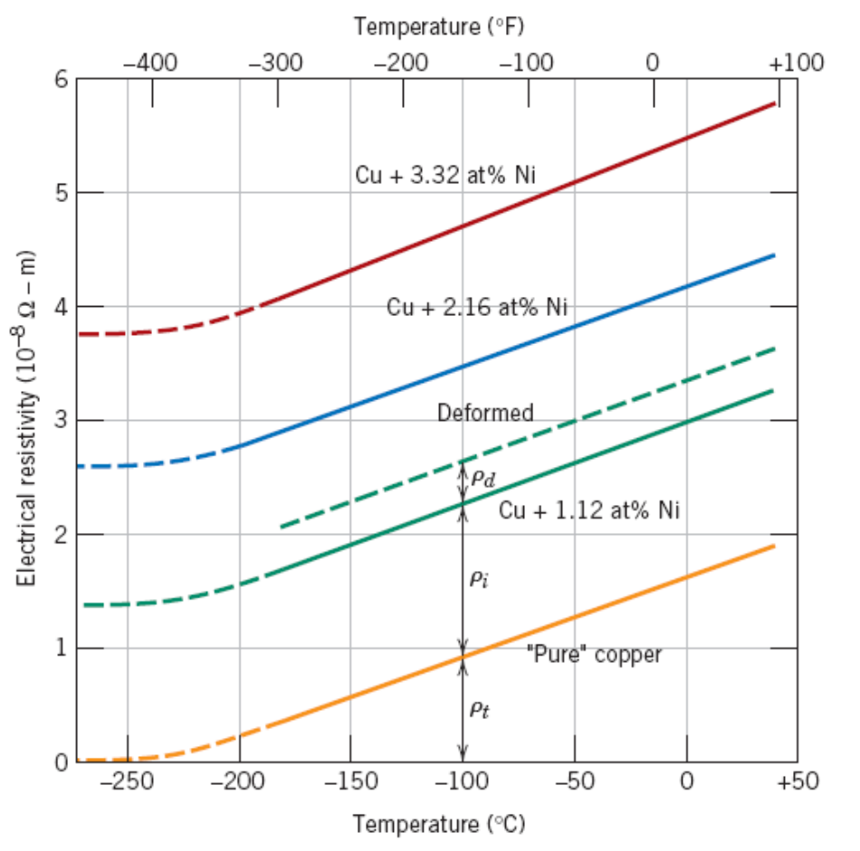
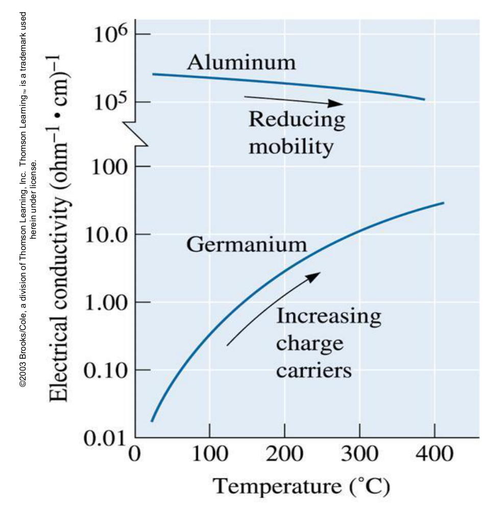

2nd Midterm: Test Questions
520 test questions in 52 blocks of ten, on Units 4 to 7. Part I of Assessment Test II is 10 questions with four options and one right answer: +0.5 points for a right answer, -0.15 for a wrong one, 0 for a blank, and the mark of the test never goes below 0. These are practice items, not official exercises. The Exam simulator draws ten of them with the mix of units of the real paper, or lets you practise one block.
Unit 4 · Phase diagrams 15 blocks
B01 — Components, phases and microconstituents
Ten test questions on phase diagrams, written for this portal in the style of Part I of Assessment Test II. Each question has four options and only one is right. Answer all ten before opening any explanation.
Question 1 · Homogeneous region of the microstructure
Which term describes a chemically and structurally homogeneous region that forms part of the microstructure:
Answer and explanation
Answer: b)
Session 7, Slide 2 defines a phase as "a chemically and structurally homogeneous region that forms part of the microstructure"; it may contain one or several components (ferrite, austenite, CaCO₃).
Why the other options are wrong:
- a) A component is a substance of fixed composition (Al, Al₂O₃) that can form part of a phase; it is not a region of the microstructure.
- c) A microconstituent is a structure seen on a polished surface and may contain several phases, so it need not be homogeneous.
- d) The solubility limit is the maximum amount of solute a phase can dissolve, a composition, not a region of the material.
Session 7, Slide 2.
Question 2 · What a component is
Which one of the following statements about a component of an alloy system is TRUE:
Answer and explanation
Answer: a)
Session 7, Slide 2: a component is "a chemical substance or compound with a fixed composition that can form part of a phase or of an alloy", with aluminium and alumina as examples.
Why the other options are wrong:
- b) This is the definition of a microconstituent, the neighbouring term of the same slide.
- c) Alumina, Al₂O₃, is given as a component, so a component can be a compound and not only an element.
- d) This is the definition of a phase, swapped with that of a component.
Session 7, Slide 2.
Question 3 · Pearlite as a microconstituent
Pearlite, seen in the micrograph of a slowly cooled steel, is an example of:
Answer and explanation
Answer: c)
In the micrograph of Session 7, Slide 2, regions 2 and 3 are pearlite, a microconstituent made of two phases (ferrite and cementite) in thin alternating plates.
Why the other options are wrong:
- a) Pearlite is not a chemical substance that forms part of a phase; it is a visible structure made of phases.
- b) The single BCC phase is ferrite (region 1); pearlite contains ferrite and cementite.
- d) A solid solution of carbon in iron is a phase (ferrite or austenite), while pearlite is a mixture of two phases.
Session 7, Slide 2; Session 9, Slide 12.
Question 4 · Tin dissolved in saturated alpha
In the Pb-Sn system, α dissolves at most 18.3 wt% Sn at 183 °C. Determine the mass of Sn contained in 200 g of α of that maximum Sn content:
Answer and explanation
Answer: b)
A composition in wt% is the mass of Sn per 100 g of the phase (Session 7, Slide 32 gives 18.3 wt% Sn as the limit of α at 183 °C): $m_{Sn} = 0.183 \times 200 = 36.6$ g.
Why the other options are wrong:
- a) 18.3 g is the Sn in 100 g of α: the percentage was read as grams without scaling to the 200 g of the phase.
- c) $200 \times 18.3/81.7 = 44.8$ g treats the 200 g as the mass of Pb, that is, it takes the ratio Sn/Pb instead of Sn over the whole phase.
- d) $200 - 36.6 = 163.4$ g is the mass of Pb in the phase, not the mass of Sn.
Session 7, Slides 27 and 32 (α holds at most 18.3 wt% Sn at 183 °C).
Question 5 · Meaning of the solubility limit
The solubility limit of a solute in a solid phase is:
Answer and explanation
Answer: d)
The solvus "gives the maximum solubility of B in α (and of A in β) at each temperature in the solid state" (Session 7, Slide 26): the solubility limit is the largest amount of solute the phase can hold at that temperature; beyond it another phase appears.
Why the other options are wrong:
- a) The composition that melts at the lowest temperature is the eutectic composition, a different point of the diagram.
- b) The temperature at which the first solid forms is the liquidus temperature of the alloy.
- c) The lever rule gives the amount of a phase, not the maximum composition of a phase.
Session 7, Slides 2-3 and 26; Session 8, Slide 3.
Question 6 · A wrong idea about phases
Which one of the following statements about phases is FALSE:
Answer and explanation
Answer: c)
Statement c) is false: Session 7, Slide 2 says that a phase "can be made of one or of several components"; ferrite, for example, is a solid solution of C in Fe.
Why the other options are wrong:
- a) True: ferrite (BCC) and austenite (FCC) differ in structure, so they are two phases (Session 7, Slide 2).
- b) True: a solid solution such as ferrite contains two components, Fe and C.
- d) True: CaCO₃ is one of the examples of a phase on the slide.
Session 7, Slide 2.
Question 7 · Phase against microconstituent
Which one of the following statements comparing phases and microconstituents is TRUE:
Answer and explanation
Answer: a)
Session 7, Slide 2: a microconstituent "can be made of one phase or of several phases". In the steel of the slide, ferrite is a one-phase microconstituent and pearlite a two-phase one.
Why the other options are wrong:
- b) The relation is reversed: microconstituents are made of phases, not phases of microconstituents.
- c) Ferrite is a single phase (region 1 of the micrograph); the two-phase microconstituent is pearlite.
- d) A fixed composition is the property of a component, not of a microconstituent.
Session 7, Slide 2.
Question 8 · Components of a ceramic system
The components of the Al₂O₃-Cr₂O₃ ceramic phase diagram are:
Answer and explanation
Answer: d)
Components are substances of fixed composition (Session 7, Slide 2, which gives Al₂O₃ as an example). In the ceramic diagram of Session 10, Slide 2 the two components are the oxides Al₂O₃ and Cr₂O₃, placed at the ends of the composition axis.
Why the other options are wrong:
- a) The elements would be components only of a ternary Al-Cr-O description; the diagram is binary and uses the two oxides.
- b) The liquid and the solid solution are the phases of the system, not its components.
- c) Al₂₋ₓCrₓO₃ is the solid solution phase, whose composition varies; a component has a fixed composition.
Session 7, Slide 2; Session 10, Slide 2.
Question 9 · Three phases of a pure substance
From the shown P-T diagram of a pure substance, indicate the point where solid, liquid and vapour coexist:
Answer and explanation
Answer: c)
The three lines of a unary diagram meet at the triple point, where the three phases are in equilibrium (Session 7, Slides 3 and 5). Point 3 lies at the meeting of the sublimation, melting and vaporisation lines.
Why the other options are wrong:
- a) Point 1 lies inside the liquid region: only one phase.
- b) Point 2 lies on the melting line: solid and liquid coexist, but not vapour.
- d) Point 4 lies inside the solid region, above the sublimation line: only one phase.
Session 7, Slides 3 and 5.
Question 10 · Iron between 910 and 1394 °C
Between 910 °C and 1394 °C at atmospheric pressure, solid pure iron is:
Answer and explanation
Answer: b)
Session 7, Slide 6: α-Fe (BCC) below 910 °C, γ-Fe (FCC) between 910 and 1394 °C, δ-Fe (BCC) from 1394 °C to the melting point, 1538 °C.
Why the other options are wrong:
- a) α-Fe is the low-temperature BCC form, stable only below 910 °C.
- c) δ-Fe is the high-temperature BCC form, stable only above 1394 °C.
- d) In a pure substance at fixed pressure two solid phases coexist only at the transition temperature itself, not over a range.
Session 7, Slide 6.
B02 — Unary diagrams and isomorphous systems
Ten test questions on phase diagrams, written for this portal in the style of Part I of Assessment Test II. Each question has four options and only one is right. Answer all ten before opening any explanation.
Question 1 · Solid CO2 heated at 2 atm
A piece of solid CO₂ is heated slowly at a constant pressure of 2 atm. What will happen to it:
Answer and explanation
Answer: b)
The triple point of CO₂ is at 5.1 atm and −56.6 °C (Session 7, Slide 3). At any pressure below 5.1 atm, such as 2 atm, the horizontal line of constant pressure goes from the solid region straight into the gas region, so the solid sublimes; liquid CO₂ exists only above 5.1 atm.
Why the other options are wrong:
- a) Melting and boiling need a pressure above the triple point (5.1 atm); 2 atm is below it.
- c) The supercritical fluid needs more than the critical pressure, 73 atm, and more than 31.1 °C.
- d) Heating at constant pressure always crosses a phase line; staying solid ignores the sublimation line of the diagram.
Session 7, Slide 3 (CO₂ diagram: triple point 5.1 atm and −56.6 °C; critical point 73 atm).
Question 2 · Axes of a unary diagram
The equilibrium phase diagram of a one-component system is drawn with the axes:
Answer and explanation
Answer: d)
With a single component the composition is fixed, so the diagram is a P-T diagram, as for water and iron (Session 7, Slides 5-6).
Why the other options are wrong:
- a) Temperature against composition is the binary diagram at constant pressure; a unary system has no composition to vary.
- b) Composition is again fixed in a one-component system, so it cannot be an axis.
- c) Temperature against time is a cooling curve, the experiment used to locate the transitions, not the diagram.
Session 7, Slides 3, 5 and 6.
Question 3 · Cooling curve of pure iron
The cooling curve of pure iron recorded from 1600 °C down to room temperature shows:
Answer and explanation
Answer: b)
Session 7, Slide 8: pure iron shows one thermal arrest for solidification and one for each change of crystal structure (δ to γ and γ to α), so three plateaus.
Why the other options are wrong:
- a) This forgets that the solid-state changes of structure of iron are also transformations at a fixed temperature, each with its plateau.
- c) Changes of slope without plateaus are the behaviour of an alloy that solidifies over a range, not of a pure metal.
- d) The eutectoid (727 °C) belongs to Fe-C alloys; pure iron has no eutectoid, and this option misses one change of structure.
Session 7, Slides 6 and 8.
Question 4 · Order of the forms of iron
Order the solid forms of pure iron by increasing temperature of stability:
Answer and explanation
Answer: a)
Session 7, Slide 6: α-Fe (BCC) below 910 °C, γ-Fe (FCC) from 910 to 1394 °C and δ-Fe (BCC) from 1394 to 1538 °C.
Why the other options are wrong:
- b) The first pair is swapped: γ-Fe is stable above α-Fe, not below it.
- c) This is the fully reversed order, from the highest to the lowest temperature.
- d) The last pair is swapped: δ-Fe is the high-temperature form, just below melting, and γ-Fe lies between the two BCC forms.
Session 7, Slide 6; Session 9, Slide 3.
Question 5 · Allotropy of iron
Which one of the following statements about the allotropy of iron is TRUE:
Answer and explanation
Answer: c)
Session 9, Slide 3: allotropy is the existence of an element in two or more forms that differ in the arrangement of the atoms; iron undergoes two changes of crystal structure before it melts (α to γ and γ to δ).
Why the other options are wrong:
- a) The structures are swapped: γ-Fe is FCC and α-Fe is BCC.
- b) δ-Fe is a phase of pure iron, not a component; the components of the system are Fe and C (or Fe₃C).
- d) Allotropy is the reverse: same element (fixed composition) with a different crystal structure.
Session 9, Slide 3; Session 7, Slide 6.
Question 6 · Cooling curve of a Cu-Ni alloy
Which picture describes the cooling curve of a Cu-Ni alloy of intermediate composition (complete solid solubility)?
Answer and explanation
Answer: b)
An alloy with complete solid solubility solidifies over a range of temperatures, between the liquidus and the solidus: its cooling curve shows no thermal arrest, only two changes of slope (Session 7, Slides 8-9). Curve B is the only one without a plateau.
Why the other options are wrong:
- a) Curve A has one plateau: the thermal arrest of a pure metal, which solidifies at one temperature.
- c) Curve C has a change of slope followed by a plateau: the behaviour of a hypoeutectic or hypereutectic alloy, whose last liquid solidifies at the eutectic temperature.
- d) Curve D has two plateaus: a pure substance with a further transformation at fixed temperature, such as pure iron.
Session 7, Slides 8-9; Session 7, Slide 27 (cooling curve with a plateau at the eutectic).
Question 7 · Thermal arrest of a pure metal
During solidification a pure metal shows a plateau in its cooling curve because:
Answer and explanation
Answer: a)
Session 7, Slide 8: while a pure metal solidifies, the heat lost to the surroundings equals the heat supplied by the solidifying metal, so the temperature stays constant (thermal arrest).
Why the other options are wrong:
- b) Heat is still being lost during the plateau; the temperature stays constant only because the latent heat replaces it.
- c) Solidifying over a range of temperatures is the behaviour of an alloy, and it produces changes of slope, not a plateau.
- d) Diffusion has nothing to do with the arrest; the cause is the balance of heat flows.
Session 7, Slide 8.
Question 8 · Line where solidification ends
Which line of a binary isomorphous diagram joins the temperatures at which solidification ends:
Answer and explanation
Answer: c)
Session 7, Slide 9: the diagram is built from cooling curves; joining the start points of solidification gives the liquidus and joining the end points gives the solidus, below which everything is solid.
Why the other options are wrong:
- a) The liquidus joins the start points of solidification, the swapped neighbour.
- b) The solvus limits the solubility in the solid state; an isomorphous system with complete solubility has none.
- d) A tie line is a horizontal construction at one temperature, not a line joining solidification temperatures.
Session 7, Slide 9.
Question 9 · Start of solidification of the 40 wt% B alloy
From the shown A-B phase diagram, indicate the temperature at which the 40 wt% B alloy starts to solidify on cooling:
Answer and explanation
Answer: c)
Solidification starts where the vertical line of the alloy meets the liquidus (Session 7, Slides 9-10); for 40 wt% B this is at 1250 °C, the upper dashed line.
Why the other options are wrong:
- a) 1140 °C is where the alloy line meets the solidus: the end of solidification, not its start.
- b) 1200 °C is only the temperature of the tie line drawn on the diagram, already inside α + L.
- d) 1400 °C is the melting point of pure B, read at the end of the axis instead of on the alloy line.
Session 7, Slides 9-10.
Question 10 · Alloys with complete solid solubility
Which one of the following statements about alloys with complete solid solubility is TRUE:
Answer and explanation
Answer: d)
Session 7, Slide 11: with complete solid solubility the material is a single-phase polycrystal, the melting temperature is modified by the solute, and the alloy does not solidify at a constant temperature but over a range, between liquidus and solidus.
Why the other options are wrong:
- a) Solidification at one temperature is the behaviour of a pure metal (or a eutectic), not of a solid solution alloy.
- b) Complete solubility gives a single solid phase, the solid solution; two solid phases need limited solubility.
- c) The slide states the opposite: adding solute modifies the melting temperature.
Session 7, Slide 11.
B03 — Isomorphous systems and the Gibbs phase rule
Ten test questions on phase diagrams, written for this portal in the style of Part I of Assessment Test II. Each question has four options and only one is right. Answer all ten before opening any explanation.
Question 1 · Between liquidus and solidus
At a temperature between the liquidus and the solidus, a Cu-Ni alloy consists of:
Answer and explanation
Answer: b)
Session 7, Slide 10: at a temperature $T_1$ between the liquidus and the solidus the microstructure is crystallites of the solid solution SS₁ in a matrix of liquid L₁, whose compositions are read on the solidus and the liquidus.
Why the other options are wrong:
- a) Liquid only is the state above the liquidus; between the two lines solid has already formed.
- c) Two solid solutions need limited solubility (a eutectic system); Cu-Ni has complete solid solubility and a single solid phase.
- d) A single-phase polycrystal is the state below the solidus, when the last liquid has disappeared.
Session 7, Slides 10-11.
Question 2 · Composition of the solid during slow cooling
A Cu-35 wt% Ni alloy is cooled very slowly (equilibrium) from the liquid to below its solidus. What will happen to the composition of the solid that forms:
Answer and explanation
Answer: a)
In equilibrium the solid follows the solidus and the liquid follows the liquidus as the temperature falls (Session 7, Slide 23): the first solid has 46 wt% Ni (b′), it becomes poorer in Ni (40 wt% at c′), and at the solidus (d′) it reaches the alloy composition, 35 wt% Ni, when the last liquid disappears.
Why the other options are wrong:
- b) Keeping the composition of the first solid is what happens inside the grains with fast cooling (coring), not in equilibrium.
- c) The liquidus gives the composition of the liquid, not of the solid; and both phases become poorer in Ni on cooling.
- d) The first solid is richer in Ni (46 wt%) than the alloy; it reaches 35 wt% only at the solidus.
Session 7, Slides 10 and 23.
Question 3 · Solidification range from the diagram
Determine the width of the solidification interval of the alloy marked $C_0$ on the isomorphous diagram below:
Answer and explanation
Answer: c)
The alloy starts to solidify on the liquidus (1250 °C) and ends on the solidus (1140 °C) (Session 7, Slides 9-11), so the range is $1250 - 1140 = 110$ °C.
Why the other options are wrong:
- a) $1250 - 1200 = 50$ °C uses the temperature of the drawn tie line as the end of solidification instead of the solidus.
- b) $1200 - 1140 = 60$ °C again takes the tie line, this time as the start of solidification instead of the liquidus.
- d) $1250 - 1000 = 250$ °C takes the melting point of pure A as the end of solidification instead of reading the solidus on the alloy line.
Session 7, Slides 9-11.
Question 4 · Same lattice as the pure metal
A Cu-Ni solid solution has the same crystal structure as pure copper because:
Answer and explanation
Answer: d)
Session 7, Slide 11: with complete solid solubility the material is a polycrystalline single-phase material whose structure is not different from that of the pure metal, because the atoms of B simply replace atoms of A in the same lattice.
Why the other options are wrong:
- a) Interstitial solid solutions, such as C in Fe, hold only small amounts of solute; complete solubility needs substitution of one atom for the other.
- b) Separate particles would be another phase, and the alloy would no longer be a single solid solution.
- c) Very different structures would prevent complete solubility; the slide describes the solute entering the same lattice.
Session 7, Slide 11.
Question 5 · A wrong statement about Al2O3-Cr2O3
Which one of the following statements about the Al₂O₃-Cr₂O₃ system is FALSE:
Answer and explanation
Answer: c)
Statement c) is false: Al₂O₃-Cr₂O₃ is isomorphous (Session 10, Slide 2), so its alloys solidify over a range between the liquidus and the solidus; only the two pure oxides solidify at one temperature (Session 7, Slide 11).
Why the other options are wrong:
- a) True: the slide describes a complete interval of solid solution, Al₂₋ₓCrₓO₃, below the solidus.
- b) True: the diagram has the lens shape of a binary isomorphous system.
- d) True: below 950 °C the slide shows immiscibility, with two crystalline phases.
Session 10, Slide 2; Session 7, Slide 11.
Question 6 · Degrees of freedom on a melting line
Determine the degrees of freedom of a pure substance at a point of its melting line, with pressure and temperature both free:
Answer and explanation
Answer: b)
Gibbs phase rule with $N = 2$ (Session 7, Slide 13): one component and two phases (solid and liquid) on the line, so $F = C - P + 2 = 1 - 2 + 2 = 1$. If the temperature is chosen, the line fixes the pressure.
Why the other options are wrong:
- a) $F = 0$ is the triple point, where three phases coexist ($1 - 3 + 2$).
- c) $F = 2$ is a point inside a single-phase region ($1 - 1 + 2$).
- d) $F = 3$ comes from adding the number of phases instead of subtracting it ($1 + 2 + 2 - 2$): a wrong sign in the rule.
Session 7, Slide 13.
Question 7 · Meaning of N in the phase rule
In the Gibbs phase rule $F = C - P + N$, the term $N$ is the number of:
Answer and explanation
Answer: d)
Session 7, Slide 13: $N$ is the number of non-compositional variables (pressure and temperature, $N = 2$); with the pressure fixed at 1 atm, $N = 1$ and $F = C - P + 1$.
Why the other options are wrong:
- a) The number of phases is $P$, the term that is subtracted.
- b) The number of components is $C$.
- c) The degrees of freedom are $F$, the result of the rule, not one of its terms.
Session 7, Slide 13.
Question 8 · Why the eutectic temperature is fixed
At 1 atm, the eutectic reaction of a binary alloy takes place at one fixed temperature because:
Answer and explanation
Answer: a)
At the eutectic point L, α and β coexist in a two-component system at constant pressure: $F = 2 - 3 + 1 = 0$ (Session 7, Slides 13 and 27). Temperature and the compositions of the three phases are all fixed, so the reaction is invariant and the cooling curve shows a plateau.
Why the other options are wrong:
- b) With two phases $F = 1$ and the alloy would transform over a range of temperatures, as in L + α.
- c) The eutectic alloy has two components; it behaves like a pure metal only because three phases coexist.
- d) Heat is released by the reaction; it is that latent heat that keeps the temperature constant on the plateau.
Session 7, Slides 13 and 27.
Question 9 · Degrees of freedom read on a diagram
From the shown A-B phase diagram at constant pressure, indicate the degrees of freedom of the 30 wt% B alloy at 550 °C:
Answer and explanation
Answer: b)
At 30 wt% B and 550 °C the point lies below the liquidus (650 °C at 30 wt% B) and inside α + L. With two components and two phases at constant pressure, $F = C - P + 1 = 2 - 2 + 1 = 1$ (Session 7, Slide 13).
Why the other options are wrong:
- a) $F = 0$ holds only on the eutectic line at 450 °C, where L, α and β coexist.
- c) $F = 2$ is the value inside a single-phase field (L, α or β), not in α + L.
- d) $F = 3$ uses $N = 2$ and one phase, ignoring both the fixed pressure and the liquid present.
Session 7, Slides 13 and 26.
Question 10 · Experiment that gives the liquidus
Which procedure is used to find the liquidus and solidus temperatures of the alloys of a binary system:
Answer and explanation
Answer: c)
Session 7, Slides 8-9: the temperature of each cooling alloy is recorded against time; the changes of slope give the start and the end of solidification, and joining them over several compositions gives the liquidus and the solidus.
Why the other options are wrong:
- a) The phase rule counts degrees of freedom; it gives no temperatures.
- b) The lever rule needs the diagram already drawn: it gives amounts of phases, not the boundaries.
- d) Tie lines are constructions on an existing diagram, not measurements on micrographs.
Session 7, Slides 8-9.
B04 — Gibbs phase rule and tie lines
Ten test questions on phase diagrams, written for this portal in the style of Part I of Assessment Test II. Each question has four options and only one is right. Answer all ten before opening any explanation.
Question 1 · One degree of freedom on a P-T diagram
On the P-T diagram below, at which numbered point can only one of the two variables, T or P, be chosen freely?
Answer and explanation
Answer: b)
With one component and $N = 2$, $F = 1 - P + 2$ (Session 7, Slide 13). Point 2 lies on the melting line, where solid and liquid coexist: $F = 1 - 2 + 2 = 1$.
Why the other options are wrong:
- a) Point 1 lies inside the liquid region: one phase, $F = 1 - 1 + 2 = 2$.
- c) Point 3 is the triple point: three phases, $F = 1 - 3 + 2 = 0$.
- d) Point 4 lies inside the solid region: one phase, $F = 2$, like point 1.
Session 7, Slides 5 and 13.
Question 2 · Degrees of freedom of a unary system
Which one of the following statements about a one-component system with P and T free is TRUE:
Answer and explanation
Answer: a)
Session 7, Slide 13 (water): $F = 1 - P + 2$ gives $F = 2$ in a single-phase region, $F = 1$ on a two-phase line and $F = 0$ at the triple point, where three phases coexist at one temperature and one pressure.
Why the other options are wrong:
- b) In a single-phase region $F = 1 - 1 + 2 = 2$: temperature and pressure can both change.
- c) On a two-phase line $F = 1 - 2 + 2 = 1$; the values of b) and c) have been swapped.
- d) One degree of freedom belongs to a two-phase line; the triple point has $F = 1 - 3 + 2 = 0$.
Session 7, Slide 13.
Question 3 · Fixing the temperature in alpha plus liquid
A binary alloy at 1 atm lies inside the α + L region of its diagram. What will happen to the phases if the temperature is fixed:
Answer and explanation
Answer: d)
In α + L at constant pressure $F = 2 - 2 + 1 = 1$ (Session 7, Slide 13). Choosing the temperature uses that single degree of freedom, so the compositions of α and L are fixed: they are the ends of the tie line at that temperature (Session 7, Slides 15-16). Changing the alloy composition only changes the amounts.
Why the other options are wrong:
- a) Free compositions would need $F = 2$, which holds only in a single-phase field.
- b) Fixing the temperature does not remove a phase; the alloy stays in the two-phase field.
- c) A third phase would need $F = 0$, which only happens at an invariant temperature, not at any chosen one.
Session 7, Slides 13 and 15-16.
Question 4 · A wrong count of degrees of freedom
Which one of the following statements about a binary system at 1 atm is FALSE:
Answer and explanation
Answer: a)
Statement a) is false: in a two-phase field $F = C - P + 1 = 2 - 2 + 1 = 1$ (Session 7, Slide 13).
Why the other options are wrong:
- b) True: one phase gives $F = 2 - 1 + 1 = 2$; temperature and composition can both change.
- c) True: at the end of the axis there is one component with two phases, $F = 1 - 2 + 1 = 0$, which is why a pure metal melts at a fixed temperature.
- d) True: three phases (L, α, β) in a two-component system give $F = 2 - 3 + 1 = 0$.
Session 7, Slides 13 and 27.
Question 5 · Zero degrees of freedom
In a binary system at constant pressure, which situation has zero degrees of freedom:
Answer and explanation
Answer: c)
With $C = 2$ and $N = 1$, $F = 3 - P$ (Session 7, Slide 13); $F = 0$ needs three phases, as at the invariant reactions (Session 8, Slide 6), where temperature and compositions are all fixed.
Why the other options are wrong:
- a) Two phases give $F = 1$: the field L + solid exists over a range of temperatures.
- b) A single phase gives $F = 2 - 1 + 1 = 2$: temperature and composition are both free.
- d) α + β below the eutectic line is a two-phase field with $F = 1$, not an invariant point.
Session 7, Slide 13; Session 8, Slide 6.
Question 6 · The eutectic on the cooling curve
On the cooling curve of a Pb-61.9 wt% Sn alloy, the reaction at 183 °C appears as:
Answer and explanation
Answer: d)
61.9 wt% Sn is the eutectic composition: the liquid transforms into α + β at 183 °C, an invariant reaction ($F = 0$), so its cooling curve is "similar to that of a pure solid", with a single plateau (Session 7, Slide 27).
Why the other options are wrong:
- a) A change of slope marks a reaction that runs over a range of temperatures, such as the start of solidification of a non-eutectic alloy.
- b) The latent heat of the reaction stops the temperature from falling; it does not make it drop.
- c) Two plateaus would need two invariant reactions; the eutectic alloy has only one, at 183 °C.
Session 7, Slides 27-28.
Question 7 · Composition of the liquid on a tie line
From the shown A-B phase diagram, indicate the composition of the liquid in the 40 wt% B alloy at 1200 °C:
Answer and explanation
Answer: a)
The tie line at 1200 °C crosses α + L; its end on the liquidus gives the composition of the liquid, 30 wt% B (Session 7, Slide 15).
Why the other options are wrong:
- b) 40 wt% B is the overall composition of the alloy, not that of either phase.
- c) 55 wt% B is the end on the solidus: the composition of α.
- d) 70 wt% is the A content of the liquid ($100 - 30$), read as wt% of the other component.
Session 7, Slide 15.
Question 8 · What a tie line is
Which one of the following statements about the tie line is TRUE:
Answer and explanation
Answer: d)
Session 7, Slide 15: the tie line is a horizontal (constant temperature) line drawn through the alloy point across a two-phase region; its intersections with the boundaries give the compositions of the two phases.
Why the other options are wrong:
- a) The ends give compositions; the amounts come from the lever rule, the other tool of the same slide.
- b) The line at constant composition is the vertical line of the alloy, not the tie line.
- c) In a single-phase region the phase has the composition of the alloy; no tie line is needed.
Session 7, Slide 15.
Question 9 · Fraction of alpha on a tie line
A 40 wt% B alloy at 1200 °C contains liquid of 30 wt% B and α of 55 wt% B. Determine the mass percentage of α:
Answer and explanation
Answer: b)
Lever rule (Session 7, Slide 16): $W_\alpha = \dfrac{C_0 - C_L}{C_\alpha - C_L} = \dfrac{40 - 30}{55 - 30} = 0.400$.
Why the other options are wrong:
- a) $(40 - 30)/55 = 0.182$ divides the right arm by the composition of α instead of by the whole tie line.
- c) $(55 - 40)/(55 - 30) = 0.600$ uses the arm on the side of α itself: arms swapped, this is the fraction of liquid.
- d) $40/55 = 0.727$ is a ratio of compositions, not a mass balance.
Session 7, Slides 15-17.
Question 10 · Statement of the lever rule
In the lever rule, the mass fraction of a phase equals:
Answer and explanation
Answer: c)
Session 7, Slide 16: the fraction of each phase is the length of the tie line from the alloy composition to the boundary of the other phase, divided by the total length of the tie line, $W_L = S/(R + S)$.
Why the other options are wrong:
- a) Taking the arm on the phase's own side swaps the arms and gives the fraction of the other phase.
- b) The ratio of the arms, $R/S$, is the ratio of the amounts of the two phases, not a fraction of the whole.
- d) A ratio of compositions is not a mass balance and does not give the amount of a phase.
Session 7, Slide 16.
B05 — Tie line and lever rule
Ten test questions on phase diagrams, written for this portal in the style of Part I of Assessment Test II. Each question has four options and only one is right. Answer all ten before opening any explanation.
Question 1 · Two alloys on the same tie line
Two Cu-Ni alloys, of 32 and 40 wt% Ni, are held at the same temperature inside α + L. What will happen to their phases:
Answer and explanation
Answer: a)
At a given temperature in α + L, $F = 1$ has been used by the temperature, so the compositions of α and L are the ends of the same tie line for every alloy (Session 7, Slides 13 and 15). Changing the overall composition only moves the alloy point along the tie line and changes the amounts given by the lever rule (Slide 16).
Why the other options are wrong:
- b) Swapped: the compositions are the ones fixed by the tie line, the amounts are the ones that change.
- c) Equal amounts would need equal overall compositions; the alloy points sit at different places on the lever.
- d) The phase compositions do not depend on the alloy at fixed temperature, since $F = 1$ in a two-phase field.
Session 7, Slides 13 and 15-16.
Question 2 · Liquid fraction at point c-prime
At the temperature of point c′ of the Cu-Ni diagram the tie line runs from $C_L = 29$ to $C_\alpha = 40$ wt% Ni. Determine the mass percentage of liquid in a Cu-33 wt% Ni alloy at that temperature:
Answer and explanation
Answer: b)
Lever rule (Session 7, Slide 16): $W_L = \dfrac{C_\alpha - C_0}{C_\alpha - C_L} = \dfrac{40 - 33}{40 - 29} = \dfrac{7}{11} = 0.636$.
Why the other options are wrong:
- a) $(33 - 29)/(40 - 29) = 0.364$ is the fraction of α: the arm on the side of the liquid itself was used (arms swapped).
- c) $33/40 = 0.825$ divides the alloy composition by that of α, a ratio of compositions and not a mass balance.
- d) $29/33 = 0.879$ divides the liquid composition by the alloy composition, again a ratio of compositions.
Session 7, Slides 16 and 23 (tie line at c′: 29 and 40 wt% Ni).
Question 3 · Mass of alpha in a 5 kg casting
A 5 kg Cu-38 wt% Ni casting is held where the tie line gives $C_L = 32$ and $C_\alpha = 43$ wt% Ni. Determine the mass of α:
Answer and explanation
Answer: c)
Lever rule (Session 7, Slide 16): $W_\alpha = \dfrac{C_0 - C_L}{C_\alpha - C_L} = \dfrac{38 - 32}{43 - 32} = 0.545$, so $m_\alpha = 0.545 \times 5 = 2.73$ kg.
Why the other options are wrong:
- a) $0.38 \times 5 = 1.90$ kg takes the alloy composition as the fraction of α.
- b) $5 \times (43 - 38)/(43 - 32) = 2.27$ kg is the mass of liquid: the arms were swapped.
- d) $5 \times 38/43 = 4.42$ kg uses a ratio of compositions instead of the lever.
Session 7, Slides 16-17.
Question 4 · Alloy composition from the phase amounts
At some temperature an A-B alloy is 75 % α of 50 wt% B and 25 % liquid of 20 wt% B. Determine the composition of the alloy:
Answer and explanation
Answer: d)
The lever rule solved for $C_0$ (Session 7, Slides 16 and 21): $W_\alpha = (C_0 - C_L)/(C_\alpha - C_L)$ gives $C_0 = C_L + W_\alpha (C_\alpha - C_L) = 20 + 0.75 \times 30 = 42.5$ wt% B; the same as the mass balance $0.75 \times 50 + 0.25 \times 20$.
Why the other options are wrong:
- a) $20 + 0.25 \times 30 = 27.5$ uses the fraction of liquid in place of that of α: arms swapped.
- b) $(20 + 50)/2 = 35.0$ is the plain average of the two phase compositions, ignoring their amounts.
- c) $0.75 \times 50 = 37.5$ counts only the B inside α and forgets the B in the liquid.
Session 7, Slides 16 and 21.
Question 5 · Moving the alloy towards the liquidus
On a fixed tie line, as the alloy composition approaches the liquidus end, the fraction of liquid:
Answer and explanation
Answer: a)
$W_L = (C_\alpha - C_0)/(C_\alpha - C_L)$ (Session 7, Slide 16): the arm opposite the liquid grows as $C_0$ approaches $C_L$, and at $C_0 = C_L$ it equals the whole tie line, $W_L = 1$ (as at point b′ of Slide 23).
Why the other options are wrong:
- b) Inverted trend: the phase whose boundary the alloy approaches becomes more abundant, not less.
- c) There is no limit at 0.5; the fraction runs from 0 at one end of the tie line to 1 at the other.
- d) The compositions are fixed, but the amounts change with the position of the alloy on the lever.
Session 7, Slides 16 and 23.
Question 6 · Lever rule along the cooling of Cu-35 Ni
Which one of the following statements about a Cu-35 wt% Ni alloy cooled in equilibrium is TRUE:
Answer and explanation
Answer: d)
Session 7, Slide 23: at b′ (liquidus) the tie line runs from 35 to 46 wt% Ni and $W_L = (46 - 35)/(46 - 35) = 1$; at c′ $W_L = 0.455$; at d′ (solidus) $W_L = (35 - 35)/(35 - 24) = 0$.
Why the other options are wrong:
- a) Swapped limits: at the solidus the last liquid disappears, $W_L = 0$.
- b) Inverted trend: the solid grows from 0 to 1 as the temperature falls.
- c) The fraction depends on the tie-line compositions, not on the temperature midpoint; at c′ it is 0.455, not 0.5.
Session 7, Slide 23.
Question 7 · Checking a lever-rule result
A lever-rule result is checked because the sum of each phase fraction times its composition must equal:
Answer and explanation
Answer: c)
The lever rule is a mass balance of the solute: $W_L C_L + W_\alpha C_\alpha = C_0$ (with $W_L + W_\alpha = 1$). For the slide example, $0.727 \times 32 + 0.273 \times 43 = 35.0$ wt% Ni $= C_0$ (Session 7, Slides 16-21).
Why the other options are wrong:
- a) 100 % is the sum of the fractions themselves, $W_L + W_\alpha = 1$, not of the fractions times the compositions.
- b) The tie-line length is the denominator of the rule, not the result of the balance.
- d) The eutectic composition has nothing to do with an isomorphous tie line; the balance returns the alloy composition.
Session 7, Slides 16-21.
Question 8 · What kind of fraction the lever rule gives
Applied on a diagram whose composition axis is in wt%, the lever rule gives:
Answer and explanation
Answer: d)
Session 7, Slide 16 writes $W_L$ and $W_\alpha$, mass fractions, because the composition axis is in weight percent: the balance is a balance of masses. On an atomic % axis the same construction would give atom fractions.
Why the other options are wrong:
- a) Volume fractions would also need the densities of the phases, which the diagram does not give.
- b) Atom fractions come out only when the axis is in atomic %, not in wt%.
- c) Area fractions on a micrograph estimate volume, not mass; the lever rule does not give them.
Session 7, Slides 16-21.
Question 9 · Mass of liquid read on the diagram
From the shown A-B phase diagram, indicate the mass of liquid in 2 kg of the alloy marked $C_0$ at 1200 °C:
Answer and explanation
Answer: a)
The tie line at 1200 °C runs from 30 (liquidus) to 55 wt% B (solidus) through $C_0 = 40$ (Session 7, Slides 15-16): $W_L = (55 - 40)/(55 - 30) = 0.600$, and $0.600 \times 2 = 1.20$ kg.
Why the other options are wrong:
- b) $2 \times (40 - 30)/(55 - 30) = 0.80$ kg is the mass of α: the arms were swapped.
- c) $2 \times 40/55 = 1.45$ kg is a ratio of compositions, not a lever.
- d) 2.00 kg assumes the alloy is all liquid, reading 1200 °C as above the liquidus of the alloy (1250 °C).
Session 7, Slides 15-16.
Question 10 · Equal amounts of the two phases
On a tie line from 30 wt% B (liquid) to 55 wt% B (α), the alloy that contains equal masses of liquid and α has:
Answer and explanation
Answer: b)
With $W_L = W_\alpha = 0.5$ the alloy sits at the middle of the tie line (Session 7, Slide 16): $C_0 = 30 + 0.5 \times (55 - 30) = 42.5$ wt% B.
Why the other options are wrong:
- a) 12.5 is half the length of the tie line, $25/2$, without adding it to the liquid end at 30 wt% B.
- c) 50.0 wt% takes "50 % of each phase" as the composition of the alloy, confusing an amount with a composition.
- d) 55.0 wt% B is the α end of the tie line, where the alloy would be all α.
Session 7, Slide 16.
B06 — Coring and the eutectic reaction
Ten test questions on phase diagrams, written for this portal in the style of Part I of Assessment Test II. Each question has four options and only one is right. Answer all ten before opening any explanation.
Question 1 · Why fast cooling gives cored grains
With a high cooling rate, the grains of a Cu-Ni casting have a cored structure because:
Answer and explanation
Answer: a)
Session 7, Slide 23: when the alloy goes down through the diagram too quickly, diffusion in the solid has no time to keep the whole solid at the equilibrium composition; only the surface of each crystal has the solidus composition and the inside keeps the composition it had when it formed (microsegregation).
Why the other options are wrong:
- b) The slide blames the slow diffusion in the solid, not in the liquid; the liquid keeps mixing.
- c) Cu-Ni is isomorphous and has no eutectic; coring is a composition gradient inside one phase.
- d) The equilibrium diagram does not change with the cooling rate; it is the average composition of the solid that follows a different (non-equilibrium) line.
Session 7, Slides 23-24.
Question 2 · Meaning of a cored structure
A cored (microsegregated) structure consists of:
Answer and explanation
Answer: c)
Session 7, Slide 23: non-equilibrium solidification gives a microstructure of heterogeneous composition, microsegregation or cored structure; in Cu-35 wt% Ni the grains have 46 wt% Ni at the centre and 31 wt% Ni at the edge.
Why the other options are wrong:
- a) Alternating plates of two phases describe a eutectic (or eutectoid) product, not coring.
- b) A network around former grains describes a proeutectoid phase such as cementite in steels.
- d) Uniform grains with the alloy composition are the result of equilibrium cooling (or of homogenisation), the opposite case.
Session 7, Slides 23-24.
Question 3 · End of solidification with fast cooling
A Cu-35 wt% Ni alloy is cooled fast through the α + L region. What will happen to the end of its solidification:
Answer and explanation
Answer: d)
With fast cooling the average composition of the solid follows a non-equilibrium solidus that lies to the right of the equilibrium one, so liquid survives below the equilibrium solidus; in the slide example solidification ends at e′ instead of d′ (Session 7, Slide 23; Slide 24: at $T_7$ instead of $T_5$).
Why the other options are wrong:
- a) Ending on the equilibrium solidus is the equilibrium (slow cooling) case.
- b) The trend is inverted: coring delays the end of solidification to lower temperatures, it does not advance it.
- c) At the liquidus solidification only starts; this confuses the start with the end.
Session 7, Slides 23-24.
Question 4 · Liquid left with a cored solid
With fast cooling, at point c′ a Cu-35 wt% Ni alloy has liquid of 29 wt% Ni and cored α whose average composition is 42 wt% Ni. Determine the mass percentage of liquid:
Answer and explanation
Answer: c)
The tie line now ends on the non-equilibrium solidus, at the average composition of the solid (Session 7, Slide 23); the lever rule (Slide 16) gives $W_L = \dfrac{42 - 35}{42 - 29} = \dfrac{7}{13} = 0.538$.
Why the other options are wrong:
- a) $(40 - 35)/(40 - 29) = 0.455$ uses the equilibrium solidus (40 wt% Ni at c′), which is the equilibrium answer, not the fast-cooling one.
- b) $(35 - 29)/(42 - 29) = 0.462$ is the fraction of α: the arms were swapped.
- d) $35/42 = 0.833$ is a ratio of compositions, not a lever.
Session 7, Slides 16 and 23 (c′: liquid 29 wt% Ni, average solid 42 wt% Ni).
Question 5 · Removing the coring
Which treatment removes the coring of a Cu-Ni casting:
Answer and explanation
Answer: b)
Session 7, Slide 24: microsegregation is eliminated with a homogenisation heat treatment at a temperature below the solidus (below the lowest temperature at which liquid could exist); solid-state diffusion evens out the composition of the grains.
Why the other options are wrong:
- a) A higher cooling rate leaves less time for diffusion and makes the coring worse.
- c) Heating above the liquidus melts the casting; on cooling again the same coring would form.
- d) At room temperature diffusion is too slow to change the composition, and cold work only deforms the grains.
Session 7, Slide 24.
Question 6 · How homogenisation works
Which one of the following statements about the homogenisation of a cored alloy is TRUE:
Answer and explanation
Answer: a)
Session 7, Slide 24: the treatment is done at $T_{TT}$ below the lowest temperature at which liquid could exist, and the solid-state diffusion of Topic 3 evens out the composition inside the grains.
Why the other options are wrong:
- b) Above the solidus (and in a cored casting even somewhat below it) liquid would form; the slide places the treatment below that temperature.
- c) No new phase forms; the alloy stays a single solid solution that only changes its internal composition.
- d) The cooling rate is not the mechanism; time at high temperature for diffusion is.
Session 7, Slide 24.
Question 7 · Equation of the eutectic reaction
On cooling, the eutectic reaction of a binary system is:
Answer and explanation
Answer: d)
Session 7, Slide 27 and Session 8, Slide 6: in the eutectic reaction a liquid transforms at a fixed temperature into two solids, $L \rightarrow \alpha + \beta$.
Why the other options are wrong:
- a) α + L → β is the peritectic reaction (a solid and a liquid give a new solid).
- b) γ → α + β is the eutectoid reaction, the solid-state analogue with γ instead of L.
- c) L₁ → L₂ + α is the monotectic reaction, with a liquid miscibility gap.
Session 7, Slide 27; Session 8, Slide 6.
Question 8 · Behaviour of the eutectic liquid
Which one of the following statements about a liquid of eutectic composition is TRUE:
Answer and explanation
Answer: b)
Session 7, Slide 26: a liquid of eutectic composition does not pass through a two-phase L + solid region; at the eutectic temperature it transforms at once into two solids, α and β, in a fine structure of alternating layers.
Why the other options are wrong:
- a) Primary α followed by eutectic is the path of a hypoeutectic alloy, not of the eutectic one.
- c) A solidification range belongs to non-eutectic alloys; the eutectic reaction is invariant ($F = 0$).
- d) The eutectic product contains two phases, α and β, not one solid solution.
Session 7, Slides 26-27.
Question 9 · Line of maximum solid solubility
In a binary eutectic diagram, which line gives the maximum solubility of B in α at each temperature in the solid state:
Answer and explanation
Answer: d)
Session 7, Slide 26: the solvus gives the maximum solubility of B in α (and of A in β) at each temperature in the solid state.
Why the other options are wrong:
- a) The liquidus bounds the liquid region; above it everything is liquid.
- b) The solidus is the line below which there is no liquid; it limits α against α + L, not against α + β.
- c) The eutectic isotherm is the horizontal line of the eutectic reaction at a single temperature, not a line valid at each temperature.
Session 7, Slide 26.
Question 10 · Maximum solubility of B in alpha
From the shown A-B phase diagram, indicate the maximum solubility of B in α and the temperature at which it occurs:
Answer and explanation
Answer: a)
The α field is widest at the eutectic temperature: the solidus and the solvus of α meet at 15 wt% B and 450 °C, the left end of the eutectic line (Session 7, Slide 26).
Why the other options are wrong:
- b) 60 wt% B is the eutectic composition, a point of the liquid, not a limit of α.
- c) 800 °C is the melting point of pure A, where α holds no B at all; the right composition is paired with the wrong temperature.
- d) 90 wt% B is the limit of β at 450 °C, the neighbouring phase.
Session 7, Slide 26.
B07 — Eutectic systems and the Pb-Sn diagram
Ten test questions on phase diagrams, written for this portal in the style of Part I of Assessment Test II. Each question has four options and only one is right. Answer all ten before opening any explanation.
Question 1 · Phases at a marked point of Pb-Sn
From the shown Pb-Sn phase diagram, indicate the phases present at point 3:
Answer and explanation
Answer: a)
Point 3 (90 wt% Sn, 200 °C) lies above the eutectic line (183 °C), below the liquidus of the Sn-rich side and to the left of the β solidus: the narrow field between them is β + L (Session 7, Slides 26 and 28).
Why the other options are wrong:
- b) α + β lies below the eutectic line at 183 °C; point 3 is above it.
- c) The liquid field lies above the liquidus; point 3 is below the Sn-rich liquidus, which at 90 wt% Sn is near 219 °C.
- d) α + L is the field on the Pb-rich side of the eutectic composition; point 3 is on the Sn-rich side.
Session 7, Slides 26, 28 and 32.
Question 2 · One solid phase on the Pb-Sn diagram
On the Pb-Sn diagram below, which numbered point corresponds to an alloy made of one solid phase only?
Answer and explanation
Answer: b)
Point 2 (8 wt% Sn, 250 °C) lies inside the α field, below the solidus of α and above the solvus, so the alloy is single-phase α (Session 7, Slide 26; Session 8, Slide 2).
Why the other options are wrong:
- a) Point 1 (10 wt% Sn, 100 °C) lies beyond the solvus, in α + β: the alloy has crossed the solubility limit.
- c) Point 3 lies in β + L: one solid and the liquid.
- d) Point 4 lies above the liquidus, in the liquid field: one phase, but not a solid.
Session 7, Slide 26; Session 8, Slides 2-3.
Question 3 · Solubility of Pb in beta
In the Pb-Sn system at 183 °C, where β contains 97.8 wt% Sn, the maximum solubility of Pb in β is:
Answer and explanation
Answer: d)
At 183 °C the β limit is 97.8 wt% Sn (Session 7, Slide 32), so β holds at most $100 - 97.8 = 2.2$ wt% Pb.
Why the other options are wrong:
- a) 18.3 is the limit of α, given in wt% Sn: the neighbouring phase and the other element.
- b) $100 - 61.9 = 38.1$ wt% Pb is the Pb content of the eutectic liquid, not a limit of β.
- c) 97.8 is the Sn content of β, read as wt% of the other component.
Session 7, Slides 27 and 32.
Question 4 · Melting temperatures in Pb-Sn
Which one of the following statements about the Pb-Sn diagram is TRUE:
Answer and explanation
Answer: c)
The eutectic temperature, 183 °C (Session 7, Slide 28), is below the melting points of Pb (327 °C) and Sn (232 °C) (Problems T4_PhaseDiagrams I.pdf, p. 1): the two liquidus lines fall from the pure metals to the eutectic point.
Why the other options are wrong:
- a) Swapped: Pb melts at 327 °C and Sn at 232 °C.
- b) 61.9 wt% Sn is the eutectic composition, a point of the liquid; α holds at most 18.3 wt% Sn.
- d) 232 °C is the melting point of pure Sn, not the eutectic temperature (183 °C).
Session 7, Slides 28 and 32; Problems T4_PhaseDiagrams I.pdf, p. 1.
Question 5 · Microstructure of the eutectic alloy
Microstructure of a Pb-61.9 wt% Sn alloy just below 183 °C consists of:
Answer and explanation
Answer: d)
61.9 wt% Sn is the eutectic composition: the whole liquid transforms at 183 °C into colonies of alternating α and β layers, so the alloy is 100 % eutectic microconstituent (Session 7, Slide 28).
Why the other options are wrong:
- a) Primary α plus eutectic is the structure of a hypoeutectic alloy (below 61.9 wt% Sn).
- b) Primary β plus eutectic is the structure of a hypereutectic alloy (above 61.9 wt% Sn).
- c) A single solid solution would need an alloy inside the α or β field; the eutectic product has two phases.
Session 7, Slides 28-30.
Question 6 · Picture of the eutectic alloy
A liquid of eutectic composition has just finished solidifying at the eutectic temperature. Which picture describes its microstructure?
Answer and explanation
Answer: a)
The eutectic alloy is entirely eutectic: colonies of alternating α and β layers that grew together into the liquid (Session 7, Slide 28). Structure A shows only lamellar colonies.
Why the other options are wrong:
- b) Structure B has rounded primary crystals inside a lamellar matrix: a hypoeutectic or hypereutectic alloy (Session 7, Slides 30-31).
- c) Structure C has plain grains of one phase: a single solid solution, as in an isomorphous alloy.
- d) Structure D has small particles in single-phase grains: solid-state precipitation after crossing the solvus (Session 8, Slide 3).
Session 7, Slides 28 and 30-31; Session 8, Slide 3.
Question 7 · Beta inside the eutectic of A-B
From the shown A-B phase diagram, determine the mass percentage of β inside the eutectic microconstituent just below 450 °C:
Answer and explanation
Answer: c)
The eutectic forms from liquid of 60 wt% B; just below 450 °C the tie line runs from α (15) to β (90 wt% B) (Session 7, Slide 32): $W_\beta = \dfrac{60 - 15}{90 - 15} = \dfrac{45}{75} = 0.600$.
Why the other options are wrong:
- a) $(90 - 60)/(90 - 15) = 0.400$ is the fraction of α: arms swapped.
- b) 50 % assumes the two layers of the eutectic come in equal amounts, without the lever rule.
- d) $60/90 = 0.667$ divides the eutectic composition by that of β, a ratio of compositions.
Session 7, Slides 28 and 32.
Question 8 · Proportions inside every eutectic
Which one of the following statements about the Pb-Sn eutectic microconstituent is TRUE:
Answer and explanation
Answer: b)
Every eutectic forms from liquid of the eutectic composition, 61.9 wt% Sn, and splits on the same tie line from 18.3 to 97.8 wt% Sn (Session 7, Slide 32), so it is always $(97.8 - 61.9)/79.5 = 45.2$ % α and 54.8 % β, whatever alloy it comes from.
Why the other options are wrong:
- a) The alloy composition changes how much eutectic there is, not what the eutectic is made of.
- c) The eutectic always contains β; in a hypoeutectic alloy all the β is inside the eutectic.
- d) Below 183 °C no liquid is left; the eutectic is a mixture of two solids.
Session 7, Slides 28 and 32.
Question 9 · Which alloys are hypereutectic
From the shown A-B phase diagram, indicate which alloys are hypereutectic:
Answer and explanation
Answer: b)
Session 7, Slide 30: alloys between the eutectic composition and the β limit are hypereutectic. Here the eutectic is at 60 wt% B and the β limit at 90 wt% B.
Why the other options are wrong:
- a) Between the α limit (15) and the eutectic (60) the alloys are hypoeutectic.
- c) From 15 to 90 wt% B is the whole eutectic line: hypoeutectic, eutectic and hypereutectic alloys together.
- d) 60 wt% B is the eutectic alloy itself, neither hypo- nor hypereutectic.
Session 7, Slides 26 and 30-31.
Question 10 · Liquidus of the Pb-rich alloys
With an increase in Sn content from 0 to 61.9 wt%, the liquidus temperature of Pb-Sn alloys:
Answer and explanation
Answer: a)
The Pb-rich liquidus runs from the melting point of Pb (327 °C) down to the eutectic point (61.9 wt% Sn, 183 °C), where it meets the Sn-rich liquidus (Session 7, Slides 26 and 28).
Why the other options are wrong:
- b) Inverted trend: adding Sn lowers the temperature at which solid starts to form.
- c) Right trend, wrong end point: 232 °C is the melting point of Sn, the start of the other liquidus.
- d) A constant liquidus would mean Sn does not change the melting temperature; the slides show it falling to the eutectic.
Session 7, Slides 26 and 28; Problems T4_PhaseDiagrams I.pdf, p. 1.
B08 — Hypoeutectic and hypereutectic alloys
Ten test questions on phase diagrams, written for this portal in the style of Part I of Assessment Test II. Each question has four options and only one is right. Answer all ten before opening any explanation.
Question 1 · Name of a Sn-rich alloy
An alloy whose composition lies between the eutectic composition and the β limit is called:
Answer and explanation
Answer: b)
Session 7, Slide 30: an alloy between the α limit and the eutectic composition is hypoeutectic; one between the eutectic composition and the β limit is hypereutectic.
Why the other options are wrong:
- a) Hypoeutectic is the neighbouring range, on the α side of the eutectic composition.
- c) Eutectoid names a solid-state invariant reaction ($\gamma \rightarrow \alpha + \beta$), not a range of alloys of a eutectic system.
- d) Peritectic names another invariant reaction ($\alpha + L \rightarrow \beta$), not a composition range.
Session 7, Slide 30.
Question 2 · One liquid into two solids
Which invariant reaction turns one liquid into two different solids at a fixed temperature:
Answer and explanation
Answer: d)
Session 8, Slide 6: the eutectic is $L \rightarrow \alpha + \beta$ on cooling, a liquid giving two solids at one temperature (Session 7, Slide 27).
Why the other options are wrong:
- a) The peritectic consumes a liquid and a solid to give one solid: $\alpha + L \rightarrow \beta$.
- b) The eutectoid starts from a solid, $\gamma \rightarrow \alpha + \beta$, not from a liquid.
- c) The monotectic gives a solid and another liquid, $L_1 \rightarrow L_2 + \alpha$.
Session 8, Slide 6; Session 7, Slide 27.
Question 3 · Primary alpha in Pb-50 Sn
Determine the mass percentage of primary α in a Pb-50 wt% Sn alloy just below 183 °C:
Answer and explanation
Answer: b)
Microconstituents use the short tie line from α (18.3) to the eutectic liquid (61.9 wt% Sn) (Session 7, Slide 32): $W_{\alpha'} = \dfrac{Q}{P + Q} = \dfrac{61.9 - 50}{61.9 - 18.3} = \dfrac{11.9}{43.6} = 0.273$.
Why the other options are wrong:
- a) $11.9/79.5 = 0.150$ divides by the whole α-β tie line, which is used for phases, not for microconstituents.
- c) $(97.8 - 50)/(97.8 - 18.3) = 0.601$ is the total α (primary plus eutectic), a phase fraction.
- d) $(50 - 18.3)/43.6 = 0.727$ is the eutectic fraction: arms swapped.
Session 7, Slide 32.
Question 4 · Eutectic in a hypereutectic alloy
Just below 183 °C, how much of a Pb-75 wt% Sn alloy is eutectic microconstituent? Determine its mass percentage:
Answer and explanation
Answer: c)
For a hypereutectic alloy the short tie line runs from the eutectic liquid (61.9) to β (97.8 wt% Sn) (Session 7, Slides 31-32). The eutectic equals the liquid just above 183 °C: $W_e = \dfrac{97.8 - 75}{97.8 - 61.9} = \dfrac{22.8}{35.9} = 0.635$.
Why the other options are wrong:
- a) $22.8/79.5 = 0.287$ divides by the whole α-β tie line instead of the short one from the eutectic to β.
- b) $(75 - 61.9)/35.9 = 0.365$ is the primary β: arms swapped.
- d) 75 % takes the alloy composition as the fraction of eutectic.
Session 7, Slides 31-32.
Question 5 · Total beta in Pb-25 Sn
A Pb-Sn alloy with 25 wt% Sn has just finished solidifying at 183 °C. Determine what percentage of its mass is the β phase:
Answer and explanation
Answer: a)
Phases use the whole tie line from α (18.3) to β (97.8 wt% Sn) (Session 7, Slide 32): $W_\beta = \dfrac{P}{P + Q + R} = \dfrac{25 - 18.3}{97.8 - 18.3} = \dfrac{6.7}{79.5} = 0.0843$. All of this β lies inside the eutectic.
Why the other options are wrong:
- b) $6.7/43.6 = 0.154$ uses the short tie line to the eutectic: that is the fraction of eutectic microconstituent, not of β.
- c) $25/97.8 = 0.256$ is a ratio of compositions.
- d) $(97.8 - 25)/79.5 = 0.916$ is the total α: arms swapped.
Session 7, Slide 32.
Question 6 · Structures met on cooling Pb-40 Sn
Order the states met during slow cooling of a Pb-40 wt% Sn alloy from 300 °C to room temperature:
Answer and explanation
Answer: d)
Pb-40 wt% Sn is hypoeutectic (Session 7, Slide 30): liquid above its liquidus, then crystals of α in liquid, and at 183 °C the remaining liquid (now 61.9 wt% Sn) becomes eutectic, leaving primary α surrounded by eutectic.
Why the other options are wrong:
- a) The eutectic cannot form before the primary α: the liquid reaches the eutectic composition only after α has grown.
- b) Primary β belongs to hypereutectic alloys, on the other side of 61.9 wt% Sn.
- c) The order is reversed: on cooling the liquid comes first, and the final structure keeps primary α.
Session 7, Slide 30.
Question 7 · Remaining liquid at 183 °C
A Pb-50 wt% Sn alloy cooling through α + L reaches 183 °C. What will happen to the liquid that is left:
Answer and explanation
Answer: c)
Just above 183 °C the liquid has reached the eutectic composition (61.9 wt% Sn); at 183 °C it transforms at constant temperature, $L \rightarrow \alpha + \beta$, giving the eutectic around the primary α (Session 7, Slide 30).
Why the other options are wrong:
- a) A liquid of eutectic composition does not solidify over a range: the reaction is invariant, at one temperature.
- b) Below 183 °C there is no liquid in the Pb-Sn diagram; the eutectic temperature is the lowest at which liquid exists.
- d) α can hold at most 18.3 wt% Sn; 61.9 wt% Sn is the composition of the liquid, not of α.
Session 7, Slides 27 and 30.
Question 8 · Primary phase of a hypereutectic alloy
Which one of the following statements about a hypereutectic Pb-Sn alloy below 183 °C is TRUE:
Answer and explanation
Answer: a)
Session 7, Slide 31: in a hypereutectic alloy primary β forms between the liquidus and the eutectic temperature; the remaining liquid gives the eutectic, so the final structure is primary β plus eutectic.
Why the other options are wrong:
- b) Primary α is the first solid of hypoeutectic alloys, on the other side of the eutectic composition.
- c) The liquid left at 183 °C always becomes eutectic; its amount changes with the alloy but is never zero between 61.9 and 97.8 wt% Sn.
- d) This holds for β in a hypoeutectic alloy; in a hypereutectic one part of the β is primary.
Session 7, Slides 30-31.
Question 9 · Eutectic and Sn content
With an increase in Sn content from 20 to 61.9 wt% in Pb-Sn alloys, the fraction of eutectic just below 183 °C:
Answer and explanation
Answer: d)
$W_e = (C_0 - 18.3)/(61.9 - 18.3)$ (Session 7, Slide 32): it grows with $C_0$ and reaches 1 at the eutectic composition, where the alloy is all eutectic (Slide 28).
Why the other options are wrong:
- a) Inverted trend: closer to the eutectic composition there is less primary α, not more.
- b) 54.8 % is the β content inside the eutectic, a different quantity, not a limit on the eutectic fraction.
- c) 45.2 % is the α content inside every eutectic; the amount of eutectic changes with the alloy.
Session 7, Slides 28 and 32.
Question 10 · Tie line for the total alpha
In a hypoeutectic alloy just below the eutectic temperature, the total fraction of α is computed on the tie line that runs from:
Answer and explanation
Answer: c)
Session 7, Slide 32: the phases (total α, β) use the whole tie line between α and β, $W_\alpha = (Q + R)/(P + Q + R)$; the microconstituents use the short tie line between α and the eutectic liquid.
Why the other options are wrong:
- a) The short tie line from α to the eutectic gives the microconstituents (primary α and eutectic), not the total α.
- b) From the eutectic to β is the short tie line of a hypereutectic alloy.
- d) This is only one arm of the lever, not a whole tie line.
Session 7, Slide 32.
B09 — Eutectic microconstituents and the solvus
Ten test questions on phase diagrams, written for this portal in the style of Part I of Assessment Test II. Each question has four options and only one is right. Answer all ten before opening any explanation.
Question 1 · Primary beta read on the A-B diagram
From the shown A-B phase diagram, indicate the mass percentage of primary β in the 80 wt% B alloy just below 450 °C:
Answer and explanation
Answer: a)
The alloy is hypereutectic (between 60 and 90 wt% B). The short tie line runs from the eutectic (60) to β (90 wt% B) (Session 7, Slides 31-32): $W_{\beta'} = (80 - 60)/(90 - 60) = 20/30 = 0.667$.
Why the other options are wrong:
- b) $(90 - 80)/30 = 0.333$ is the eutectic fraction: arms swapped.
- c) $(80 - 15)/(90 - 15) = 0.867$ is the total β (primary plus eutectic), a phase fraction on the whole tie line.
- d) $20/75 = 0.267$ divides the right arm by the whole α-β tie line instead of the short one.
Session 7, Slides 31-32.
Question 2 · A wrong claim about primary alpha
Which one of the following statements about Pb-Sn alloys just below 183 °C is FALSE:
Answer and explanation
Answer: d)
Statement d) is false: for Pb-50 wt% Sn, $W_{\alpha'} = (61.9 - 50)/(61.9 - 18.3) = 0.273$ and $W_e = 0.727$ (Session 7, Slide 32), so it has more eutectic than primary α.
Why the other options are wrong:
- a) True: $(61.9 - 40)/43.6 = 0.502$ against 0.273; the farther from the eutectic composition, the more primary α.
- b) True: the eutectic alloy is 100 % eutectic (Session 7, Slide 28).
- c) True: 70 wt% Sn lies between 61.9 and 97.8 wt% Sn, the hypereutectic range, whose primary phase is β (Slide 31).
Session 7, Slides 28 and 30-32.
Question 3 · What the eutectic fraction equals
Which quantity equals the fraction of eutectic microconstituent just below the eutectic temperature:
Answer and explanation
Answer: b)
Session 7, Slide 32: $W_e = W_L$; all the liquid present just above the eutectic temperature has the eutectic composition and becomes eutectic.
Why the other options are wrong:
- a) In a hypoeutectic alloy the β is only part of the eutectic (about 55 % of it in Pb-Sn), so it is smaller than $W_e$.
- c) The primary α is the other microconstituent: $W_{\alpha'} = 1 - W_e$.
- d) The α inside the eutectic is only one of its two phases, $W_\alpha - W_{\alpha'}$.
Session 7, Slide 32.
Question 4 · Total and primary alpha
Which one of the following statements about a Pb-40 wt% Sn alloy just below 183 °C is TRUE:
Answer and explanation
Answer: c)
Total α counts the primary α and the α inside the eutectic (Session 7, Slide 32): $W_\alpha = (97.8 - 40)/79.5 = 0.727$, larger than $W_{\alpha'} = (61.9 - 40)/43.6 = 0.502$.
Why the other options are wrong:
- a) This forgets the α layers of the eutectic, which are part of the total α.
- b) A hypoeutectic alloy has no primary β; all its β is inside the eutectic.
- d) The eutectic also contains α; the β is only part of it ($0.273$ against $0.498$).
Session 7, Slide 32.
Question 5 · Alpha inside the eutectic of Pb-40 Sn
Just below 183 °C, part of the α of a Pb-40 wt% Sn alloy sits inside the eutectic layers. Determine that part as a percentage of the whole alloy mass:
Answer and explanation
Answer: a)
Total α minus primary α (Session 7, Slide 32): $W_\alpha = \dfrac{97.8 - 40}{79.5} = 0.727$, $W_{\alpha'} = \dfrac{61.9 - 40}{43.6} = 0.502$, so $W_{\alpha,e} = 0.727 - 0.502 = 0.225$. Check: $W_e \times 0.452 = 0.498 \times 0.452 = 0.225$.
Why the other options are wrong:
- b) $(40 - 18.3)/79.5 = 0.273$ is the total β, the other phase of the eutectic.
- c) $(40 - 18.3)/43.6 = 0.498$ is the whole eutectic, both of its phases together.
- d) 0.727 is the total α, primary α included.
Session 7, Slide 32.
Question 6 · Definition of eutectic alpha
In a hypoeutectic alloy, the fraction of α that belongs to the eutectic equals:
Answer and explanation
Answer: d)
Session 7, Slide 32 separates the total α, $W_\alpha$ (whole tie line), from the primary α, $W_{\alpha'}$ (short tie line); the difference is the α in the eutectic, $W_{\alpha,e} = W_\alpha - W_{\alpha'}$.
Why the other options are wrong:
- a) The subtraction is reversed and gives a negative number.
- b) Subtracting β mixes two different phases and has no meaning as a mass balance.
- c) The eutectic contains α and β; its α is only a part of it.
Session 7, Slide 32.
Question 7 · First solid from point 4
From the shown Pb-Sn phase diagram, indicate the first solid that forms when the alloy at point 4 is cooled slowly:
Answer and explanation
Answer: a)
Point 4 (50 wt% Sn, 280 °C) is liquid; the alloy line meets the Pb-rich liquidus, between 18.3 and 61.9 wt% Sn, so the alloy is hypoeutectic and its first solid is primary α (Session 7, Slide 30).
Why the other options are wrong:
- b) β forms first only in hypereutectic alloys, to the right of 61.9 wt% Sn.
- c) The eutectic forms only at 183 °C, after primary α has grown; only a 61.9 wt% Sn alloy starts with it.
- d) The first solid is the solid solution α, whose composition is read on the solidus, not pure Pb.
Session 7, Slides 26 and 30.
Question 8 · Composition from the eutectic fraction
A hypoeutectic Pb-Sn alloy is 40 % eutectic microconstituent just below 183 °C. Determine its Sn content:
Answer and explanation
Answer: b)
$W_e = (C_0 - 18.3)/(61.9 - 18.3)$ (Session 7, Slide 32), solved for $C_0$: $C_0 = 18.3 + 0.40 \times 43.6 = 35.7$ wt% Sn.
Why the other options are wrong:
- a) $0.40 \times 61.9 = 24.8$ forgets the α end of the tie line and scales the eutectic composition alone.
- c) $61.9 - 0.40 \times 43.6 = 44.5$ treats 40 % as the primary α: arms swapped.
- d) $18.3 + 0.40 \times 79.5 = 50.1$ uses the whole α-β tie line, which gives phases, not the eutectic microconstituent.
Session 7, Slide 32.
Question 9 · Cooling below the solvus
With a decrease in temperature below the solvus (about 172 °C), a single-phase Pb-16 wt% Sn alloy:
Answer and explanation
Answer: c)
Session 8, Slides 3-4: when an alloy crosses the solvus on cooling, the solid solubility of α is exceeded and small particles of β form; they grow as the temperature decreases (Pb-16 wt% Sn: only α at 192 °C, α + β at 121 °C).
Why the other options are wrong:
- a) Inverted: β dissolves on heating above the solvus, not on cooling below it.
- b) No liquid exists in Pb-Sn below 183 °C; the alloy is fully solid.
- d) The eutectic forms from liquid at 183 °C; this alloy never meets the eutectic line, it changes by solid-state precipitation.
Session 8, Slides 3-4.
Question 10 · Alloy that precipitates in the solid state
Which Pb-Sn alloy forms β only by solid-state precipitation on slow cooling from the liquid to room temperature:
Answer and explanation
Answer: b)
Pb-16 wt% Sn solidifies as single-phase α (below 18.3 wt% Sn it never reaches the eutectic) and then crosses the solvus near 172 °C, where β precipitates in the solid (Session 8, Slide 4).
Why the other options are wrong:
- a) Pb-1 wt% Sn stays inside the α field down to room temperature and never crosses the solvus (Session 8, Slide 2).
- c) Pb-40 wt% Sn forms its β in the eutectic at 183 °C, from liquid, not only by precipitation.
- d) The eutectic alloy forms all its β from the liquid at 183 °C.
Session 8, Slides 2-4.
B10 — Precipitation and invariant reactions
Ten test questions on phase diagrams, written for this portal in the style of Part I of Assessment Test II. Each question has four options and only one is right. Answer all ten before opening any explanation.
Question 1 · Beta precipitated at 121 °C
A Pb-12 wt% Sn alloy is held at 121 °C, where the solvus of α is at 6 wt% Sn and β contains 99 wt% Sn. Determine the mass percentage of precipitated β:
Answer and explanation
Answer: b)
Below the solvus the alloy is α + β, and the lever rule on the tie line from 6 to 99 wt% Sn (Session 7, Slide 16; Session 8, Slide 4) gives $W_\beta = \dfrac{12 - 6}{99 - 6} = \dfrac{6}{93} = 0.0645$.
Why the other options are wrong:
- a) $6/99 = 0.0606$ divides by the β composition instead of by the whole tie line.
- c) $12/99 = 0.121$ is a ratio of compositions, not a mass balance.
- d) $(99 - 12)/93 = 0.935$ is the fraction of α: arms swapped.
Session 8, Slide 4 (readings at 121 °C: solvus near 6 wt% Sn, β near 99 wt% Sn); Session 7, Slide 16.
Question 2 · What the solvus separates
Which one of the following statements about the solvus line is TRUE:
Answer and explanation
Answer: d)
Session 7, Slide 26 and Session 8, Slide 3: the solvus gives the maximum solubility of B in α at each temperature in the solid state; it separates the single-phase α field from α + β, and crossing it on cooling makes β precipitate.
Why the other options are wrong:
- a) The line above which the alloy is liquid is the liquidus.
- b) Inverted: crossing the solvus on cooling exceeds the solubility and β forms; β dissolves on heating.
- c) The horizontal line is the eutectic isotherm; the solvus is a curve whose composition changes with temperature.
Session 7, Slide 26; Session 8, Slide 3.
Question 3 · Slow cooling of Pb-1 Sn
A Pb-1 wt% Sn alloy is cooled slowly from 350 °C to room temperature. What will happen to it:
Answer and explanation
Answer: a)
Session 8, Slide 2: Pb-1 wt% Sn is liquid at 350 °C, α starts to form at about 330 °C (α + L), it is only α at 270 °C, and it stays α on further cooling: its composition stays below the solubility limit at every temperature.
Why the other options are wrong:
- b) Precipitation of β needs an alloy that crosses the solvus, such as Pb-16 wt% Sn; 1 wt% Sn never does.
- c) The eutectic reaction concerns alloys above 18.3 wt% Sn; this alloy is fully solid long before 183 °C.
- d) The liquidus of this alloy is near 330 °C, close to the melting point of Pb, far above 183 °C.
Session 8, Slide 2.
Question 4 · Where the precipitates form
When an alloy cools below the solvus, the small β particles form mostly:
Answer and explanation
Answer: c)
Session 8, Slide 3: below the solvus small β particles appear in a matrix of α, mostly at the grain boundaries (as in the micrograph of the slide), and they become more numerous and grow at lower temperatures.
Why the other options are wrong:
- a) Below the solvus the alloy is fully solid: there is no liquid left.
- b) Eutectic layers come from a liquid at the eutectic temperature, not from solid-state precipitation.
- d) Precipitation happens throughout the α grains and at their boundaries, not only at the surface.
Session 8, Slide 3.
Question 5 · Definition of the eutectoid reaction
The eutectoid reaction is an invariant reaction in which:
Answer and explanation
Answer: d)
Session 8, Slide 7: a eutectoid reaction is an invariant reaction where a solid phase transforms into two solid phases, $\gamma \rightarrow \alpha + \beta$ (Cu-Zn at 560 °C: δ → γ + ε).
Why the other options are wrong:
- a) A liquid into two solids is the eutectic, the reaction with the same shape but with L instead of a solid.
- b) A solid plus a liquid giving a new solid is the peritectic.
- c) Two solids giving a new solid is the peritectoid.
Session 8, Slides 6-7.
Question 6 · Beta below the A-B eutectoid
From the shown diagram, determine the mass percentage of the β phase in the 25 wt% B alloy just below 600 °C:
Answer and explanation
Answer: b)
Just below 600 °C the alloy is α (10 wt% B) + β (80 wt% B); the lever rule on the whole tie line (Session 7, Slide 16) gives $W_\beta = \dfrac{25 - 10}{80 - 10} = \dfrac{15}{70} = 0.214$.
Why the other options are wrong:
- a) $15/80 = 0.188$ divides by the β composition instead of by the tie line.
- c) $(25 - 10)/(40 - 10) = 0.500$ uses the short tie line to the eutectoid point: that is the fraction of eutectoid microconstituent, not of β.
- d) $(80 - 25)/70 = 0.786$ is the fraction of α: arms swapped.
Session 8, Slide 7; Session 7, Slides 16 and 32.
Question 7 · Reaction at 600 °C
From the shown phase diagram, indicate the reaction that takes place at 600 °C on cooling:
Answer and explanation
Answer: a)
At 600 °C the single-phase solid γ ends in a V on the horizontal line, with α + β below it: a solid gives two solids, the eutectoid reaction (Session 8, Slides 6-7).
Why the other options are wrong:
- b) There is no liquid in the diagram; L → α + β would be a eutectic.
- c) This is the eutectoid written on heating (or a peritectoid read from the shape); on cooling γ disappears, it does not form.
- d) β + L → γ is a peritectic, which needs a liquid and a solid field narrowing to a point below the line; here γ ends in a V above it.
Session 8, Slides 6-7.
Question 8 · The Fe-Ni reaction at 1517 °C
In the Fe-Ni system, δ (4.0 % Ni) + L (5.4 % Ni) → γ (4.3 % Ni) at 1517 °C on cooling. Which reaction is it:
Answer and explanation
Answer: c)
Session 8, Slide 8: a solid and a liquid transform into a different solid, $\alpha + L \rightarrow \beta$: the peritectic reaction. Fe-Ni at 1517 °C is the example of the slide.
Why the other options are wrong:
- a) A eutectic consumes only a liquid and gives two solids.
- b) A eutectoid involves only solids, one giving two.
- d) A monotectic gives a solid and a second liquid from a liquid.
Session 8, Slides 6 and 8.
Question 9 · Liquid just above the peritectic
A Fe-4.6 wt% Ni alloy is just above 1517 °C, with δ of 4.0 wt% Ni and liquid of 5.4 wt% Ni. Determine the mass percentage of liquid:
Answer and explanation
Answer: b)
Lever rule on the tie line δ-L just above the peritectic line (Session 8, Slide 8; Session 7, Slide 16): $W_L = \dfrac{4.6 - 4.0}{5.4 - 4.0} = \dfrac{0.6}{1.4} = 0.429$.
Why the other options are wrong:
- a) $(4.6 - 4.3)/(5.4 - 4.3) = 0.273$ is the liquid left just below 1517 °C, after the reaction, on the γ-L tie line.
- c) $(5.4 - 4.6)/1.4 = 0.571$ is the fraction of δ: arms swapped.
- d) $4.6/5.4 = 0.852$ is a ratio of compositions.
Session 8, Slide 8; Session 7, Slide 16.
Question 10 · Peritectic with fast cooling
With rapid cooling through a peritectic reaction α + L → β, the reaction often does not finish because:
Answer and explanation
Answer: d)
Session 8, Slide 10: during the peritectic reaction the β formed surrounds the primary α (encasement); β then acts as a diffusion barrier for the atoms that must cross it, which results in coring and a structure that is not the equilibrium one.
Why the other options are wrong:
- a) No eutectic is involved; the reaction product is the single solid β.
- b) If α dissolved completely the reaction would have no α left to consume; the problem is that α is shielded, not that it disappears.
- c) Congruent melting is a property of some compounds on heating; it does not explain an incomplete reaction on cooling.
Session 8, Slide 10.
B11 — Invariant reactions
Ten test questions on phase diagrams, written for this portal in the style of Part I of Assessment Test II. Each question has four options and only one is right. Answer all ten before opening any explanation.
Question 1 · Picture of a peritectic point
Which picture describes a peritectic point?
Answer and explanation
Answer: c)
Session 8, Slides 6 and 8: at a peritectic point a solid and a liquid (α + L above the line) give a new solid (β); the β field narrows to the point from below, in an inverted V. Point C shows this shape.
Why the other options are wrong:
- a) Point A has a liquid miscibility gap ($L_1 + L_2$) above the line and α + L₂ below it: a monotectic.
- b) Point B has the solid γ ending in a V on the line with α + β below: a eutectoid.
- d) Point D has the liquid ending in a V with α + β below: a eutectic.
Session 8, Slides 6-8 and 12.
Question 2 · Reaction at 1050 °C
Which reaction does the horizontal line at 1050 °C of the diagram below represent, read on cooling?
Answer and explanation
Answer: a)
At 1050 °C the liquid (65 wt% B) and β (90 wt% B) meet AB₃ (75 wt% B), which lies between them and ends at the line: a liquid and a solid give a new solid, a peritectic (Session 8, Slides 6 and 8).
Why the other options are wrong:
- b) L → AB + AB₃ is the eutectic at 950 °C, the next line down.
- c) L → α + AB is the eutectic at 850 °C on the A-rich side.
- d) Writing the line as a eutectic ignores that AB₃ sits between the two reacting phases, the shape of a peritectic, and that only one solid is produced.
Session 8, Slides 6, 8 and 17.
Question 3 · A wrong claim about the Cu-Zn eutectoid
Which one of the following statements about the Cu-Zn eutectoid at 560 °C is FALSE:
Answer and explanation
Answer: d)
Statement d) is false: a eutectoid involves only solid phases (Session 8, Slides 6-7); the Cu-Zn reaction is $\delta \rightleftharpoons \gamma + \varepsilon$, with no liquid.
Why the other options are wrong:
- a) True: these are the compositions printed on Session 8, Slide 7.
- b) True: δ, γ and ε are all solid, which is what distinguishes a eutectoid from a eutectic.
- c) True: the slide writes the reaction as reversible, cooling to the right and heating to the left.
Session 8, Slides 6-7.
Question 4 · Two solids give one solid
Which invariant reaction takes place entirely in the solid state and gives one solid from two solids:
Answer and explanation
Answer: b)
Session 8, Slide 11: the peritectoid reaction is $\beta + \alpha \rightarrow \gamma$, two solid phases transforming into a new solid phase.
Why the other options are wrong:
- a) The eutectoid is also all solid but runs the other way: one solid gives two.
- c) The peritectic gives one solid from a solid and a liquid, not from two solids.
- d) The monotectic involves two liquids and a solid.
Session 8, Slides 6 and 11.
Question 5 · Reactions in the solid state
Which one of the following statements about invariant reactions is TRUE:
Answer and explanation
Answer: a)
Session 8, Slide 6: of the five invariant reactions, the eutectoid ($\gamma \rightarrow \alpha + \beta$) and the peritectoid ($\alpha + \beta \rightarrow \gamma$) happen entirely in the solid state.
Why the other options are wrong:
- b) The peritectoid uses two solids; the reaction with a liquid and a solid is the peritectic.
- c) Swapped: one solid from two is the peritectoid; the eutectoid gives two solids from one.
- d) Swapped the other way: two solids from one is the eutectoid.
Session 8, Slides 6, 7 and 11.
Question 6 · Cu-36 Pb through 955 °C
A Cu-36 % Pb liquid is cooled through 955 °C. What will happen to it:
Answer and explanation
Answer: c)
Session 8, Slide 12: at 955 °C the monotectic reaction $L\,(36\%\,\text{Pb}) \rightarrow L_2\,(87\%\,\text{Pb}) + \alpha\,(0\%\,\text{Pb})$ gives solid copper and a second, Pb-rich liquid.
Why the other options are wrong:
- a) A liquid remains after the reaction; the Pb-rich liquid solidifies only at a much lower temperature (326 °C on the diagram).
- b) Two solids from a liquid would be a eutectic; the monotectic produces one solid and one liquid.
- d) No compound appears in Cu-Pb; the products are α and $L_2$.
Session 8, Slide 12.
Question 7 · Second liquid in Cu-50 Pb
A Cu-50 % Pb alloy is just below 955 °C, where α contains 0 % Pb and $L_2$ contains 87 % Pb. Determine the mass percentage of $L_2$:
Answer and explanation
Answer: d)
Lever rule on the tie line α-$L_2$ (Session 8, Slide 12; Session 7, Slide 16): $W_{L_2} = \dfrac{50 - 0}{87 - 0} = 0.575$.
Why the other options are wrong:
- a) $(50 - 36)/(87 - 36) = 0.275$ starts the tie line at the monotectic liquid (36 %), which no longer exists below 955 °C.
- b) $(87 - 50)/87 = 0.425$ is the fraction of α: arms swapped.
- c) 50 % takes the Pb content of the alloy as the fraction of the Pb-rich liquid.
Session 8, Slide 12; Session 7, Slide 16.
Question 8 · Number of eutectics in the diagram
From the shown A-B phase diagram, indicate how many eutectic reactions it contains:
Answer and explanation
Answer: b)
A eutectic is a liquid ending in a V on a horizontal line with two solids below (Session 8, Slide 6). The diagram has two: at 850 °C (L → α + AB, 20 wt% B) and at 950 °C (L → AB + AB₃, 55 wt% B).
Why the other options are wrong:
- a) One counts only a single V; the compound AB splits the diagram so each side has its own eutectic.
- c) Three counts the line at 1050 °C as well, which is a peritectic: AB₃ lies between L and β.
- d) None ignores the two V-shaped liquidus minima of the diagram.
Session 8, Slides 6, 8 and 17.
Question 9 · Meaning of an intermetallic compound
An intermetallic compound of a binary system is:
Answer and explanation
Answer: c)
Session 8, Slides 14-15: an intermetallic compound is made of two or more elements and produces a new phase with its own composition, crystal structure and properties.
Why the other options are wrong:
- a) A mixture of two phases is a two-phase field (or a microconstituent), not a new phase.
- b) A solid solution at one end of the diagram is a terminal phase, such as α.
- d) A compound is a solid phase; a liquid of fixed composition describes the eutectic point.
Session 8, Slides 14-15.
Question 10 · Congruent compound of the diagram
From the shown A-B phase diagram, indicate the compound that melts congruently and its melting point:
Answer and explanation
Answer: b)
A congruently melting compound sits at a maximum of the liquidus and melts at one temperature into a liquid of its own composition (Session 8, Slide 17): AB reaches the top of its liquidus at 1150 °C.
Why the other options are wrong:
- a) AB₃ ends at the horizontal peritectic line at 1050 °C: on heating it gives liquid plus β, so it melts incongruently.
- c) 950 °C is the eutectic between AB and AB₃, where AB starts to coexist with liquid in some alloys, not its melting point.
- d) 1300 °C is the melting point of pure B, read at the end of the axis.
Session 8, Slide 17.
B12 — Intermetallic compounds and the Fe-Fe3C diagram
Ten test questions on phase diagrams, written for this portal in the style of Part I of Assessment Test II. Each question has four options and only one is right. Answer all ten before opening any explanation.
Question 1 · How a stoichiometric compound is drawn
How is a stoichiometric intermetallic compound drawn on a binary phase diagram:
Answer and explanation
Answer: a)
Session 8, Slide 15: a stoichiometric compound has a fixed composition, a fixed ratio of the atoms involved, so it is drawn as a vertical line (Ti₃B₄ in Ti-B).
Why the other options are wrong:
- b) A field over a range of compositions is a non-stoichiometric compound, an intermediate solid solution (TiB, TiB₂).
- c) Horizontal lines are invariant reactions, at fixed temperature, not compounds.
- d) A V-shaped minimum of the liquidus is a eutectic point.
Session 8, Slide 15.
Question 2 · The Ti-B compounds
Which one of the following statements about the compounds of the Ti-B diagram of the slides is TRUE:
Answer and explanation
Answer: d)
Session 8, Slide 15 gives Ti₃B₄ as the example of a stoichiometric compound (a vertical line) and TiB and TiB₂ as examples of non-stoichiometric ones (a range of compositions).
Why the other options are wrong:
- a) TiB and TiB₂ exist over a range of compositions, so they are not stoichiometric.
- b) The two classes are swapped.
- c) Terminal phases sit at the ends of the diagram; TiB₂ is an intermediate phase inside it.
Session 8, Slides 14-15.
Question 3 · A wrong claim about intermetallics
Which one of the following statements about intermetallic compounds is FALSE:
Answer and explanation
Answer: d)
Statement d) is false: the phases at the ends of the diagram are the terminal phases; intermetallic compounds are intermediate phases that occur inside the diagram (Session 8, Slide 14).
Why the other options are wrong:
- a) True: a compound is a new phase with its own composition, crystal structure and properties.
- b) True: the slide says the percentage of ionic or covalent bonding of the compound varies.
- c) True: that percentage depends on the electronegativity difference between the elements (Topic 1).
Session 8, Slides 14-15.
Question 4 · Phases inside the diagram
In a binary phase diagram, the phases that exist over a composition range inside the diagram, away from its ends, are called:
Answer and explanation
Answer: b)
Session 8, Slide 14: terminal phases occur at the ends of the phase diagram (α and ζ in the figure); intermediate phases occur in a composition range inside it (β, γ, δ, ε).
Why the other options are wrong:
- a) Terminal phases are the neighbouring class, at the ends of the diagram.
- c) Microconstituents are structures seen on a polished surface, not phase fields of the diagram.
- d) Components are the substances at the ends of the axis, not phases.
Session 8, Slide 14.
Question 5 · Congruent melting
An intermetallic compound melts congruently when:
Answer and explanation
Answer: a)
Session 8, Slide 17: a compound melts congruently when the liquid formed on melting keeps its composition (MgNi₂, and the pure metals).
Why the other options are wrong:
- b) A liquid plus a different solid is incongruent melting (Mg₂Ni).
- c) A congruent compound melts at a single temperature, at the maximum of its liquidus, like a pure metal.
- d) Decomposing into two solids is a eutectoid-type solid-state reaction, not melting.
Session 8, Slide 17.
Question 6 · The incongruent Mg-Ni compound
Which compound of the Mg-Ni system melts incongruently, having been formed on cooling by a peritectic reaction:
Answer and explanation
Answer: b)
Session 8, Slide 17: Mg₂Ni does not keep its composition on melting and gives a liquid plus another solid; it forms on cooling by a peritectic reaction of the type $\alpha + L \rightarrow \beta$.
Why the other options are wrong:
- a) MgNi₂ is the slide's example of congruent melting.
- c) A pure metal melts congruently: its liquid has its own composition.
- d) Pure Ni, like any pure metal, melts congruently.
Session 8, Slide 17.
Question 7 · Cementite
Which one of the following statements about cementite is TRUE:
Answer and explanation
Answer: a)
Session 9, Slide 8: cementite, Fe₃C, is an intermetallic stoichiometric compound of 6.67 wt% C, hard and brittle, and metastable.
Why the other options are wrong:
- b) A soft BCC solid solution is α-ferrite (Slide 5).
- c) The FCC phase that dissolves up to 2.14 wt% C at 1147 °C is austenite (Slide 6).
- d) Cementite is metastable; that is why the diagram is the metastable Fe-Fe₃C diagram (Slides 4 and 8).
Session 9, Slides 4-8.
Question 8 · Carbon in austenite and in ferrite
Determine how many times the maximum carbon solubility of austenite exceeds the maximum carbon solubility of α-ferrite:
Answer and explanation
Answer: c)
Session 9, Slides 5-6: α-ferrite dissolves at most 0.022 wt% C (at 727 °C) and austenite at most 2.14 wt% C (at 1147 °C): $2.14/0.022 = 97.3$.
Why the other options are wrong:
- a) $2.14/0.76 = 2.82$ uses the eutectoid composition of austenite instead of the solubility of ferrite.
- b) $0.76/0.022 = 34.5$ takes the eutectoid composition, 0.76 wt% C, as the maximum of austenite.
- d) $6.67/0.022 = 303$ uses the composition of cementite, a compound, not the solubility of austenite.
Session 9, Slides 5-6 and 10.
Question 9 · Why austenite holds more carbon
Austenite dissolves much more carbon than α-ferrite (2.14 against 0.022 wt%) because (extension: the size of interstitial sites, Topic 2):
Answer and explanation
Answer: d)
Carbon dissolves interstitially in both phases (Session 9, Slides 5-6). The larger interstitial sites of FCC iron (austenite) accept many more carbon atoms than those of BCC iron (ferrite); this reason is an extension, since the Session 9 slides give the solubilities but not the cause (it comes from the interstitial sites of Topic 2).
Why the other options are wrong:
- a) Swapped structures: the larger sites are those of FCC, not BCC.
- b) Austenite is an interstitial solid solution, not a compound; cementite is the compound.
- c) Ferrite is the low-temperature phase (below 912 °C), and the comparison is about structure, not temperature.
Session 9, Slides 5-6 (solubilities); interstitial sites of Topic 2 (extension).
Question 10 · Class of an Fe-3.5 C alloy
On the Fe-Fe₃C diagram, an Fe-3.5 wt% C alloy is:
Answer and explanation
Answer: c)
Session 9, Slide 4: steels have up to 2.14 wt% C; from 2.14 to 4.30 wt% C the alloys are hypoeutectic cast irons, and from 4.30 to 6.67 hypereutectic cast irons. 3.5 wt% C lies between 2.14 and 4.30.
Why the other options are wrong:
- a) Hypoeutectoid steels have less than 0.76 wt% C.
- b) Hypereutectoid steels lie between 0.76 and 2.14 wt% C.
- d) Hypereutectic cast irons have more than 4.30 wt% C, the eutectic composition.
Session 9, Slide 4.
B13 — The Fe-Fe3C diagram
Ten test questions on phase diagrams, written for this portal in the style of Part I of Assessment Test II. Each question has four options and only one is right. Answer all ten before opening any explanation.
Question 1 · Phases at point 3 of Fe-Fe3C
An Fe-C alloy sits at the point numbered 3 of the iron-carbon diagram below. Which two phases does it contain?
Answer and explanation
Answer: a)
Point 3 (1.8 wt% C, 850 °C) lies between 727 and 1147 °C and to the right of the $A_{cm}$ line: the field austenite + cementite (Session 9, Slides 4 and 9).
Why the other options are wrong:
- b) α + Fe₃C lies below 727 °C; point 3 is above the eutectoid line.
- c) Single-phase γ lies to the left of $A_{cm}$; at 850 °C that line is near 1.2 wt% C, so 1.8 wt% C has crossed it.
- d) γ + L lies above 1147 °C; point 3 is below the eutectic line.
Session 9, Slides 4, 9 and 11.
Question 2 · Liquid on the Fe-Fe3C diagram
Liquid is still present in the alloy marked by which number in the Fe-Fe₃C diagram below?
Answer and explanation
Answer: d)
Point 4 (2.8 wt% C, 1220 °C) lies above the eutectic line (1147 °C) and below the liquidus, in the field γ + L (Session 9, Slide 4).
Why the other options are wrong:
- a) Point 1 (0.4 wt% C, 900 °C) is single-phase austenite, fully solid.
- b) Point 2 (1.0 wt% C, 600 °C) lies below 727 °C, in α + Fe₃C.
- c) Point 3 lies in γ + Fe₃C, below 1147 °C, where no liquid exists.
Session 9, Slides 4 and 9.
Question 3 · Reaction at 1147 °C
Which invariant reaction of the Fe-Fe₃C diagram takes place at 1147 °C on cooling:
Answer and explanation
Answer: b)
Session 9, Slide 10: at 1147 °C, $L\,(4.30) \rightarrow \gamma\,(2.14) + \text{Fe}_3\text{C}\,(6.67)$, a liquid giving two solids: the eutectic, whose product is ledeburite.
Why the other options are wrong:
- a) The eutectoid of Fe-C is at 727 °C ($\gamma \rightarrow \alpha + \text{Fe}_3\text{C}$).
- c) The peritectic is at 1493 °C ($\delta + L \rightarrow \gamma$).
- d) The Fe-Fe₃C diagram has no monotectic.
Session 9, Slide 10.
Question 4 · A wrong claim about the Fe-C reactions
Which one of the following statements about the invariant reactions of the Fe-Fe₃C diagram is FALSE:
Answer and explanation
Answer: d)
Statement d) is false: the eutectoid starts from austenite, a solid, of 0.76 wt% C: $\gamma\,(0.76) \rightarrow \alpha\,(0.022) + \text{Fe}_3\text{C}\,(6.67)$ (Session 9, Slide 10).
Why the other options are wrong:
- a) True: the product of the eutectoid is pearlite.
- b) True: the product of the eutectic is ledeburite.
- c) True: $\delta\,(0.09) + L\,(0.53) \rightarrow \gamma\,(0.16)$ gives austenite.
Session 9, Slide 10.
Question 5 · Liquid above the Fe-C eutectic
Determine the mass percentage of liquid in an Fe-3.5 wt% C alloy just above 1147 °C:
Answer and explanation
Answer: c)
Just above 1147 °C the alloy is γ (2.14 wt% C) + L (4.30 wt% C) (Session 9, Slides 4 and 10); the lever rule gives $W_L = \dfrac{3.5 - 2.14}{4.30 - 2.14} = \dfrac{1.36}{2.16} = 0.630$. This liquid becomes ledeburite at 1147 °C.
Why the other options are wrong:
- a) $1.36/(6.67 - 2.14) = 0.300$ uses the γ-Fe₃C tie line of below 1147 °C, which gives cementite, not liquid.
- b) $(4.30 - 3.5)/2.16 = 0.370$ is the fraction of austenite: arms swapped.
- d) $3.5/4.30 = 0.814$ is a ratio of compositions.
Session 9, Slides 4 and 10; Session 7, Slide 16.
Question 6 · A eutectoid steel through 727 °C
A steel of 0.76 wt% C, all austenite, is cooled slowly through 727 °C. What will happen to it:
Answer and explanation
Answer: a)
0.76 wt% C is the eutectoid composition: the austenite reaches the eutectoid point only at 727 °C and transforms entirely into one microconstituent, pearlite (α + Fe₃C lamellae) (Session 9, Slides 10 and 12).
Why the other options are wrong:
- b) Proeutectoid ferrite forms only in hypoeutectoid steels (below 0.76 wt% C), which cross the $A_3$ line first.
- c) Proeutectoid cementite forms only in hypereutectoid steels (above 0.76 wt% C), which cross the $A_{cm}$ line first.
- d) Below 727 °C austenite is not stable in the Fe-Fe₃C diagram; it must transform.
Session 9, Slides 10 and 12-13.
Question 7 · A wrong claim about the phases of iron-carbon
Which one of the following statements about the phases of the Fe-Fe₃C diagram is FALSE:
Answer and explanation
Answer: c)
Statement c) is false: in the Fe-Fe₃C diagram austenite exists only above 727 °C; below it every alloy is α + Fe₃C (Session 9, Slides 4 and 9).
Why the other options are wrong:
- a) True: α-ferrite is an interstitial solid solution of C in BCC iron, a soft phase (Slide 5).
- b) True: austenite is FCC and not magnetic (Slide 6).
- d) True: δ-ferrite is BCC, with the same properties as α-ferrite but at higher temperatures (Slide 7).
Session 9, Slides 4-9.
Question 8 · Single phase at point 1
From the shown Fe-Fe₃C phase diagram, indicate the phase present at point 1:
Answer and explanation
Answer: a)
Point 1 (0.4 wt% C, 900 °C) lies above the $A_3$ line (about 775 °C at 0.4 wt% C) and below the solidus, inside the γ field: single-phase austenite (Session 9, Slides 4 and 6).
Why the other options are wrong:
- b) α-ferrite is stable at that composition only below the $A_3$ line, near 727 °C and below.
- c) Cementite is the vertical line at 6.67 wt% C; it appears with austenite only to the right of $A_{cm}$.
- d) δ-ferrite exists only above about 1394 °C, at the top left of the diagram.
Session 9, Slides 4-7.
Question 9 · Carbon in alpha-ferrite
Which one of the following statements about the carbon solubility of α-ferrite is TRUE:
Answer and explanation
Answer: c)
Session 9, Slide 5: α-ferrite has a low carbon content, with a maximum solubility of 0.022 wt% C at 727 °C.
Why the other options are wrong:
- a) The solubility of C in ferrite falls on cooling below 727 °C (the boundary moves towards 0 % C), so it is not largest at room temperature.
- b) 2.14 wt% C at 1147 °C is the maximum of austenite, the neighbouring phase.
- d) 0.76 wt% C is the composition of the eutectoid austenite, not of ferrite.
Session 9, Slides 4-6.
Question 10 · Classes of Fe-C alloys by carbon content
Order the classes of Fe-C alloys by increasing carbon content:
Answer and explanation
Answer: b)
Session 9, Slide 4: hypoeutectoid steels up to 0.76 wt% C, hypereutectoid steels from 0.76 to 2.14, hypoeutectic cast irons from 2.14 to 4.30 and hypereutectic cast irons from 4.30 to 6.67 wt% C.
Why the other options are wrong:
- a) The middle pair is swapped: hypereutectoid steels (below 2.14 wt% C) come before hypoeutectic cast irons.
- c) This is the fully reversed order, by decreasing carbon content.
- d) The first pair is swapped: hypoeutectoid steels have less carbon than hypereutectoid ones.
Session 9, Slide 4.
B14 — Steel microstructures and amounts
Ten test questions on phase diagrams, written for this portal in the style of Part I of Assessment Test II. Each question has four options and only one is right. Answer all ten before opening any explanation.
Question 1 · Microstructure of a 1.0 C steel
Microstructure of a slowly cooled steel with 1.0 wt% C below 727 °C consists of:
Answer and explanation
Answer: a)
1.0 wt% C lies between 0.76 and 2.14 wt% C: a hypereutectoid steel (Session 9, Slide 4). On crossing $A_{cm}$ proeutectoid cementite forms; at 727 °C the remaining austenite (0.76 wt% C) becomes pearlite, so below 727 °C the steel is pearlite plus proeutectoid cementite (Slides 19-20).
Why the other options are wrong:
- b) Proeutectoid ferrite belongs to hypoeutectoid steels, below 0.76 wt% C.
- c) Austenite does not survive below 727 °C; it has become pearlite.
- d) Ledeburite comes from the eutectic liquid of cast irons (above 2.14 wt% C); a steel never meets the eutectic.
Session 9, Slides 4 and 19-20.
Question 2 · Picture of a slowly cooled 1.4 C steel
A steel with 1.4 wt% C has been cooled slowly to room temperature and polished. Which of the sketches of its microstructure is the right one?
Answer and explanation
Answer: c)
A hypereutectoid steel is pearlite surrounded by proeutectoid cementite, which forms a network along the boundaries of the former austenite grains (Session 9, Slides 19-20). Structure C shows pearlite colonies outlined by thick boundaries.
Why the other options are wrong:
- a) Structure A is pearlite only, with thin boundaries: the eutectoid steel (0.76 wt% C).
- b) Structure B mixes plain grains and pearlite: proeutectoid ferrite with pearlite, a hypoeutectoid steel.
- d) Structure D shows only plain grains: ferrite, a steel with almost no carbon.
Session 9, Slides 12, 14 and 19-20.
Question 3 · Austenite of a 0.4 C steel at 727 °C
A 0.4 wt% C steel held in α + γ at 760 °C is cooled to just below 727 °C. What will happen to the austenite that is left:
Answer and explanation
Answer: d)
While the steel cools from $A_3$ to 727 °C, ferrite grows and the austenite becomes richer in carbon along $A_3$; at 727 °C the remaining austenite has 0.76 wt% C and becomes pearlite through the eutectoid reaction (Session 9, Slides 14-18).
Why the other options are wrong:
- a) Proeutectoid ferrite forms above 727 °C; at 727 °C the austenite left is eutectoid and gives pearlite, not more primary ferrite.
- b) Austenite is not stable below 727 °C in the Fe-Fe₃C diagram.
- c) Proeutectoid cementite belongs to hypereutectoid steels, which cross $A_{cm}$.
Session 9, Slides 14-18.
Question 4 · Proeutectoid ferrite in a 0.4 C steel
Determine the mass percentage of proeutectoid ferrite in a 0.4 wt% C steel just below 727 °C:
Answer and explanation
Answer: b)
Microconstituents use the short tie line from α (0.022) to the eutectoid (0.76 wt% C) (Session 9, Slides 17-18): $W_{\alpha_p} = \dfrac{0.76 - 0.4}{0.76 - 0.022} = \dfrac{0.36}{0.738} = 0.488$.
Why the other options are wrong:
- a) $(0.4 - 0.022)/(6.67 - 0.022) = 0.0569$ is the total cementite, a phase on the long tie line.
- c) $(0.4 - 0.022)/0.738 = 0.512$ is the pearlite: arms swapped.
- d) $(6.67 - 0.4)/6.648 = 0.943$ is the total ferrite, proeutectoid plus eutectoid.
Session 9, Slides 4 and 17-18.
Question 5 · Proeutectoid cementite in a 1.0 C steel
A hypereutectoid steel of 1.0 wt% C has crossed the $A_{cm}$ line and reached 727 °C. What share of its mass is the cementite network formed before the eutectoid reaction?
Answer and explanation
Answer: c)
Short tie line from the eutectoid (0.76) to Fe₃C (6.67 wt% C) (Session 9, Slides 19-20): $W_{\text{Fe}_3\text{C},p} = \dfrac{1.0 - 0.76}{6.67 - 0.76} = \dfrac{0.24}{5.91} = 0.0406$.
Why the other options are wrong:
- a) 0.240 is only the arm $1.0 - 0.76$, taken as a percentage without dividing by the tie line.
- b) $0.24/6.67 = 0.0360$ divides by the composition of cementite instead of by the tie line from 0.76.
- d) $(1.0 - 0.022)/6.648 = 0.147$ is the total cementite (proeutectoid plus the cementite of pearlite).
Session 9, Slides 4 and 19-20.
Question 6 · Carbon content from the pearlite
A slowly cooled hypoeutectoid steel contains 25 % pearlite and 75 % proeutectoid ferrite. Determine its carbon content:
Answer and explanation
Answer: b)
$W_{\text{pearlite}} = (C_0 - 0.022)/(0.76 - 0.022)$ (Session 9, Slides 17-18) solved for $C_0$: $C_0 = 0.022 + 0.25 \times 0.738 = 0.207$ wt% C.
Why the other options are wrong:
- a) $0.25 \times 0.76 = 0.190$ forgets the 0.022 wt% C of the ferrite end of the tie line.
- c) $0.76 - 0.25 \times 0.738 = 0.576$ treats 25 % as the proeutectoid ferrite: arms swapped.
- d) $0.022 + 0.25 \times 6.648 = 1.68$ uses the α-Fe₃C tie line, which gives cementite, not pearlite.
Session 9, Slides 17-18.
Question 7 · Make-up of pearlite
Which one of the following statements about pearlite is TRUE:
Answer and explanation
Answer: d)
Pearlite forms from austenite of 0.76 wt% C on the tie line from 0.022 to 6.67 wt% C (Session 9, Slides 10 and 12-13): $W_\alpha = (6.67 - 0.76)/(6.67 - 0.022) = 0.889$ and $W_{\text{Fe}_3\text{C}} = 0.111$, the same in every steel.
Why the other options are wrong:
- a) The carbon of the steel changes how much pearlite there is, not what pearlite is made of.
- b) Pearlite is a microconstituent of two phases, ferrite and cementite, in lamellae.
- c) Equal amounts ignore the lever rule; the eutectoid point is much closer to ferrite than to cementite.
Session 9, Slides 10 and 12-13.
Question 8 · Where proeutectoid ferrite starts
When a hypoeutectoid steel crosses the $A_3$ line on cooling, the proeutectoid ferrite nucleates at:
Answer and explanation
Answer: a)
Session 9, Slides 14-15: between $A_3$ and 727 °C, ferrite nucleates at the grain boundaries of the austenite and grows, while the austenite becomes richer in carbon.
Why the other options are wrong:
- b) No cementite exists in a hypoeutectoid steel above 727 °C; it appears only inside pearlite.
- c) Pearlite forms later, at 727 °C, from the remaining austenite; the proeutectoid ferrite forms before it.
- d) The steel is fully solid (austenite) at $A_3$; no liquid is involved.
Session 9, Slides 14-15.
Question 9 · A wrong claim about a 1.0 C steel
Which one of the following statements about a slowly cooled 1.0 wt% C steel below 727 °C is FALSE:
Answer and explanation
Answer: d)
Statement d) is false: a 1.0 wt% C steel is hypereutectoid; it crosses $A_{cm}$, not $A_3$, so its proeutectoid phase is cementite and it has no proeutectoid ferrite (Session 9, Slides 19-20).
Why the other options are wrong:
- a) True: proeutectoid cementite plus pearlite (Slide 19).
- b) True: the proeutectoid cementite forms a network along the boundaries of the former austenite grains.
- c) True: below 727 °C every Fe-C alloy is α + Fe₃C (Slide 9).
Session 9, Slides 9 and 19-20.
Question 10 · Proeutectoid ferrite and carbon content
With an increase in carbon content from 0.1 to 0.76 wt%, the fraction of proeutectoid ferrite in slowly cooled steels:
Answer and explanation
Answer: c)
$W_{\alpha_p} = (0.76 - C_0)/(0.76 - 0.022)$ (Session 9, Slides 17-18): it falls as $C_0$ grows and is zero at the eutectoid composition, where the steel is all pearlite (Slide 12).
Why the other options are wrong:
- a) Inverted trend: more carbon means more pearlite and less proeutectoid ferrite.
- b) 89 % is the ferrite inside pearlite, a fixed make-up, not the proeutectoid fraction.
- d) Right trend, wrong limit: 11 % is the cementite inside pearlite; the proeutectoid ferrite reaches zero.
Session 9, Slides 12-18.
B15 — Steels, cooling rate, alloying elements and ceramic diagrams
Ten test questions on phase diagrams, written for this portal in the style of Part I of Assessment Test II. Each question has four options and only one is right. Answer all ten before opening any explanation.
Question 1 · Ferrite in 200 g of a 0.6 C steel
Determine the total mass of ferrite in 200 g of a slowly cooled 0.6 wt% C steel at 600 °C:
Answer and explanation
Answer: d)
Below 727 °C the phases are α (0.022) and Fe₃C (6.67 wt% C) (Session 9, Slides 4 and 9): $W_\alpha = \dfrac{6.67 - 0.6}{6.67 - 0.022} = \dfrac{6.07}{6.648} = 0.913$, so $m_\alpha = 0.913 \times 200 = 183$ g.
Why the other options are wrong:
- a) $200 \times (0.6 - 0.022)/6.648 = 17.4$ g is the cementite: arms swapped.
- b) $200 \times (0.76 - 0.6)/0.738 = 43.4$ g is only the proeutectoid ferrite, a microconstituent.
- c) $183 - 43.4 = 139$ g is only the ferrite inside the pearlite, missing the proeutectoid ferrite.
Session 9, Slides 4, 9 and 17-18.
Question 2 · Cementite inside the pearlite of 2 kg
Determine the mass of cementite in 2 kg of a slowly cooled eutectoid steel (0.76 wt% C) below 727 °C:
Answer and explanation
Answer: b)
The steel is all pearlite, whose cementite comes from the lever rule on the tie line 0.022-6.67 wt% C (Session 9, Slides 12-13): $W_{\text{Fe}_3\text{C}} = \dfrac{0.76 - 0.022}{6.648} = 0.111$, and $0.111 \times 2 = 0.222$ kg.
Why the other options are wrong:
- a) $2 \times 0.76/100 = 0.0152$ kg is the mass of carbon, not the mass of cementite that holds it.
- c) $2 \times 0.889 = 1.78$ kg is the ferrite of the pearlite: the other phase.
- d) 2.00 kg is the whole pearlite, a microconstituent made of two phases.
Session 9, Slides 12-13.
Question 3 · Steel with ferrite and pearlite
A slowly cooled plain carbon steel shows only pearlite and proeutectoid ferrite. Which one of the following statements is TRUE:
Answer and explanation
Answer: a)
Proeutectoid ferrite forms only in hypoeutectoid steels, those with less than 0.76 wt% C (Session 9, Slides 4 and 14).
Why the other options are wrong:
- b) Between 0.76 and 2.14 wt% C the proeutectoid phase is cementite, not ferrite (Slide 19).
- c) Above 2.14 wt% C the alloy is a cast iron, with ledeburite.
- d) At exactly 0.76 wt% C the steel is all pearlite, with no proeutectoid ferrite (Slide 12).
Session 9, Slides 4, 12, 14 and 19.
Question 4 · Cementite network of hypereutectoid steels
A slowly cooled hypereutectoid steel tends to be brittle along the boundaries of its former austenite grains because:
Answer and explanation
Answer: c)
In a hypereutectoid steel the proeutectoid cementite forms a network along the boundaries of the former austenite grains (Session 9, Slide 19), and cementite is hard and brittle (Slide 8); a continuous brittle network gives an easy path along those boundaries.
Why the other options are wrong:
- a) Proeutectoid ferrite belongs to hypoeutectoid steels, and ferrite is soft, not brittle.
- b) A steel is fully solid below the solidus; no liquid remains in it at room temperature.
- d) Lamellar spacing affects the hardness of pearlite (Slide 12); it is not what gathers at the grain boundaries.
Session 9, Slides 8, 12 and 19.
Question 5 · Pearlite and cooling rate
With an increase in cooling rate, the pearlite of a steel:
Answer and explanation
Answer: a)
Session 9, Slide 21: a higher cooling rate decreases the spacing of the pearlite lamellae (fine pearlite instead of coarse), and decreasing that spacing increases the hardness (Slide 12).
Why the other options are wrong:
- b) Coarser lamellae are the result of slow cooling, and they are softer.
- c) Right change of spacing, wrong consequence: finer pearlite is harder, not softer.
- d) The ferrite/cementite proportion is fixed, but the lamellar spacing, and with it the hardness, changes with the cooling rate.
Session 9, Slides 12 and 21.
Question 6 · Proeutectoid ferrite with faster cooling
A hypoeutectoid steel is cooled faster than in equilibrium. What will happen to its amount of proeutectoid ferrite:
Answer and explanation
Answer: d)
Session 9, Slide 21: with a higher cooling rate the eutectoid point moves to lower temperatures and lower carbon contents, so the percentage of proeutectoid ferrite decreases (and the pearlite increases).
Why the other options are wrong:
- a) Inverted trend: the shifted eutectoid point brings the steel closer to it, with less proeutectoid ferrite.
- b) Proeutectoid cementite needs a carbon content above the eutectoid; the steel stays hypoeutectoid.
- c) The slide states that the amount changes with the cooling rate.
Session 9, Slide 21.
Question 7 · A gamma-stabilising element
Which of the following alloying elements favours γ and lowers the eutectoid temperature of steel:
Answer and explanation
Answer: c)
Session 9, Slides 22-23: the elements favouring γ (Mn, Co, Ni, Cu, Zn, Au) displace the eutectoid to lower temperature and lower carbon content.
Why the other options are wrong:
- a) Cr favours α: it raises the eutectoid temperature.
- b) Si is in the list of elements favouring α, so it raises the eutectoid temperature, like Cr.
- d) Mo favours α, so it moves the eutectoid to higher temperature.
Session 9, Slides 22-23.
Question 8 · Effect of an alpha-stabiliser
Adding a ferrite-stabilising element such as Cr to a steel moves the eutectoid point to:
Answer and explanation
Answer: a)
Session 9, Slides 22-23: elements favouring α (Si, P, Al, ..., Mo, W, Cr) displace the eutectoid to higher temperature and lower %C.
Why the other options are wrong:
- b) Lower temperature and lower %C is the effect of the γ-stabilisers (Ni, Mn); the two families are swapped.
- c) The temperature is right but the carbon content falls for both families; it never rises.
- d) Both changes are wrong for Cr: temperature falls only with γ-stabilisers, and %C does not rise.
Session 9, Slides 22-23.
Question 9 · Mullite in Al2O3-SiO2
Which one of the following statements about the Al₂O₃-SiO₂ system of the slides is TRUE:
Answer and explanation
Answer: b)
Session 10, Slide 3: mullite (ss) has an incongruent melting point at 1828 °C, $3\text{Al}_2\text{O}_3\cdot 2\text{SiO}_2 \rightarrow L\,(77\ \text{wt\%}\ \text{Al}_2\text{O}_3) + \text{Al}_2\text{O}_3$, the peritectic read on heating.
Why the other options are wrong:
- a) 1587 °C is the eutectic between mullite and SiO₂, and mullite does not keep its composition on melting.
- c) Complete solid solubility is the Al₂O₃-Cr₂O₃ system (Slide 2); here mullite is an intermediate phase between alumina and cristobalite.
- d) 1828 °C is the peritectic; the eutectic is at 1587 °C.
Session 10, Slides 2-3.
Question 10 · Third component of a ternary alloy
A point of a ternary A-B-C diagram has 45 wt% A and 30 wt% B. Determine its content of C:
Answer and explanation
Answer: b)
Session 10, Slide 5: each point inside the composition triangle is one composition whose three percentages add up to 100 %, so C $= 100 - 45 - 30 = 25.0$ wt%.
Why the other options are wrong:
- a) $45 - 30 = 15$ subtracts one given content from the other instead of both from 100 %.
- c) $(45 + 30)/2 = 37.5$ averages the two given contents, which has no meaning for a composition.
- d) $45 + 30 = 75$ is the sum of A and B, not the remainder.
Session 10, Slide 5.
Unit 5 · Mechanical properties 17 blocks
B16 — Mechanical tests, the tension test and engineering stress and strain
Ten test questions on mechanical properties, written for this portal in the style of Part I of Assessment Test II. Each question has four options and only one is right. Answer all ten before opening any explanation.
Question 1 · What a mechanical property describes
A mechanical property of a material describes:
Answer and explanation
Answer: c)
Session 11, Slide 3 defines a mechanical property as "how a material responds to an outside stimulus induced by mechanical forces": a load produces a strain, and the microstructure controls the relation between them.
Why the other options are wrong:
- a) This is what a phase diagram shows (Unit 4); it involves no applied force at all.
- b) Diffusion is mass transport (Unit 3), a kinetic property, not the response of the material to a load.
- d) This describes an electrical property (Unit 6), the neighbouring family of properties; a mechanical property is the response to a mechanical force.
Session 11, Slides 2-3.
Question 2 · Key mechanical properties
Which property of the following list is NOT one of the key mechanical properties named in the course?
Answer and explanation
Answer: b)
Session 11, Slide 2 lists the key mechanical properties as stiffness, strength, hardness, ductility and toughness. Electrical conductivity is the response to an electric field, an electrical property of Unit 6.
Why the other options are wrong:
- a) Toughness, the energy absorbed up to fracture, is one of the five key mechanical properties of Slide 2.
- c) Stiffness, measured by Young's modulus, is the first of the key mechanical properties of Slide 2.
- d) Ductility, the plastic deformation supported before fracture, is one of the key mechanical properties of Slide 2.
Session 11, Slide 2.
Question 3 · Standardised mechanical tests
Which one of the following statements about mechanical tests is FALSE?
Answer and explanation
Answer: b)
Session 11, Slide 3: tests are "carefully designed (standardized) laboratory experiments that replicate as nearly as possible the service conditions"; they obey established standards (for example ASTM E8 for the tension test of metals, Slide 4). A free, non-standard test is the opposite of that.
Why the other options are wrong:
- a) This is true: the tests are designed to replicate the service conditions as nearly as possible (Slide 3).
- c) This is true: Slide 3 states that tests are standardised and obey established standards.
- d) This is true: establishing the failure causes of a material in service is one of the five purposes listed on Slide 3.
Session 11, Slides 3-4.
Question 4 · Purpose of a test after a failure
Testing samples cut from a bracket that broke in service, to find out why it broke, serves the purpose of:
Answer and explanation
Answer: d)
Session 11, Slide 3 lists five purposes of the tests; one of them is to "establish the failure causes of the material during service", which is exactly the analysis of a part that broke in use.
Why the other options are wrong:
- a) Determining properties to choose possible uses is a different purpose; the question is why an existing part failed.
- b) Quality control checks parts while they are being made, before they reach service; here the part has already failed in service.
- c) The bracket is an existing part made of a known material; nothing new is being developed.
Session 11, Slide 3.
Question 5 · Nature of the uniaxial tension test
Which one of the following statements about the uniaxial tension test is TRUE?
Answer and explanation
Answer: d)
Session 11, Slide 4: the uniaxial tension test is a normalised, destructive test for the evaluation of mechanical properties under tensile load, made on a specimen with a uniform cross-section (norm ASTM E8 for metals).
Why the other options are wrong:
- a) The specimen has a uniform cross-section so that the stress is the same along the gauge length.
- b) Hardness tests are the non-destructive ones (Session 12, Slide 15); the tension test takes the specimen to fracture.
- c) The test records the load against the elongation, which become stress and strain; time is not the variable of the curve.
Session 11, Slides 4 and 9; Session 12, Slide 15.
Question 6 · Gauge length of the specimen
The calibration (gauge) length of a tensile specimen is the length needed for:
Answer and explanation
Answer: b)
Session 11, Slide 4 defines the calibration length as the "necessary length so that σ is transmitted uniformly" along the specimen; the slide's ASTM E8 specimen has a 50 mm gauge length.
Why the other options are wrong:
- a) Gripping is the job of the wider grip ends (18 mm diameter on the slide), not of the gauge length.
- c) Recovering the length on unloading is elastic behaviour of the material; it does not depend on the gauge length.
- d) The gauge length is chosen so that the stress is uniform along it, not to force necking at the shoulders.
Session 11, Slide 4.
Question 7 · Engineering stress in a copper rod
A tensile load of 15 kN is applied to a copper rod of 8.0 mm diameter. Determine the engineering stress:
Answer and explanation
Answer: c)
Engineering stress (Session 11, Slide 9): $\sigma_n = F/A_0$ with $A_0 = \pi r^2 = \pi\,(4.0)^2 = 50.3$ mm², so $\sigma_n = 15000/50.3 = 298$ MPa (N/mm² = MPa).
Why the other options are wrong:
- a) The load was kept in kN: $15/(\pi\cdot 4^2) = 0.298$, a factor of 1000 too small.
- b) The diameter was used as the radius: $15000/(\pi\cdot 8^2) = 74.6$ MPa, an area four times too large.
- d) The factor $\pi$ was left out of the area: $15000/4^2 = 937.5$ MPa.
Session 11, Slide 9.
Question 8 · Load for a given engineering stress
Determine the tensile load, in kN, that produces an engineering stress of 250 MPa in a bar of 12 mm diameter:
Answer and explanation
Answer: c)
From $\sigma_n = F/A_0$ (Session 11, Slide 9): $F = \sigma_n A_0 = 250\ \text{MPa} \times \pi\,(6\ \text{mm})^2 = 250 \times 113.1 = 28\,274$ N $= 28.3$ kN.
Why the other options are wrong:
- a) The stress was multiplied by the diameter instead of the area: $250 \times 12 = 3000$ N.
- b) The factor $\pi$ was left out of the area: $250 \times 6^2 = 9000$ N.
- d) The diameter was used as the radius: $250\,\pi\,(12)^2 = 113$ kN, four times too large.
Session 11, Slide 9.
Question 9 · Engineering strain from the gauge length
Under load, the 120 mm gauge length of a specimen becomes 120.42 mm. Determine the engineering strain:
Answer and explanation
Answer: a)
Engineering strain (Session 11, Slide 9): $\varepsilon_n = (l - l_0)/l_0 = (120.42 - 120)/120 = 0.42/120 = 3.50\times10^{-3}$, a non-dimensional number.
Why the other options are wrong:
- b) The strain in percent (0.35 %) was written as a fraction, a factor of 100 too large.
- c) The elongation in millimetres, 0.42, was given as the strain without dividing by $l_0$.
- d) This is the ratio $l/l_0$, not $(l - l_0)/l_0$: the original length was not subtracted.
Session 11, Slide 9.
Question 10 · Definition of engineering strain
In the tension test, the nominal (engineering) strain is:
Answer and explanation
Answer: a)
Session 11, Slide 9: $\varepsilon_n = (l - l_0)/l_0$, the change of length divided by the initial length; it is non-dimensional.
Why the other options are wrong:
- b) This is the nominal (engineering) stress $F/A_0$, the other variable of the curve.
- c) The elongation alone has units of length; the strain is normalised by $l_0$ and has no dimension.
- d) Dividing by the current length belongs to the true strain built step by step (Slide 37), not to the nominal strain.
Session 11, Slides 9 and 37.
B17 — Elastic and plastic deformation at the atomic level
Ten test questions on mechanical properties, written for this portal in the style of Part I of Assessment Test II. Each question has four options and only one is right. Answer all ten before opening any explanation.
Question 1 · Atomic picture of elastic deformation
At the atomic scale, a macroscopic elastic deformation consists of:
Answer and explanation
Answer: d)
Session 11, Slide 12: "at atomic scale, macroscopic elastic deformation appears as small changes in the interatomic spacing and the bonds between atoms are stretched"; the atoms are displaced from their positions but do not occupy others.
Why the other options are wrong:
- a) Sequential breaking and re-forming of bonds is the motion of dislocations, the mechanism of plastic deformation (Slide 23).
- b) Permanent displacement of atoms to new positions is the plastic deformation of Slide 21, not the elastic one.
- c) Vacancies are point defects (Unit 2); stretching a bond within the elastic zone does not create them.
Session 11, Slides 12, 21 and 23.
Question 2 · Why an elastic deformation is recovered
A metal recovers its original shape after an elastic deformation because:
Answer and explanation
Answer: d)
Elastic means reversible (Session 11, Slide 12): the bonds are only stretched, so when the load is removed the atoms go back to their equilibrium spacing and the specimen returns to its initial state. The mechanism is bond relaxation (Slide 13).
Why the other options are wrong:
- a) Dislocation glide belongs to plastic deformation; in the elastic zone no dislocation has to move, so there is nothing to glide back.
- b) $E$ is a material constant set by the bond strength; it does not change when the load is removed.
- c) In elastic deformation no bond is broken; breaking and re-forming bonds is the plastic mechanism.
Session 11, Slides 12-13.
Question 3 · Mechanism named for elastic deformation
Which mechanism do the slides associate with elastic deformation?
Answer and explanation
Answer: c)
Session 11, Slide 13: "Mechanism associated to elastic deformation = bond relaxation"; $E$ is a function of the bond strength.
Why the other options are wrong:
- a) Dislocation movement is the mechanism of permanent, plastic deformation (Slide 21).
- b) Slip on crystallographic planes is the plastic process of Slides 23-25.
- d) Sequential breaking and re-forming of bonds is how a dislocation moves, so it describes plastic deformation.
Session 11, Slides 13, 21 and 23.
Question 4 · Plastic deformation
Which one of the following statements about plastic deformation is FALSE?
Answer and explanation
Answer: a)
Session 11, Slides 10 and 21: in the plastic zone "$\varepsilon$ is not proportional to $\sigma$" and the deformation is permanent. Proportionality between stress and strain (Hooke's law) holds only in the linear elastic zone.
Why the other options are wrong:
- b) This is true: the plastic zone is $\sigma > \sigma_y$ (Slide 10).
- c) This is true: if $F = 0$ after yielding the strain stays positive (Slide 21).
- d) This is true: Slide 21 names dislocation movement as the mechanism of permanent deformation.
Session 11, Slides 10, 12 and 21.
Question 5 · Low force needed for plastic deformation
Metals deform plastically under relatively low forces because:
Answer and explanation
Answer: d)
Session 11, Slide 23: with dislocations "the breakage and formation of bonds is sequential", so the energy consumed is lower and the atoms can be displaced with relatively low forces. This explains the workability and ductility of metals.
Why the other options are wrong:
- a) Breaking all the bonds at once is the case without dislocations, which needs a much higher energy (Slide 23).
- b) False premise: polymers have a lower $E$ than metals (Slide 13), and $E$ describes elastic stiffness, not the ease of slip.
- c) Stretching without breaking is elastic deformation, which is recovered on unloading.
Session 11, Slides 13 and 23.
Question 6 · What explains the workability of metals
Which mechanism explains the workability and ductility of metals according to the slides?
Answer and explanation
Answer: a)
Session 11, Slide 23: the sequential motion of dislocations lets atoms be displaced with low forces, which "explains plastic deformation in metals (workability and ductility)".
Why the other options are wrong:
- b) Bond strength sets the Young's modulus and the melting temperature (Slide 13), not the ease of plastic flow.
- c) Bond stretching is elastic and reversible; it cannot give the permanent shape changes of forming.
- d) Diffusion is mass transport by thermally activated jumps (Unit 3), not the mechanism of plastic deformation.
Session 11, Slides 13 and 23.
Question 7 · Unloading below the yield strength
A bar with a yield strength of 350 MPa is loaded to a stress of 200 MPa and then unloaded. What will happen to the bar:
Answer and explanation
Answer: a)
The stress, 200 MPa, is below $\sigma_y = 350$ MPa, so the bar is in the elastic zone (Session 11, Slide 10): upon unloading the specimen recovers its original form.
Why the other options are wrong:
- b) Necking starts only at the tensile strength, far above the yield strength.
- c) The elastic part is exactly the part that is recovered on unloading.
- d) A permanent elongation needs a stress above the yield strength; 200 MPa is below 350 MPa.
Session 11, Slides 10 and 12.
Question 8 · Picture of loading beyond yield and unloading
Which picture describes a metal loaded beyond its yield strength and then unloaded (dashed line)?
Answer and explanation
Answer: b)
After yielding, the bonds that were only stretched relax, so the elastic strain is recovered along a straight line of slope $E$, parallel to the elastic part, while the plastic strain remains (Session 11, Slides 21 and 32). The right picture ends on the strain axis at a positive strain.
Why the other options are wrong:
- a) The stress drops at constant strain, so no strain at all is recovered; the elastic part of the strain is always recovered on unloading.
- c) The unloading retraces the loading curve back to the origin, as if the whole deformation were reversible; a plastic strain cannot be recovered.
- d) The load stays on the straight line and never passes the yield strength: this is elastic loading and unloading.
Session 11, Slides 21 and 32.
Question 9 · Permanent strain after unloading
An alloy with $E$ = 70 GPa is loaded to point L of the shown curve and then unloaded. Determine the permanent strain:
Answer and explanation
Answer: b)
At L the total strain is $\varepsilon_t = \varepsilon_e + \varepsilon_p = 0.010$ (Session 11, Slide 32). Unloading recovers $\varepsilon_e = \sigma/E = 280/70\,000 = 0.004$ along a line parallel to the elastic part, so $\varepsilon_p = 0.010 - 0.004 = 0.006$.
Why the other options are wrong:
- a) This is the elastic strain recovered on unloading, $280/70\,000 = 0.004$, not the strain that remains.
- c) This is the total strain at L, read before unloading; it still contains the recoverable elastic part.
- d) The elastic strain was added to the total strain, $0.010 + 0.004$, instead of being subtracted.
Session 11, Slides 12, 21 and 32.
Question 10 · Strain while the load is applied
Which one of the following statements is TRUE for a specimen held under load above its yield strength?
Answer and explanation
Answer: c)
Session 11, Slide 32: before fracture, with the load applied, $\varepsilon_t = \varepsilon_e + \varepsilon_p$; after fracture ($F = 0$) the elastic part is recovered and $\varepsilon_t = \varepsilon_p$.
Why the other options are wrong:
- a) The bonds stay stretched while the load acts, so the elastic strain remains until unloading.
- b) The strain is purely plastic only after the load is removed (after fracture, $F = 0$); under load the elastic part is still there.
- d) The plastic strain is the permanent part; it remains after unloading.
Session 11, Slides 21 and 32.
B18 — Hooke's law, Young's modulus and elastic elongation
Ten test questions on mechanical properties, written for this portal in the style of Part I of Assessment Test II. Each question has four options and only one is right. Answer all ten before opening any explanation.
Question 1 · Young's modulus from load and strain
A 10.0 kN load on a rod of 10.0 mm diameter produces an elastic strain of 0.125 %. Determine the Young's modulus of the rod:
Answer and explanation
Answer: c)
$\sigma = F/A_0 = 10\,000/(\pi\cdot 5^2) = 127.3$ MPa (Session 11, Slide 9) and, with Hooke's law $\sigma = E\varepsilon$ (Slide 12), $E = 127.3/0.00125 = 101\,900$ MPa $= 102$ GPa.
Why the other options are wrong:
- a) The diameter was used as the radius, so the area is four times too large and the stress four times too small.
- b) The area was written as $\pi d^2/2$ instead of $\pi d^2/4$, which halves the stress: $63.7/0.00125 = 50\,900$ MPa.
- d) The factor $\pi$ was left out of the area: $\sigma = 10\,000/5^2 = 400$ MPa and $400/0.00125 = 320$ GPa.
Session 11, Slides 9 and 12.
Question 2 · Largest stress for an allowed elastic strain
An aluminium part ($E$ = 69 GPa) must work with an elastic strain of no more than 0.0015. Determine the largest allowed stress:
Answer and explanation
Answer: b)
Hooke's law (Session 11, Slide 12): $\sigma = E\varepsilon = 69\,000\ \text{MPa} \times 0.0015 = 103.5$ MPa $\approx 104$ MPa.
Why the other options are wrong:
- a) The modulus was kept in GPa and the result read as MPa: $69 \times 0.0015 = 0.1035$, a factor of 1000 too small.
- c) The modulus of steel (207 GPa) was used instead of that of aluminium (69 GPa, Slide 17).
- d) The strain was read as 0.015, one decimal place off, which gives a stress ten times too large.
Session 11, Slides 12 and 17.
Question 3 · Strain of steel and aluminium under the same stress
Under the same elastic stress, compared with a steel bar, an aluminium bar shows a strain that is:
Answer and explanation
Answer: a)
Hooke's law $\varepsilon = \sigma/E$ (Session 11, Slide 12) with $E_{\text{steel}} = 207$ GPa and $E_{\text{Al}} = 69$ GPa (Slide 17): $\varepsilon_{\text{Al}}/\varepsilon_{\text{steel}} = 207/69 = 3.0$.
Why the other options are wrong:
- b) The cause is right but the effect is inverted: with $\varepsilon = \sigma/E$, a lower modulus gives a larger strain.
- c) The strain depends on the material through $E$; equal stress gives equal strain only for equal moduli.
- d) The trend is right but the cause is wrong: in the elastic zone the strain is set by $E$, not by the yield strength.
Session 11, Slides 12 and 17.
Question 4 · Range of Hooke's law
Which one of the following statements about Hooke's law is TRUE?
Answer and explanation
Answer: b)
Session 11, Slides 10 and 12: for a linear elastic material $\sigma = E\varepsilon$ (Hooke's law), valid for $\sigma < \sigma_y$; in the plastic zone the proportionality is lost.
Why the other options are wrong:
- a) In the plastic zone "$\varepsilon$ is no longer proportional to $\sigma$" (Slide 21).
- c) The ratio is inverted: $E = \sigma/\varepsilon$, so its units are those of stress.
- d) Beyond the yield strength the strain is no longer proportional to the stress (Slide 10), well before the tensile strength.
Session 11, Slides 10, 12 and 21.
Question 5 · Elongation of a brass rod
A brass rod ($E$ = 97 GPa), 2.0 m long and 10 mm in diameter, carries an elastic load of 12 kN. Determine its elongation:
Answer and explanation
Answer: c)
$\sigma = 12\,000/(\pi\cdot 5^2) = 152.8$ MPa; $\varepsilon = \sigma/E = 152.8/97\,000 = 1.575\times10^{-3}$ (Session 11, Slide 12); $\Delta l = \varepsilon\,l_0 = 1.575\times10^{-3}\times 2000 = 3.15$ mm.
Why the other options are wrong:
- a) The length was entered as 2.0 (metres) while the answer is given in millimetres, a factor of 1000 too small.
- b) The diameter was used as the radius: an area four times too large gives an elongation four times too small.
- d) The factor $\pi$ was left out of the area, $12\,000/5^2 = 480$ MPa, which overestimates the stress.
Session 11, Slides 9, 12 and 17.
Question 6 · Diameter that limits the elongation
A 10 m steel cable ($E$ = 207 GPa) carries 20 kN and may stretch at most 5.0 mm. Determine the minimum cable diameter:
Answer and explanation
Answer: d)
$\varepsilon = 5.0/10\,000 = 5.0\times10^{-4}$, $\sigma = E\varepsilon = 207\,000 \times 5.0\times10^{-4} = 103.5$ MPa (Session 11, Slide 12), $A = F/\sigma = 20\,000/103.5 = 193.2$ mm² and $d = 2\sqrt{A/\pi} = 15.7$ mm.
Why the other options are wrong:
- a) The strain was computed with the length in metres and the elongation in millimetres, $5/10 = 0.5$, a strain 1000 times too large.
- b) This is the radius of the required section; it was not doubled to give the diameter.
- c) The section was taken as a square, $d = \sqrt{A} = \sqrt{193.2}$, instead of a circle of area $\pi d^2/4$.
Session 11, Slides 9, 12 and 17.
Question 7 · Effect of the length on the elastic elongation
Doubling the length of a bar that carries the same elastic load:
Answer and explanation
Answer: a)
The stress $F/A_0$ and the material are unchanged, so $\varepsilon = \sigma/E$ is unchanged (Session 11, Slides 9 and 12); since $\Delta l = \varepsilon\,l_0$, twice the length gives twice the elongation.
Why the other options are wrong:
- b) This assumes a fixed elongation; in fact the strain is fixed by $\sigma/E$ and the elongation scales with $l_0$.
- c) The strain $\sigma/E$ depends only on the stress and the material; the length does not change it.
- d) The elongation is $\varepsilon\,l_0$, which grows, not shrinks, with the length.
Session 11, Slides 9 and 12.
Question 8 · Engineering stress in a rectangular strip
A strip of rectangular section, 4.0 mm by 25 mm, carries a tensile load of 18 kN. Determine the engineering stress:
Answer and explanation
Answer: b)
$\sigma_n = F/A_0$ (Session 11, Slide 9) with $A_0 = 4.0 \times 25 = 100$ mm²: $\sigma_n = 18\,000/100 = 180$ MPa.
Why the other options are wrong:
- a) The load was kept in kN: $18/100 = 0.18$, a factor of 1000 too small.
- c) The perimeter, $2(4 + 25) = 58$ mm, was used instead of the area of the section.
- d) Only the width was used as the area, $18\,000/25$, ignoring the 4.0 mm thickness.
Session 11, Slide 9.
Question 9 · Final length from the engineering strain
A 50.00 mm gauge length is stretched to an engineering strain of 0.24 %. Determine the length of the gauge under load:
Answer and explanation
Answer: c)
From $\varepsilon_n = (l - l_0)/l_0$ (Session 11, Slide 9): $l = l_0(1 + \varepsilon_n) = 50.00 \times (1 + 0.0024) = 50.12$ mm.
Why the other options are wrong:
- a) This is the elongation $\varepsilon\,l_0$, not the length under load: $l_0$ was not added.
- b) The strain 0.24 % was used as the fraction 0.24, and only the elongation was computed.
- d) The strain 0.24 % was used as the fraction 0.24: $50 \times 1.24 = 62$ mm.
Session 11, Slide 9.
Question 10 · Bond strength, modulus and melting
Compared with a weakly bonded solid, a solid with stronger interatomic bonds has:
Answer and explanation
Answer: d)
Session 11, Slide 13: $E = f(\text{bond strength})$, "↑ bond strength ↔ ↑E", and "bond force ↔ T melting"; $E$ is the slope of the force curve at $r_0$, which is steeper for a stronger bond.
Why the other options are wrong:
- a) Half right: the modulus rises, but the slide links a higher bond force to a higher, not lower, melting temperature.
- b) Half right: the melting temperature rises, but the modulus rises with the bond strength too, it does not fall.
- c) Both trends are inverted: a stronger bond raises both properties.
Session 11, Slide 13.
B19 — Young's modulus, bonding, families of materials and non-linear elasticity
Ten test questions on mechanical properties, written for this portal in the style of Part I of Assessment Test II. Each question has four options and only one is right. Answer all ten before opening any explanation.
Question 1 · Modulus and the interatomic force curve
Which one of the following statements about the Young's modulus at the atomic scale is TRUE?
Answer and explanation
Answer: c)
Session 11, Slide 13: $E \propto (\partial F/\partial r)_{r_0}$, the slope of the interatomic force curve at the equilibrium spacing; Slide 14 shows that the nearly straight part of that curve is the straight elastic line of the stress-strain curve.
Why the other options are wrong:
- a) At $r_0$ the net bonding force is zero; the modulus comes from the slope of the curve there, not from its value.
- b) Slide 13 states the opposite: $E = f(\text{bond strength})$, a stronger bond gives a larger $E$.
- d) The atoms work around the equilibrium spacing, where the curve is nearly straight; the maximum of the force curve is far from it.
Session 11, Slides 13-14.
Question 2 · Bonding and stiffness
Which one of the following statements about bonding and elastic behaviour is FALSE?
Answer and explanation
Answer: a)
Session 11, Slide 13: "↑ bond strength ↔ ↑E". Weak bonds give the lowest moduli (polymers), so the statement inverts the trend.
Why the other options are wrong:
- b) This is true: "elastic means reversible" (Slide 12).
- c) This is true: $E_{\text{ceramics}} > E_{\text{metals}} > E_{\text{polymers}}$ (Slide 13).
- d) This is true: Slide 13 links the bond force with the melting temperature.
Session 11, Slides 12-13.
Question 3 · Ranking four materials by modulus
Order these materials from the highest to the lowest Young's modulus: steel, alumina, aluminium and high-density polyethylene:
Answer and explanation
Answer: c)
Session 11, Slide 17: alumina 393 GPa, steel 207 GPa, aluminium 69 GPa, HDPE 1.08 GPa; the order follows ceramics > metals > polymers (Slide 13).
Why the other options are wrong:
- a) The middle pair is swapped: aluminium (69 GPa) is about three times less stiff than steel.
- b) This is the complete order reversed, from the lowest to the highest modulus.
- d) The first pair is swapped: alumina (393 GPa) is stiffer than steel (207 GPa).
Session 11, Slides 13 and 17.
Question 4 · Families of materials by modulus
By elastic modulus, the slides rank the families of materials as:
Answer and explanation
Answer: b)
Session 11, Slide 13: $E_{\text{ceramics}} > E_{\text{metals}} > E_{\text{polymers}}$; the bubble chart of Slide 18 shows the same order.
Why the other options are wrong:
- a) Metals and ceramics are swapped; ceramics, with their strong ionic and covalent bonds, have the highest moduli.
- c) Ceramics are put last although they are the stiffest family; polymers have the lowest moduli.
- d) This is the order reversed, from the lowest to the highest modulus.
Session 11, Slides 13 and 18.
Question 5 · Stiffest material per unit mass
According to the specific modulus $E/\rho$ in the slides, which material is the stiffest per unit mass?
Answer and explanation
Answer: a)
Session 11, Slide 13: alumina has $E = 390$ GPa and $\rho = 3.9$ Mg/m³, so $E/\rho = 100$ GPa/(Mg/m³), about four times the value of steels (27), Al alloys (26) and silica (27).
Why the other options are wrong:
- b) Aluminium alloys are light, but their modulus is low: $E/\rho = 70/2.7 = 26$.
- c) Silica has a low density but also a low modulus (69 GPa): $E/\rho = 27$.
- d) Steel has a high modulus (210 GPa) but also a high density (7.8 Mg/m³), so $E/\rho = 27$, like aluminium.
Session 11, Slide 13.
Question 6 · Secant and tangent lines on a non-linear curve
From the shown non-linear stress-strain curve, identify the lines that give the secant and the tangent modulus at point Q:
Answer and explanation
Answer: d)
Session 11, Slide 15: the secant modulus is measured "between origin and" the chosen point, so it is line 2 from O to Q; the tangent modulus is the slope of the curve at the strain of interest, line 3 at Q; line 1 is the initial modulus.
Why the other options are wrong:
- a) The two definitions are swapped: the secant joins the origin to Q, the tangent touches the curve at Q.
- b) Line 1 is tangent to the curve at the origin, which is the initial modulus, not the secant.
- c) Line 1 is the tangent at the origin; the tangent modulus at Q is the slope of the curve at Q itself.
Session 11, Slide 15.
Question 7 · Initial modulus of a non-linear material
For a non-linear elastic material, the initial modulus is defined for strains:
Answer and explanation
Answer: b)
Session 11, Slide 15: initial $E$ for $\varepsilon < 0.5\,\%$, secant $E$ for $\varepsilon = 2\,\%$, tangent $E$ at the desired $\varepsilon$; Hooke's law becomes $\sigma = E(\varepsilon)\,\varepsilon$.
Why the other options are wrong:
- a) The three practical moduli belong to the elastic response; the tensile strength is a plastic, ultimate property.
- c) The modulus at the strain of interest is the tangent modulus.
- d) A strain of 2 % is where the slide defines the secant modulus.
Session 11, Slide 15.
Question 8 · Materials with non-linear elasticity
Which group of materials shows non-linear elastic behaviour according to the slides?
Answer and explanation
Answer: a)
Session 11, Slide 15: non-linear elasticity "is produced in some materials (some polymers, concrete, gray cast irons)"; then $E$ depends on $\varepsilon$.
Why the other options are wrong:
- b) These metals follow Hooke's law with a straight elastic line and a single modulus.
- c) These ceramics and glasses are linear and steep up to fracture.
- d) These metals have constant moduli listed on Slide 17; their elastic zone is linear.
Session 11, Slides 15 and 17.
Question 9 · Use of the compression test
The compression test is applied mainly to materials that:
Answer and explanation
Answer: d)
Session 11, Slide 5: the compression test is for "materials that exhibit a fragile behavior (i.e. concrete)" and it is "widely applied to ceramics".
Why the other options are wrong:
- a) Springs call for a high modulus of resilience, a tensile property (Slide 35).
- b) Necking is a feature of ductile metals in tension; it is not why a compression test is chosen.
- c) Thin coatings are measured with surface hardness or microhardness tests (Session 12).
Session 11, Slide 5; Session 11, Slide 35; Session 12, Slides 17 and 27.
Question 10 · Where a bend specimen breaks
Which one of the following statements about the three-point bend test is TRUE?
Answer and explanation
Answer: d)
Session 11, Slide 6: at the point where the load is applied the upper surface is under compressive stress and the lower surface under tensile stress, and fracture occurs along the outermost edge, which is under tension.
Why the other options are wrong:
- a) The specimen is under both tension and compression; that is why the slide says it avoids testing them separately.
- b) The upper surface is under compression, but the fracture starts on the outermost edge under tension.
- c) The two sides are swapped: below the load point the upper surface is compressed and the lower one stretched.
Session 11, Slide 6.
B20 — Poisson's ratio, lateral contraction and the shear modulus
Ten test questions on mechanical properties, written for this portal in the style of Part I of Assessment Test II. Each question has four options and only one is right. Answer all ten before opening any explanation.
Question 1 · Definition of Poisson's ratio
Poisson's ratio of an isotropic material under uniaxial stress is:
Answer and explanation
Answer: c)
Session 11, Slide 19: $\nu = -\varepsilon_{\text{transverse}}/\varepsilon_{\text{longitudinal}} = -\varepsilon_x/\varepsilon_z = -\varepsilon_y/\varepsilon_z$ for a uniaxial stress on an isotropic material.
Why the other options are wrong:
- a) A strain divided by a stress has units of 1/MPa; Poisson's ratio relates two strains and has no units.
- b) The ratio is inverted; with it, metals would have values between 2.5 and 4 instead of 0.25 to 0.4.
- d) This ratio is the shear modulus $G$ of the shear test (Slide 7), not Poisson's ratio.
Session 11, Slides 7 and 19.
Question 2 · Poisson's ratio of an incompressible material
Which value of Poisson's ratio corresponds to a perfectly incompressible material, with no change in volume?
Answer and explanation
Answer: c)
Session 11, Slide 19: "ideal materials: $\nu = 0.5$ (perfect incompressible materials, no change in volume)"; real materials have $\nu = 0.2$ to 0.4.
Why the other options are wrong:
- a) 0.25 is the lower end of the range of metals, which do change volume slightly under load.
- b) With $\nu = 0$ the section would not shrink at all, so the volume would grow with the elongation.
- d) The slide gives $\nu = -1$ as the case with no change in the aspect ratio, not in the volume.
Session 11, Slide 19.
Question 3 · Poisson's ratio of real materials
Which one of the following statements about Poisson's ratio of real materials is TRUE?
Answer and explanation
Answer: d)
Session 11, Slide 19: natural rubber 0.499-0.49, polymers 0.3-0.45, metals 0.25-0.4.
Why the other options are wrong:
- a) Metals are at 0.25-0.4 on the slide; the value close to 0.5 is that of natural rubber.
- b) The order is inverted: polymers 0.3-0.45, metals 0.25-0.4.
- c) The slide gives positive values (0.2 to 0.4) for real materials; under tension their section shrinks.
Session 11, Slide 19.
Question 4 · Reduction in diameter of a steel rod
A steel rod of 12 mm diameter ($E$ = 207 GPa, $\nu$ = 0.30) carries an elastic load of 30 kN. Determine the reduction in its diameter:
Answer and explanation
Answer: b)
$\sigma = 30\,000/(\pi\cdot 6^2) = 265.3$ MPa, $\varepsilon_z = \sigma/E = 1.28\times10^{-3}$ (Session 11, Slide 12), $\varepsilon_x = -\nu\,\varepsilon_z = -3.84\times10^{-4}$ (Slide 19), $\Delta d = \varepsilon_x d_0 = -3.84\times10^{-4}\times 12 = -4.61\times10^{-3}$ mm.
Why the other options are wrong:
- a) The diameter was used as the radius, so the area is four times too large and the strain four times too small.
- c) Poisson's ratio was left out: the axial strain was applied to the diameter.
- d) The axial strain was divided by $\nu$ instead of being multiplied by it.
Session 11, Slides 9, 12 and 19.
Question 5 · Diameter of a stretched wire
A copper wire is stretched elastically along its axis. What will happen to its diameter:
Answer and explanation
Answer: d)
Session 11, Slide 19: "all elastic longitudinal deformation" produces a "dimensional transverse" change, $\varepsilon_x = -\nu\,\varepsilon_z$; with $\varepsilon_z > 0$ the diameter decreases.
Why the other options are wrong:
- a) The sign is wrong: the minus sign in $\nu = -\varepsilon_x/\varepsilon_z$ means the section shrinks when the wire is stretched.
- b) Every elastic longitudinal deformation comes with a transverse one (Slide 19).
- c) Poisson's ratio was dropped; the transverse strain is only $\nu \approx 0.25$-0.4 times the axial one in metals.
Session 11, Slide 19.
Question 6 · Poisson's ratio from a measurement
A bar of 10.00 mm diameter, at an axial strain of $1.5\times10^{-3}$, shows a diameter reduction of $4.8\times10^{-3}$ mm. Determine its Poisson's ratio:
Answer and explanation
Answer: c)
$\varepsilon_x = \Delta d/d_0 = -4.8\times10^{-3}/10.00 = -4.8\times10^{-4}$ and $\nu = -\varepsilon_x/\varepsilon_z = 4.8\times10^{-4}/1.5\times10^{-3} = 0.320$ (Session 11, Slide 19), inside the range of metals.
Why the other options are wrong:
- a) This is the transverse strain $\Delta d/d_0$; it was not divided by the axial strain.
- b) The change of diameter was halved as if it were a change of radius, but it was still divided by the full diameter.
- d) The ratio is inverted: axial strain over transverse strain, $1.5\times10^{-3}/4.8\times10^{-4}$.
Session 11, Slide 19.
Question 7 · Modulus of a hypothetical alloy from its contraction
Determine the modulus of elasticity of a hypothetical alloy if a 15.0 kN tensile force reduces the 10.0 mm diameter of a bar elastically by $3.0\times10^{-3}$ mm, with Poisson's ratio 0.30:
Answer and explanation
Answer: b)
$\varepsilon_x = 3.0\times10^{-3}/10.0 = 3.0\times10^{-4}$, $\varepsilon_z = \varepsilon_x/\nu = 1.0\times10^{-3}$ (Session 11, Slide 19); $\sigma = 15\,000/(\pi\cdot 5^2) = 191$ MPa; $E = \sigma/\varepsilon_z = 191\,000$ MPa $= 191$ GPa (Slide 12).
Why the other options are wrong:
- a) The diameter was used as the radius in the area, which makes the stress four times too small.
- c) Poisson's ratio was left out: the transverse strain $3.0\times10^{-4}$ was used as the axial strain.
- d) The transverse strain was multiplied by $\nu$ instead of divided by it, giving $\varepsilon_z = 9\times10^{-5}$.
Session 11, Slides 9, 12 and 19.
Question 8 · Same contraction, different Poisson's ratio
Two bars under the same tensile stress show the same transverse strain; the bar with the larger Poisson's ratio has:
Answer and explanation
Answer: a)
From $\nu = -\varepsilon_x/\varepsilon_z$ (Session 11, Slide 19), $\varepsilon_z = -\varepsilon_x/\nu$; with Hooke's law $E = \sigma/\varepsilon_z = \sigma\,\nu/|\varepsilon_x|$ (Slide 12). For the same $\sigma$ and $\varepsilon_x$, $E$ grows with $\nu$.
Why the other options are wrong:
- b) Equal transverse strains do not mean equal axial strains: $\varepsilon_z = -\varepsilon_x/\nu$ depends on $\nu$.
- c) Inverted: with the same transverse strain, a larger $\nu$ means a smaller axial strain, so $E = \sigma/\varepsilon_z$ is larger.
- d) Inverted: $\varepsilon_z = -\varepsilon_x/\nu$ is smaller when $\nu$ is larger.
Session 11, Slides 12 and 19.
Question 9 · Shear modulus of an aluminium alloy
Determine the shear modulus of an aluminium alloy with $E$ = 69 GPa and Poisson's ratio 0.33:
Answer and explanation
Answer: a)
Session 11, Slide 7: $E = 2G(1 + \nu)$, so $G = E/[2(1 + \nu)] = 69/(2 \times 1.33) = 25.9$ GPa.
Why the other options are wrong:
- b) The factor 2 was left out: $69/1.33$.
- c) $1 + \nu$ was replaced by $\nu$: $69/(2 \times 0.33)$.
- d) The relation was inverted: $G = 2E(1 + \nu)$ instead of $E = 2G(1 + \nu)$.
Session 11, Slide 7.
Question 10 · Hooke's law in shear
In the elastic regime of a shear test:
Answer and explanation
Answer: d)
Session 11, Slide 7: $\tau = F/A_0$, $\gamma = a/h = \tan\theta$ and, in the elastic regime, $\tau = G\gamma$, with $G$ the shear modulus.
Why the other options are wrong:
- a) The shear strain is $\gamma = a/h = \tan\theta$, the sliding over the height, not an axial strain.
- b) $E$ relates normal stress and strain; in shear the constant is $G$, with $E = 2G(1+\nu)$.
- c) The relation is inverted: $G$ has units of stress, so it multiplies the strain, not the stress.
Session 11, Slide 7.
B21 — Elastic constants from contraction, and the compression, impact, bend, shear and torsion tests
Ten test questions on mechanical properties, written for this portal in the style of Part I of Assessment Test II. Each question has four options and only one is right. Answer all ten before opening any explanation.
Question 1 · Diameter of a bar under compression
When a metal bar is compressed elastically along its axis, its diameter:
Answer and explanation
Answer: a)
Session 11, Slide 19: $\varepsilon_x = -\nu\,\varepsilon_z$. In compression $\varepsilon_z < 0$, so $\varepsilon_x > 0$ and the diameter grows; the same relation that shrinks a stretched bar makes a compressed one wider.
Why the other options are wrong:
- b) Every elastic longitudinal deformation produces a transverse one (Slide 19).
- c) The trend is right but the cause is not: only an ideal material with $\nu = 0.5$ keeps its volume; metals have $\nu = 0.25$-0.4.
- d) The sign is wrong: with $\varepsilon_z < 0$, $\varepsilon_x = -\nu\,\varepsilon_z$ is positive, so the section grows.
Session 11, Slide 19.
Question 2 · Largest load for an allowed contraction
A copper bar of 10 mm diameter ($E$ = 110 GPa, $\nu$ = 0.34) may lose at most $2.0\times10^{-3}$ mm of diameter elastically. Determine the largest tensile load:
Answer and explanation
Answer: c)
$\varepsilon_x = 2.0\times10^{-3}/10 = 2.0\times10^{-4}$; $\varepsilon_z = \varepsilon_x/\nu = 5.88\times10^{-4}$ (Session 11, Slide 19); $\sigma = E\varepsilon_z = 64.7$ MPa (Slide 12); $F = \sigma\,\pi\,(5)^2 = 5082$ N $= 5.08$ kN.
Why the other options are wrong:
- a) The transverse strain was multiplied by $\nu$ instead of divided by it, which gives an axial strain far too small.
- b) Poisson's ratio was left out: the transverse strain $2.0\times10^{-4}$ was used as the axial strain.
- d) The diameter was used as the radius, so the area, and with it the load, is four times too large.
Session 11, Slides 9, 12 and 17-19.
Question 3 · Wrong Poisson's ratio in the modulus
If $E$ is computed from a measured contraction using $\nu$ = 0.25 instead of the real 0.33, the modulus obtained is:
Answer and explanation
Answer: b)
$\varepsilon_z = |\varepsilon_x|/\nu$ (Session 11, Slide 19) and $E = \sigma/\varepsilon_z = \sigma\,\nu/|\varepsilon_x|$ (Slide 12). With 0.25 instead of 0.33 the axial strain is overestimated and $E$ comes out $0.25/0.33 = 0.76$ times the real value.
Why the other options are wrong:
- a) The dependence is right but the effect is inverted: a smaller $\nu$ in $E = \sigma\nu/|\varepsilon_x|$ gives a smaller $E$.
- c) The effect is right but the reason is inverted: for a fixed contraction, $E$ is proportional to $\nu$.
- d) $\nu$ is needed to turn the measured transverse strain into the axial strain.
Session 11, Slides 12 and 19.
Question 4 · Poisson's ratio from E and G
A steel has $E$ = 207 GPa and a shear modulus $G$ = 80 GPa. Determine its Poisson's ratio:
Answer and explanation
Answer: a)
Session 11, Slide 7: $E = 2G(1 + \nu)$, so $\nu = E/(2G) - 1 = 207/160 - 1 = 0.294$, inside the range 0.25-0.4 of metals (Slide 19).
Why the other options are wrong:
- b) The ratio $2G/E$ was taken as $\nu$; it is $1/(1 + \nu)$.
- c) The 1 was not subtracted: $E/(2G) = 1.29$ is $1 + \nu$.
- d) The factor 2 was left out: $E/G - 1$.
Session 11, Slides 7 and 19.
Question 5 · Test for a ceramic brick
Which test of the course best characterises a ceramic brick that carries the weight of a wall?
Answer and explanation
Answer: b)
Session 11, Slide 5: the compression test is applied to materials with a fragile behaviour, such as concrete, and is widely applied to ceramics; tests are chosen to replicate the service conditions (Slide 3).
Why the other options are wrong:
- a) Hardness measures the surface resistance to indentation, not the strength of the whole piece under load.
- c) The impact test measures the energy absorbed until fracture under a blow, not the response to a steady compressive load.
- d) Torsion applies a twisting moment, a shear state; the brick carries a compressive load.
Session 11, Slides 3, 5 and 7; Session 12, Slide 15.
Question 6 · What the impact test measures
The impact test determines:
Answer and explanation
Answer: d)
Session 11, Slide 5: the impact test "determines toughness as the energy absorbed by a material until fracture"; a pendulum hammer strikes a notched specimen.
Why the other options are wrong:
- a) Stiffness is Young's modulus, read from the tension test (Slide 12).
- b) Hardness is measured with indenters (Brinell, Vickers, Rockwell), not with a pendulum.
- c) The pendulum test gives an energy, not a stress at which plastic deformation begins.
Session 11, Slides 5 and 12; Session 12, Slide 15.
Question 7 · Izod against Charpy
Which feature distinguishes the Izod impact test from the Charpy impact test?
Answer and explanation
Answer: d)
Session 11, Slide 5: in the Izod test the notched specimen is clamped vertically, in the Charpy test it is supported horizontally; both are struck by a pendulum and measure the energy absorbed.
Why the other options are wrong:
- a) Both specimens are notched.
- b) Both tests break the specimen with a pendulum hammer.
- c) Both measure toughness, the energy absorbed until fracture.
Session 11, Slide 5.
Question 8 · Modulus of rupture of a ceramic bar
A ceramic bar 10 mm wide and 5.0 mm thick breaks under 750 N in a three-point bend test with a 40 mm span. Determine its modulus of rupture:
Answer and explanation
Answer: c)
Session 11, Slide 6: $\text{MOR} = \dfrac{3FL}{2bh^2} = \dfrac{3 \times 750 \times 40}{2 \times 10 \times 5.0^2} = \dfrac{90\,000}{500} = 180$ MPa.
Why the other options are wrong:
- a) Width and thickness were swapped: $3FL/(2hb^2)$ with $b = 10$ squared.
- b) The factor $3/2$ was left out: $FL/(bh^2)$.
- d) The thickness was not squared: $3FL/(2bh)$.
Session 11, Slide 6.
Question 9 · Shear stress in a shear test
In an elastic shear test on an aluminium alloy ($G$ = 26 GPa, $E$ = 69 GPa), a 20 mm high block slides 0.05 mm. Determine the shear stress:
Answer and explanation
Answer: b)
Session 11, Slide 7: $\gamma = a/h = 0.05/20 = 0.0025$ and, in the elastic regime, $\tau = G\gamma = 26\,000 \times 0.0025 = 65.0$ MPa.
Why the other options are wrong:
- a) The shear modulus was kept in GPa while the stress is given in MPa, a factor of 1000 too small.
- c) Young's modulus was used instead of the shear modulus: $69\,000 \times 0.0025$.
- d) The shear strain was written in percent (0.25) and used as a fraction.
Session 11, Slide 7.
Question 10 · Variables of the torsion test
In the torsion test, the shear stress and the shear strain are functions of:
Answer and explanation
Answer: a)
Session 11, Slide 7: torsion is a variant of the shear test in which a twisting force rotates the bar; $\tau = f(F_{\text{torsion}})$ and $\gamma = f(\phi)$.
Why the other options are wrong:
- b) These are the variables of the tension test.
- c) These are the variables of the Rockwell hardness test.
- d) These belong to the impact test, which measures toughness.
Session 11, Slides 5, 7 and 9; Session 12, Slide 22.
B22 — Slip, dislocations and slip systems
Ten test questions on mechanical properties, written for this portal in the style of Part I of Assessment Test II. Each question has four options and only one is right. Answer all ten before opening any explanation.
Question 1 · Energy to move a dislocation
The energy needed to move a dislocation is proportional to:
Answer and explanation
Answer: b)
Session 11, Slide 24: "E used to move a dislocation $\propto |\vec b|^2$", so FCC [110] with $b = 2R$ gives $E_b \propto 4R^2$ and FCC [100] with $b = 2\sqrt2\,R$ gives $E_b \propto 8R^2$.
Why the other options are wrong:
- a) A larger distance between planes makes slip easier, not harder; the slide links it to a lower force between planes.
- c) The slide writes $E \propto |\vec b|^2$; dropping the square halves the contrast between compact and non-compact directions.
- d) The number of slip systems tells how many ways a crystal can slip, not the energy of one dislocation.
Session 11, Slide 24.
Question 2 · Energy ratio of two slip directions
Using the Burgers vectors of the slides, determine the ratio of the energy to move a dislocation along FCC [100] to that along FCC [110]:
Answer and explanation
Answer: c)
Session 11, Slide 24: $E_b \propto |\vec b|^2$, with $b_{[110]} = 2R$ ($E \propto 4R^2$) and $b_{[100]} = 2\sqrt2\,R$ ($E \propto 8R^2$); the ratio is $8R^2/4R^2 = 2.00$.
Why the other options are wrong:
- a) The ratio is inverted: compact [110] over non-compact [100].
- b) The ratio of the Burgers vectors, $2\sqrt2R/2R$, was taken without squaring them.
- d) The Burgers vectors were squared twice: $(\sqrt2)^4 = 4$.
Session 11, Slide 24.
Question 3 · Slip with and without dislocations
Which one of the following statements about slip in crystals is FALSE?
Answer and explanation
Answer: b)
Session 11, Slide 23: without dislocations, several bonds must break at the same time; with dislocations the process is sequential, so the energy consumed is lower and the atoms glide under relatively low forces.
Why the other options are wrong:
- a) This is true: Session 12, Slide 2.
- c) This is true: it is the definition of Slide 23.
- d) This is true: Slide 23 states that with dislocations "the breakage and formation of bonds is sequential".
Session 11, Slide 23; Session 12, Slide 2.
Question 4 · Why slip follows the densest direction
Dislocations move parallel to the direction of maximum packing because there:
Answer and explanation
Answer: a)
Session 11, Slide 24: "dislocation movement is parallel to the direction of maximum packing → higher distance between planes → lower $F_{\text{atr}}$ between them → easier slipping".
Why the other options are wrong:
- b) The compact direction gives the shortest Burgers vector ($2R$ in FCC), which is why its energy is the lowest.
- c) Both features are inverted: closer, more strongly attracted planes would make slip harder.
- d) Simultaneous breaking is the high-energy case without dislocations; dislocations break bonds one after another.
Session 11, Slides 23-24.
Question 5 · Compact slip direction of FCC
Which is the slip direction of FCC metals in the slip-system table of the slides?
Answer and explanation
Answer: a)
Session 11, Slide 25: FCC slips on $\{111\}$ planes along $\langle\bar110\rangle$ directions, 4 × 3 = 12 systems; Slide 24 shows [110] as the compact direction with $b = 2R$.
Why the other options are wrong:
- b) $\langle 100\rangle$ is the non-compact direction of Slide 24, with a Burgers vector $2\sqrt2R$ and twice the energy.
- c) $\{111\}$ is the FCC slip plane, not its slip direction.
- d) $\langle 111\rangle$ is the slip direction of BCC metals, not of FCC.
Session 11, Slides 24-25.
Question 6 · Burgers vector in the compact direction
An FCC metal has an atomic radius of 0.143 nm. Determine the magnitude of the Burgers vector along its compact direction, as given in the slides:
Answer and explanation
Answer: b)
Session 11, Slide 24: along the compact FCC [110] direction $b = 2R = 2 \times 0.143 = 0.286$ nm.
Why the other options are wrong:
- a) This is the atomic radius $R$; along the compact direction neighbouring atoms are $2R$ apart.
- c) This is $2\sqrt2R$, the Burgers vector along the non-compact [100] direction.
- d) This is $4R$, the whole face diagonal of the cube, which spans two atomic spacings.
Session 11, Slide 24.
Question 7 · What a slip system is
In the slides, a slip system is:
Answer and explanation
Answer: d)
Session 11, Slide 23: "slip system: slip plane + slip direction"; Slide 25 lists the planes and directions of BCC, FCC and HCP.
Why the other options are wrong:
- a) Grain boundaries are obstacles to slip (Session 12, Slide 10), not where it takes place.
- b) Dislocations move on slip systems, but they are defects, not the system itself.
- c) A plane alone is not enough: slip happens along a given direction inside the plane.
Session 11, Slides 23 and 25; Session 12, Slide 10.
Question 8 · Number of slip systems
According to the slides, the numbers of slip systems of BCC, FCC and HCP metals are, in that order:
Answer and explanation
Answer: c)
Session 11, Slide 25: BCC $\{110\}$ 6 × 2 = 12; FCC $\{111\}$ 4 × 3 = 12; HCP (0001) 2 × 3 = 6.
Why the other options are wrong:
- a) BCC and HCP were swapped: BCC has 6 × 2 = 12 systems.
- b) FCC was given the value of HCP: FCC has 4 × 3 = 12 systems.
- d) HCP has only 2 × 3 = 6 systems on its basal plane, half of the cubic structures.
Session 11, Slide 25.
Question 9 · Metal with six slip systems
Which metal from the examples of the slides has a crystal structure with only six slip systems?
Answer and explanation
Answer: d)
Session 11, Slide 25: the HCP examples are Cd, Mg, $\alpha$-Ti and Zn, with 2 × 3 = 6 slip systems; Al, Cu, $\gamma$-Fe and Ni are FCC and $\alpha$-Fe, Mo and W are BCC.
Why the other options are wrong:
- a) Nickel is FCC, with 12 slip systems.
- b) $\alpha$-Fe is BCC, with 12 slip systems.
- c) Aluminium is FCC, with 12 slip systems.
Session 11, Slide 25.
Question 10 · Slip planes of cubic metals
Which one of the following statements about the slip systems in the slides is TRUE?
Answer and explanation
Answer: d)
Session 11, Slide 25: FCC $\{111\}\langle\bar110\rangle$, 12 systems; BCC $\{110\}\langle\bar111\rangle$, 12 systems; HCP (0001), 6 systems.
Why the other options are wrong:
- a) BCC metals slip on $\{110\}$ planes; $\{111\}$ are the FCC slip planes.
- b) Slip "occurs along specific crystallographic planes that depend on the structure" (Slide 25).
- c) HCP has 6 slip systems, half of BCC and FCC.
Session 11, Slide 25.
B23 — Yield strength, the 0.2 % offset and discontinuous yielding
Ten test questions on mechanical properties, written for this portal in the style of Part I of Assessment Test II. Each question has four options and only one is right. Answer all ten before opening any explanation.
Question 1 · Meaning of the yield strength
Which one of the following statements about the yield strength $\sigma_y$ is TRUE?
Answer and explanation
Answer: a)
Session 11, Slide 28: "yield strength (stress) $\sigma_y$: stress above which permanent deformation occurs"; Slide 10 separates the elastic zone $\sigma < \sigma_y$ from the plastic zone $\sigma > \sigma_y$.
Why the other options are wrong:
- b) The stress at fracture is the fracture stress (Slide 31), the last point of the curve.
- c) The maximum nominal stress is the tensile strength (Slide 30), reached after yielding.
- d) Necking begins at the tensile strength, at the maximum of the curve, not at yielding.
Session 11, Slides 10, 28, 30 and 31.
Question 2 · Strain above the yield strength
With an increase in the applied stress above the yield strength, the strain of a metal:
Answer and explanation
Answer: d)
Session 11, Slides 10 and 21: in the plastic zone ($\sigma > \sigma_y$) "$\varepsilon$ is no longer proportional to $\sigma$" and the deformation is permanent; on unloading only the elastic part is recovered.
Why the other options are wrong:
- a) The strain keeps growing in the uniform plastic deformation between yielding and the tensile strength.
- b) Proportionality is lost at yielding: in the plastic zone $\varepsilon$ is not proportional to $\sigma$.
- c) Full recovery belongs to the elastic zone; above $\sigma_y$ a permanent part remains.
Session 11, Slides 10 and 21.
Question 3 · Criteria for the yield stress
Which one of the following statements about the criteria for the yield stress is FALSE?
Answer and explanation
Answer: c)
Session 11, Slide 28: the conventional yield stress at 0.2 % plastic strain is "the most frequently used in metals"; low-carbon steels and some polymers with a discontinuous yield point use $\sigma_y = (\sigma_{\max} + \sigma_{\min})/2$.
Why the other options are wrong:
- a) This is true: it is the definition of the yield stress (Slide 28).
- b) This is true: they are the slide's example of discontinuous yielding.
- d) This is true: "depending on the deformation of material we adopt criteria" (Slide 28).
Session 11, Slide 28.
Question 4 · Reading the 0.2 % offset yield strength
From the shown stress-strain curve of an alloy with $E$ = 200 GPa, indicate the yield strength given by the 0.2 % offset method:
Answer and explanation
Answer: b)
Session 11, Slide 28: the conventional yield stress is read where the curve meets the line drawn parallel to the elastic slope from $\varepsilon = 0.002$. On the figure that line, $\sigma = 200\,000(\varepsilon - 0.002)$, crosses the curve at Y: $\varepsilon = 0.0039$, $\sigma = 380$ MPa.
Why the other options are wrong:
- a) This is point P, where the curve leaves the straight line; the conventional yield stress is taken at 0.2 % plastic strain, not at the end of linearity.
- c) This is the stress of the elastic line at $\varepsilon = 0.002$, $200\,000 \times 0.002$; the offset line starts at 0.002, it does not end there.
- d) This is close to the highest stress drawn, which belongs to the tensile strength region, not to yielding.
Session 11, Slides 28 and 30.
Question 5 · Construction of the offset line
In the 0.2 % offset method, the yield strength is read where the curve meets a line:
Answer and explanation
Answer: d)
Session 11, Slide 28: $\sigma_y = \sigma(0.2\,\%\ \text{of}\ \varepsilon)$: a line with the elastic slope $E$ is drawn from $\varepsilon = 0.002$, and its intersection with the curve is the conventional yield stress.
Why the other options are wrong:
- a) The 0.2 % is a plastic strain, not a fraction of a stress.
- b) A line from the origin with the elastic slope is the elastic line itself; it meets the curve only where yielding begins to be visible.
- c) The construction uses a parallel line, so that it measures a plastic strain of exactly 0.2 %.
Session 11, Slides 28 and 32.
Question 6 · Stress on the offset line
For a copper alloy with $E$ = 110 GPa, determine the stress of the 0.2 % offset line at a total strain of 0.0050:
Answer and explanation
Answer: b)
The offset line has the elastic slope and starts at $\varepsilon = 0.002$ (Session 11, Slide 28): $\sigma = E(\varepsilon - 0.002) = 110\,000 \times 0.0030 = 330$ MPa.
Why the other options are wrong:
- a) Only the offset strain was used: $110\,000 \times 0.002$.
- c) The offset was ignored: $110\,000 \times 0.0050$ is the elastic line from the origin.
- d) The offset was added instead of subtracted: $110\,000 \times (0.0050 + 0.002)$.
Session 11, Slides 12 and 28.
Question 7 · Criterion for an aluminium alloy
Which criterion gives the yield strength of an aluminium alloy whose curve has no upper and lower yield points?
Answer and explanation
Answer: a)
Session 11, Slide 28: the conventional yield stress at 0.2 % plastic strain is the most used criterion in metals; the mean of the maximum and minimum is kept for materials with a discontinuous yield point.
Why the other options are wrong:
- b) This criterion is for discontinuous yielding, which this curve does not show.
- c) The maximum nominal stress is the tensile strength, not the onset of plastic deformation.
- d) The fracture stress is the end of the test, far beyond yielding.
Session 11, Slides 28 and 30-31.
Question 8 · Yield stress of a low-carbon steel
From the shown curve of a low-carbon steel, indicate its yield stress according to the criterion of the slides:
Answer and explanation
Answer: c)
Session 11, Slide 28: for discontinuous yielding (low-carbon steels, some polymers), $\sigma_y = (\sigma_{\max} + \sigma_{\min})/2 = (330 + 290)/2 = 310$ MPa.
Why the other options are wrong:
- a) The difference was halved, $(330 - 290)/2$, instead of the sum.
- b) Only the lower yield point was taken; the slide uses the mean of both points.
- d) Only the upper yield point was taken; the slide uses the mean of both points.
Session 11, Slide 28.
Question 9 · Materials with discontinuous yielding
Which materials show upper and lower yield points according to the slides?
Answer and explanation
Answer: a)
Session 11, Slide 28: "discontinuity phenomena in the yield point: low carbon steels, some polymers, etc.", with $\sigma_y = (\sigma_{\max} + \sigma_{\min})/2$.
Why the other options are wrong:
- b) Elastomers have a curved, largely elastic response (Slide 16) without a yield drop.
- c) These yield gradually and are given the 0.2 % offset yield stress.
- d) These fail in the elastic zone with almost no plastic deformation (Slide 16), so they show no yield points.
Session 11, Slides 16 and 28.
Question 10 · Lower yield point from the yield stress
A steel with discontinuous yielding has an upper yield point of 262 MPa and a yield stress of 240 MPa by the slides' criterion. Determine its lower yield point:
Answer and explanation
Answer: b)
Session 11, Slide 28: $\sigma_y = (\sigma_{\max} + \sigma_{\min})/2$, so $\sigma_{\min} = 2\sigma_y - \sigma_{\max} = 480 - 262 = 218$ MPa.
Why the other options are wrong:
- a) This is the difference $262 - 240$, not the lower yield point.
- c) The yield stress and the upper point were averaged, $(240 + 262)/2$, which reverses the criterion.
- d) The difference was added to the yield stress instead of subtracted: $240 + 22$.
Session 11, Slide 28.
B24 — Working stress, tensile strength and necking
Ten test questions on mechanical properties, written for this portal in the style of Part I of Assessment Test II. Each question has four options and only one is right. Answer all ten before opening any explanation.
Question 1 · Largest working load of a brass rod
A brass rod of 10 mm diameter has a yield strength of 345 MPa. With a safety factor of 2, determine the largest working load:
Answer and explanation
Answer: b)
Session 11, Slide 29: $\sigma_w = \sigma_y/N = 345/2 = 172.5$ MPa; $F = \sigma_w A_0 = 172.5 \times \pi\,(5)^2 = 13\,550$ N $= 13.5$ kN.
Why the other options are wrong:
- a) The safety factor was applied twice, $345/2^2$, which halves the allowed load once more.
- c) The safety factor was left out: this is the load that starts yielding, with no margin.
- d) The diameter was used as the radius, so the area is four times too large.
Session 11, Slides 9 and 29.
Question 2 · Definition of the working stress
In design, the working stress is:
Answer and explanation
Answer: d)
Session 11, Slide 29: "design security: working stress $\sigma_w = \sigma_y/N$", with $\sigma_y$ the yield strength and $N$ the safety factor.
Why the other options are wrong:
- a) With $N > 1$ this would allow stresses above the yield strength, that is, permanent deformation in service.
- b) The slide divides the yield strength, so that the part stays in the elastic zone.
- c) Multiplying would give a stress above the tensile strength, and the slide's design is based on the yield strength.
Session 11, Slide 29.
Question 3 · Range of the safety factor
Which values of the safety factor $N$ do the slides give for the working stress?
Answer and explanation
Answer: c)
Session 11, Slide 29: $\sigma_w = \sigma_y/N$ with $N = 1.2$-4 (usually 2).
Why the other options are wrong:
- a) $N = 1$ would put the working stress at the yield strength, leaving no margin for the variability of the properties.
- b) Such factors would waste material; the slide's range ends at 4.
- d) A factor below 1 would set the working stress above the yield strength.
Session 11, Slide 29.
Question 4 · Why a working stress is used
Parts are designed for a working stress below the yield strength because:
Answer and explanation
Answer: a)
Session 11, Slide 29: the working stress is used "due to the variability in mechanical properties", as a design safety margin: $\sigma_w = \sigma_y/N$.
Why the other options are wrong:
- b) This is not a reason given on the slide, and a rising strength would not call for a margin.
- c) In the linear elastic zone $E$ is a constant of the material.
- d) False premise: the tensile strength is the maximum of the curve, above the yield strength.
Session 11, Slides 12, 29 and 30.
Question 5 · Tensile strength
Which one of the following statements about the tensile strength is TRUE?
Answer and explanation
Answer: a)
Session 11, Slide 30: "tensile strength (or ultimate TS): maximum nominal stress that a specimen supports under tension"; necking follows it.
Why the other options are wrong:
- b) That is the fracture stress (Slide 31), which in a ductile metal is below the maximum.
- c) The tensile strength is a nominal (engineering) value, $F_{\max}/A_0$.
- d) The tensile strength is reached after yielding and is the maximum of the engineering curve.
Session 11, Slides 30-31.
Question 6 · Tensile strength of a titanium specimen
An 8.0 mm diameter titanium specimen reaches a maximum load of 42 kN and breaks at 36 kN. Determine its tensile strength:
Answer and explanation
Answer: c)
Session 11, Slide 30: the tensile strength is the maximum nominal stress, $\sigma_{\text{UTS}} = F_{\max}/A_0 = 42\,000/(\pi\cdot 4.0^2) = 42\,000/50.3 = 836$ MPa.
Why the other options are wrong:
- a) The diameter was used as the radius: an area four times too large.
- b) The load at fracture was used; this gives the fracture stress, not the maximum stress.
- d) The factor $\pi$ was left out of the area: $42\,000/4^2$.
Session 11, Slides 9 and 30-31.
Question 7 · Pulling past the maximum of the curve
A ductile metal specimen is pulled past the maximum of its engineering stress-strain curve. What will happen to it:
Answer and explanation
Answer: d)
Session 11, Slides 9 and 30-31: necking follows the tensile strength; the deformation concentrates in the neck and the nominal stress falls until the fracture stress is reached.
Why the other options are wrong:
- a) Only the elastic part of the strain could be recovered, and only on unloading.
- b) Sudden fracture at the maximum is the behaviour of brittle materials; a ductile metal still deforms in the neck.
- c) Uniform deformation with a rising load happens before the maximum, between yielding and the tensile strength.
Session 11, Slides 9 and 30-31.
Question 8 · Ductility and necking
With an increase in the ductility of a metal, the necking before fracture:
Answer and explanation
Answer: c)
Session 11, Slide 31: "the more ductile the material, the higher the amount of necking or constriction".
Why the other options are wrong:
- a) The amount of necking depends on the material, as the slide's comparison shows.
- b) The trend is right but the cause is wrong: defects lower the fracture stress, they do not make the metal ductile.
- d) The trend is inverted: the slide states that more ductile materials neck more.
Session 11, Slide 31.
Question 9 · A very low fracture stress
Which feature of the material does a very low fracture stress point to, according to the slides?
Answer and explanation
Answer: b)
Session 11, Slide 31: "the fracture gives an idea of the presence of defects (porosity, inclusions) in the material if the value is very low".
Why the other options are wrong:
- a) A fine grain size strengthens the metal (Session 12, Slide 10); it does not lower the fracture stress.
- c) $E$ describes elastic stiffness; it is not read from the fracture stress.
- d) High ductility shows as a large necking and elongation, not as an abnormally low fracture stress.
Session 11, Slides 12 and 31; Session 12, Slide 10.
Question 10 · Where necking takes place on the curve
From the shown engineering stress-strain curve, indicate between which marked points the specimen deforms with a neck:
Answer and explanation
Answer: a)
Session 11, Slides 9 and 30: point B is the maximum of the curve, the tensile strength, and necking follows it; C is the fracture. Between A (end of the elastic line) and B the deformation is uniform plastic deformation.
Why the other options are wrong:
- b) D and A are on the elastic line, where the deformation is elastic and uniform.
- c) This covers the whole plastic zone, including the uniform part from A to B.
- d) From A to B the deformation is plastic but uniform; the neck forms only after the maximum at B.
Session 11, Slides 9 and 30-31.
B25 — What a given load does to a wire, a bar or a rod
Ten test questions on mechanical properties, written for this portal in the style of Part I of Assessment Test II. Each question has four options and only one is right. Answer all ten before opening any explanation.
Question 1 · Aluminium wire under a 2.0 kN load
A 2.0 kN force is applied to a 3.0 mm diameter aluminium alloy wire with a yield strength of 270 MPa and a tensile strength of 310 MPa. What will happen to the wire:
Answer and explanation
Answer: b)
$\sigma = F/A_0 = 2000/(\pi\cdot 1.5^2) = 2000/7.07 = 283$ MPa (Session 11, Slide 9). Since $270 < 283 < 310$ MPa, the wire is past the yield strength but below the tensile strength: uniform plastic deformation (Slides 10 and 30).
Why the other options are wrong:
- a) Fracture needs a load above the maximum load, $310 \times \pi\cdot 1.5^2 = 2.19$ kN.
- c) Necking starts only when the stress reaches the tensile strength, 310 MPa.
- d) This needs a stress below 270 MPa; it is what one gets with the diameter used as the radius ($2000/(\pi\cdot 3^2) = 71$ MPa).
Session 11, Slides 9-10 and 28-30.
Question 2 · Length of a brass bar after unloading
A brass bar of 10 mm diameter ($\sigma_y$ = 345 MPa, tensile strength 420 MPa) is loaded to 30 kN and then unloaded. What will its length be:
Answer and explanation
Answer: a)
$\sigma = 30\,000/(\pi\cdot 5^2) = 382$ MPa (Session 11, Slide 9), between $\sigma_y = 345$ MPa and 420 MPa: the bar deforms plastically, and on unloading only the elastic part is recovered, so a permanent elongation remains (Slides 21 and 32).
Why the other options are wrong:
- b) Fracture needs a stress above the tensile strength, 420 MPa; 382 MPa is below it.
- c) Full recovery needs a stress below the yield strength; the bar reached 382 MPa, above 345 MPa.
- d) Unloading recovers only the elastic strain; it cannot shorten the bar below its original length.
Session 11, Slides 9, 21, 28 and 32.
Question 3 · Steel rod above its maximum load
A 22 kN force is applied to a steel rod of 6.0 mm diameter with a yield strength of 600 MPa and a tensile strength of 750 MPa. What will happen to the rod:
Answer and explanation
Answer: d)
$\sigma = 22\,000/(\pi\cdot 3.0^2) = 778$ MPa (Session 11, Slide 9), above the tensile strength of 750 MPa, the maximum nominal stress the rod can support (Slide 30): it fractures.
Why the other options are wrong:
- a) This would need $600 < \sigma < 750$ MPa; the stress is 778 MPa.
- b) This is what the diameter used as the radius gives, 195 MPa; the real stress is four times larger.
- c) A neck can carry at most the maximum load, $750 \times \pi\cdot 3^2 = 21.2$ kN; 22 kN is more than that.
Session 11, Slides 9 and 28-31.
Question 4 · One load on two copper wires
The same 4.0 kN load hangs from a 5.0 mm and a 6.0 mm copper wire, both with $\sigma_y$ = 200 MPa. What will happen after unloading:
Answer and explanation
Answer: d)
$\sigma_{5} = 4000/(\pi\cdot 2.5^2) = 204$ MPa $> 200$ MPa (plastic) and $\sigma_{6} = 4000/(\pi\cdot 3^2) = 141$ MPa $< 200$ MPa (elastic) (Session 11, Slides 9-10); only the wire stressed beyond its yield strength keeps a plastic strain after unloading.
Why the other options are wrong:
- a) Inverted: the thicker wire has the larger area and the lower stress, 141 MPa.
- b) The 5.0 mm wire is at 204 MPa, just above the yield strength of 200 MPa.
- c) The 6.0 mm wire is at 141 MPa, below the yield strength, so it recovers fully.
Session 11, Slides 9-10 and 21.
Question 5 · Smallest diameter that avoids yielding
A steel tie with a yield strength of 450 MPa must carry 50 kN without yielding. Determine its smallest diameter:
Answer and explanation
Answer: c)
To stay elastic, $\sigma = F/A_0 \le \sigma_y$ (Session 11, Slides 9-10): $A_0 = 50\,000/450 = 111.1$ mm² and $d = 2\sqrt{A_0/\pi} = 11.9$ mm.
Why the other options are wrong:
- a) This is the radius of the required section, not its diameter.
- b) The section was taken as a square: $\sqrt{111}$ mm.
- d) This is the required area, 111 mm², given as a diameter.
Session 11, Slides 9-10 and 28.
Question 6 · Largest load before necking
Determine the largest load that a titanium wire of 6.0 mm diameter ($\sigma_y$ = 830 MPa, tensile strength 900 MPa) can carry before necking starts:
Answer and explanation
Answer: c)
Necking starts at the tensile strength, the maximum nominal stress (Session 11, Slide 30): $F_{\max} = \sigma_{\text{UTS}}\,A_0 = 900 \times \pi\cdot 3.0^2 = 25\,450$ N $= 25.4$ kN.
Why the other options are wrong:
- a) The factor $\pi$ was left out of the area: $900 \times 3^2$.
- b) The yield strength was used; that load starts plastic deformation, not necking.
- d) The diameter was used as the radius, an area four times too large.
Session 11, Slides 9 and 30.
Question 7 · Sizing a bar on the tensile strength
A bar is sized so that its service stress equals its tensile strength. Which statement about the bar is TRUE?
Answer and explanation
Answer: a)
The tensile strength is the maximum nominal stress and necking follows it (Session 11, Slide 30); it is above the yield strength, where permanent deformation begins (Slide 28). This is why design uses $\sigma_w = \sigma_y/N$ (Slide 29).
Why the other options are wrong:
- b) The elastic zone ends at the yield strength, below the tensile strength.
- c) The design rule of the slides divides the yield strength by $N$, giving a lower stress, not a higher one.
- d) Necking begins at the tensile strength; at the yield strength the plastic deformation is still uniform.
Session 11, Slides 28-30.
Question 8 · Point of tensile strength on the curve
From the shown engineering stress-strain curve, indicate which marked point gives the tensile strength:
Answer and explanation
Answer: c)
Session 11, Slide 30: the tensile strength is the maximum nominal stress the specimen supports, the highest point of the engineering curve: point B.
Why the other options are wrong:
- a) D lies on the elastic line, where the stress is still proportional to the strain.
- b) C is the end of the curve, the fracture stress, which is below the maximum.
- d) A is where the straight elastic line ends, close to yielding.
Session 11, Slides 9 and 30-31.
Question 9 · Curve of a ceramic
Which picture describes the tensile stress-strain curve of a ceramic or a glass?
Answer and explanation
Answer: d)
Session 11, Slide 16: ceramics, glasses and concrete have a steep curve that breaks at a low strain with almost no plastic zone; the right picture is a straight line ending in fracture.
Why the other options are wrong:
- a) This strongly curved response up to a very large strain is that of an elastomer.
- b) This curve rises to a maximum and falls with necking before fracture: a ductile metal.
- c) A peak, a long plateau and a final rise is the curve of a thermoplastic above its glass transition.
Session 11, Slide 16.
Question 10 · Modulus read from the elastic line
From the shown elastic part of a stress-strain curve, determine the Young's modulus of the material:
Answer and explanation
Answer: b)
Hooke's law (Session 11, Slide 12): $E = \sigma/\varepsilon = 140\ \text{MPa}/0.002 = 70\,000$ MPa $= 70$ GPa, the order of the modulus of aluminium (Slide 17).
Why the other options are wrong:
- a) The strain was read in percent (0.2) and used as a fraction: $140/0.2 = 700$ MPa.
- c) The marked point was read at a strain of 0.001 instead of 0.002.
- d) The result in MPa, $140/0.002 = 70\,000$, was given as GPa.
Session 11, Slides 12 and 17.
B26 — Ductility: percent elongation and percent reduction in area
Ten test questions on mechanical properties, written for this portal in the style of Part I of Assessment Test II. Each question has four options and only one is right. Answer all ten before opening any explanation.
Question 1 · Percent elongation from the gauge marks
Gauge marks 50.0 mm apart are found 63.5 mm apart after the specimen has fractured. Determine the percent elongation:
Answer and explanation
Answer: c)
Session 11, Slide 32: $EL(\%) = \dfrac{l_f - l_0}{l_0}\times100 = \dfrac{63.5 - 50.0}{50.0}\times100 = 27.0\,\%$.
Why the other options are wrong:
- a) The fraction 0.270 was written with a percent sign without multiplying by 100.
- b) The elongation was divided by the final length, 63.5 mm, instead of the initial one.
- d) The ratio $l_f/l_0$ was multiplied by 100 without subtracting the original length.
Session 11, Slide 32.
Question 2 · Percent elongation read from a curve
The shown curve belongs to an alloy with $E$ = 70 GPa. Determine its percent elongation after failure:
Answer and explanation
Answer: b)
Session 11, Slide 32: %EL is the percentage of plastic strain at fracture, "removing elastic recovery". At fracture $\varepsilon_t = 0.30$ and $\varepsilon_e = \sigma_f/E = 280/70\,000 = 0.004$, so $\varepsilon_p = 0.296$ and $EL = 29.6\,\%$.
Why the other options are wrong:
- a) This is only the elastic strain recovered at fracture, $280/70\,000$, not the plastic strain that remains.
- c) The strain at fracture was read with its elastic part; after fracture that part is recovered.
- d) The elastic recovery was added to the strain at fracture instead of subtracted.
Session 11, Slides 12 and 32.
Question 3 · When the percent elongation is measured
Which one of the following statements about the percent elongation after failure is TRUE?
Answer and explanation
Answer: d)
Session 11, Slide 32: $EL(\%) = (l_f - l_0)/l_0 \times 100$, measured once the specimen has fractured, so the material has recovered its elastic deformation; after fracture $\varepsilon_t = \varepsilon_p$.
Why the other options are wrong:
- a) The maximum load gives the tensile strength; the elongation is measured between the marks after fracture.
- b) The slide states that normally $\varepsilon(\%) \neq RA(\%)$.
- c) After fracture the load is zero and the elastic strain has been recovered: $\varepsilon_t = \varepsilon_p$.
Session 11, Slides 32-33.
Question 4 · Ranking alloys by percent elongation
Order four alloys from the most to the least ductile, given their gauge lengths before and after fracture: A 50 to 56 mm, B 50 to 62 mm, C 50 to 54.5 mm, D 25 to 30 mm:
Answer and explanation
Answer: b)
Session 11, Slide 32: $EL = (l_f - l_0)/l_0 \times 100$: A 12 %, B 24 %, C 9 %, D 20 %. Ductility is compared through this percentage, so B > D > A > C.
Why the other options are wrong:
- a) A and C were swapped: A reaches 12 % and C only 9 %.
- c) The elongations in millimetres (12, 6, 5, 4.5) were compared without dividing by each initial length.
- d) This is the right order reversed.
Session 11, Slide 32.
Question 5 · Percent reduction in area
A specimen of 10.0 mm diameter breaks with a neck diameter of 6.0 mm. Determine the percent reduction in area:
Answer and explanation
Answer: c)
Session 11, Slide 33: $RA(\%) = \dfrac{A_0 - A_f}{A_0}\times100 = \dfrac{10.0^2 - 6.0^2}{10.0^2}\times100 = 64.0\,\%$ (the factor $\pi/4$ cancels).
Why the other options are wrong:
- a) This is $A_f/A_0 \times 100$, the area that remains, not the reduction.
- b) The diameters were used instead of the areas: $(10 - 6)/10$.
- d) The reduction was divided by the final area instead of the initial one: $64/36$.
Session 11, Slide 33.
Question 6 · Statements on the reduction in area
Which one of the following statements about the percent reduction in area is FALSE?
Answer and explanation
Answer: d)
Session 11, Slide 33: "normally $\varepsilon(\%) \neq AR(\%)$"; the two percentages measure ductility in different ways, so they do not coincide.
Why the other options are wrong:
- a) This is true: $A_f$ is measured after fracture (Slide 33).
- b) This is true: ductility can be given as %EL or as %RA (Slide 33).
- c) This is true: $RA = (A_0 - A_f)/A_0 \times 100$.
Session 11, Slide 33.
Question 7 · Neck diameter from the reduction in area
A 12 mm diameter bar shows a reduction in area of 51 % after fracture. Determine the diameter of the fracture section:
Answer and explanation
Answer: c)
Session 11, Slide 33: $A_f = A_0(1 - RA) = 0.49\,A_0$; since $A \propto d^2$, $d_f = d_0\sqrt{0.49} = 12 \times 0.70 = 8.40$ mm.
Why the other options are wrong:
- a) The area fraction 0.49 was applied to the diameter without taking the square root.
- b) The reduction, 0.51, was applied to the diameter as if it were the fraction that remains.
- d) The ratio was inverted: $12/0.70$ gives a diameter larger than the original.
Session 11, Slide 33.
Question 8 · Definition of ductility
Ductility is a measure of:
Answer and explanation
Answer: a)
Session 11, Slide 32: "ductility: measure of the degree of plastic deformation that can be supported by a material before fracture"; it is given as %EL or %RA.
Why the other options are wrong:
- b) This is stiffness, given by Young's modulus (Slide 12).
- c) This is hardness (Session 12, Slide 15).
- d) This is the modulus of resilience (Slide 35).
Session 11, Slides 12, 32 and 35; Session 12, Slide 15.
Question 9 · Practical meaning of ductility
Which practical information does the ductility of a metal give, according to the slides?
Answer and explanation
Answer: b)
Session 11, Slide 33: ductility "indicates the maximum deformation the material can withstand before fracture, how many forming operations can be sequentially performed (i.e. lamination)".
Why the other options are wrong:
- a) That is the Rockwell hardness test (Session 12, Slide 22).
- c) That is read from the modulus of resilience, $\sigma_y^2/2E$ (Slide 35).
- d) Stiffness depends on Young's modulus, not on the plastic strain at fracture.
Session 11, Slides 12, 33 and 35; Session 12, Slide 22.
Question 10 · Ductile and brittle materials
Which one of the following statements about the tensile behaviour of materials is TRUE?
Answer and explanation
Answer: a)
Session 11, Slide 16: ceramics, glasses and concrete have steep curves with almost no plastic zone, metals neck before fracture, and elastomers reach high strains.
Why the other options are wrong:
- b) Elastomers reach the largest strains of all the curves on Slide 16.
- c) Necking belongs to ductile metals; ceramic curves are steep and end at a low strain.
- d) Ductile metals deform plastically and neck before fracture; a low strain at fracture is the brittle case.
Session 11, Slides 16 and 31.
B27 — Toughness and the modulus of resilience
Ten test questions on mechanical properties, written for this portal in the style of Part I of Assessment Test II. Each question has four options and only one is right. Answer all ten before opening any explanation.
Question 1 · Tougher of two alloys
From the shown stress-strain curves of alloys A and B, indicate which statement about their toughness is TRUE:
Answer and explanation
Answer: a)
Session 11, Slide 34: toughness is the energy absorbed up to fracture by elastic and plastic deformation, the area under the stress-strain curve. A: about $650 \times 0.05 \approx 32$ MJ/m³; B: about $370 \times 0.35 \approx 130$ MJ/m³.
Why the other options are wrong:
- b) A higher maximum stress does not make up for a strain at fracture seven times smaller; toughness is the whole area.
- c) The answer is right but the reason is wrong: a lower yield strength alone lowers the area; B wins through its much larger strain at fracture.
- d) A's curve ends at a strain of 0.05, so beyond that it encloses no area at all.
Session 11, Slide 34.
Question 2 · Measure of toughness on the curve
Which quantity of the stress-strain curve measures the toughness of a material?
Answer and explanation
Answer: d)
Session 11, Slide 34: "area under the curve: it is a measure of toughness", the elastic plus plastic energy per unit volume (Pa or J/m³).
Why the other options are wrong:
- a) The maximum is the tensile strength, a stress, not an energy.
- b) The area up to the yield point is the modulus of resilience (Slide 35).
- c) The slope is Young's modulus, the stiffness (Slide 12).
Session 11, Slides 12 and 34-35.
Question 3 · Statements on toughness
Which one of the following statements about toughness is FALSE?
Answer and explanation
Answer: a)
Session 11, Slide 34: toughness is the ability to absorb energy up to fracture "by elastic and plastic deformation"; only the elastic energy up to yielding is the resilience.
Why the other options are wrong:
- b) This is true: the impact test determines toughness as the energy absorbed until fracture (Slide 5).
- c) This is true: the slide names protection and security systems among its applications.
- d) This is true: toughness is given in Pa or J/m³ (Slide 34).
Session 11, Slides 5 and 34-35.
Question 4 · Modulus of resilience of a spring steel
Determine the modulus of resilience of a spring steel with a yield strength of 1000 MPa and $E$ = 207 GPa:
Answer and explanation
Answer: b)
Session 11, Slide 35: $U_r = \sigma_y^2/(2E) = 1000^2/(2 \times 207\,000) = 2.42$ MPa $= 2.42$ MJ/m³ (1 MPa = 1 MJ/m³).
Why the other options are wrong:
- a) The yield strength was not squared: $\sigma_y/(2E)$, which is a strain, not an energy.
- c) The factor 1/2 of the triangle was left out.
- d) The modulus was entered in GPa, $1000^2/(2 \times 207)$, a factor of 1000 too large.
Session 11, Slide 35.
Question 5 · Yield strength for a required resilience
An aluminium alloy with $E$ = 69 GPa must store 0.75 MJ/m³ of elastic energy up to yielding. Determine the yield strength it needs:
Answer and explanation
Answer: d)
From $U_r = \sigma_y^2/(2E)$ (Session 11, Slide 35): $\sigma_y = \sqrt{2EU_r} = \sqrt{2 \times 69\,000 \times 0.75} = \sqrt{103\,500} = 322$ MPa.
Why the other options are wrong:
- a) The modulus was kept in GPa: $\sqrt{2 \times 69 \times 0.75}$.
- b) $E U_r$ was divided by 2 instead of multiplied by 2: $\sqrt{EU_r/2}$.
- c) The factor 2 was left out: $\sqrt{E U_r}$.
Session 11, Slide 35.
Question 6 · Resilience and yield strength
With an increase in the yield strength of an alloy at constant Young's modulus, its modulus of resilience:
Answer and explanation
Answer: c)
Session 11, Slide 35: $U_r = \tfrac12\sigma_y\varepsilon_y$ with $\varepsilon_y = \sigma_y/E$, so $U_r = \sigma_y^2/(2E)$.
Why the other options are wrong:
- a) The trend is right but the law is not: $U_r$ goes with $\sigma_y^2$, so doubling $\sigma_y$ multiplies it by four.
- b) The trend is inverted: a higher yield strength stores more elastic energy.
- d) $U_r$ depends on both $\sigma_y$ and $E$; changing $\sigma_y$ alone changes it.
Session 11, Slide 35.
Question 7 · Definition of the modulus of resilience
The modulus of resilience is the energy per unit volume:
Answer and explanation
Answer: a)
Session 11, Slide 35: "modulus of resilience $U_r$: $E_{\text{deformation}}$ per unit volume (Pa or J/m³) necessary to deform a material up to the yield point", $U_r = \int_0^{\varepsilon_y}\sigma\,d\varepsilon$.
Why the other options are wrong:
- b) Resilience is elastic energy; the plastic zone starts where it ends.
- c) Necking starts at the tensile strength, well into the plastic zone.
- d) Energy up to fracture, elastic plus plastic, is toughness (Slide 34).
Session 11, Slides 34-35.
Question 8 · Resilience as an area
Which picture shows the modulus of resilience as the shaded area under a stress-strain curve?
Answer and explanation
Answer: d)
Session 11, Slide 35: $U_r = \int_0^{\varepsilon_y}\sigma\,d\varepsilon$; for a linear elastic zone it is the triangle under the straight line up to the yield point, $\tfrac12\sigma_y\varepsilon_y$.
Why the other options are wrong:
- a) The area from the maximum to fracture belongs to the necking part of the test, not to the elastic zone.
- b) The area from the yield point to fracture is the plastic energy; resilience ends where it begins.
- c) The whole area up to fracture is the toughness, not the resilience.
Session 11, Slides 34-35.
Question 9 · Best alloy for a spring
Which alloy stores the most elastic energy per unit volume and is therefore the best choice for a spring?
Answer and explanation
Answer: b)
Session 11, Slide 35: $U_r = \sigma_y^2/(2E)$, and springs use alloys with high $U_r$. Titanium: $900^2/(2 \times 107\,000) = 3.79$ MJ/m³, the largest of the four.
Why the other options are wrong:
- a) Choosing the lowest modulus alone ignores the yield strength: $U_r = 0.44$ MJ/m³.
- c) Same yield strength as the titanium alloy but twice the modulus, so half the resilience: $U_r = 1.96$ against 3.79 MJ/m³.
- d) This has the highest $\sigma_y/E$ (the yield strain), but $U_r$ goes with $\sigma_y^2$: 2.61 MJ/m³.
Session 11, Slides 17 and 35.
Question 10 · Materials for springs
Which one of the following statements about materials for springs is TRUE?
Answer and explanation
Answer: c)
Session 11, Slide 35: "materials with ↑ resilience: ↑ $\sigma_y$, ↓ $E$"; "application: alloys to fabricate springs", since $U_r = \sigma_y^2/(2E)$.
Why the other options are wrong:
- a) Both requirements are inverted: this gives the lowest $\sigma_y^2/(2E)$.
- b) Ductility is plastic deformation; a spring must work in the elastic zone.
- d) Half right: a high modulus lowers the elastic energy stored up to yielding.
Session 11, Slides 32 and 35.
B28 — True stress and true strain
Ten test questions on mechanical properties, written for this portal in the style of Part I of Assessment Test II. Each question has four options and only one is right. Answer all ten before opening any explanation.
Question 1 · True against engineering values
Which one of the following statements comparing true and engineering values in a tensile test is TRUE?
Answer and explanation
Answer: d)
Session 11, Slide 37: the original dimensions change during the test, so $\sigma_{\text{real}} > \sigma_{\text{eng}}$ and $\varepsilon_{\text{real}} < \varepsilon_{\text{eng}}$.
Why the other options are wrong:
- a) Half right: the true stress is larger, but the true strain is smaller.
- b) Both comparisons are inverted with respect to Slide 37.
- c) Half right: the true strain is smaller, but the true stress is larger.
Session 11, Slide 37.
Question 2 · Which curve is the true curve
The shown curves 1 and 2 come from the same tensile test. Indicate which one is the true stress-strain curve and why:
Answer and explanation
Answer: a)
Session 11, Slide 37: $\sigma_r = F/A_i$ with the instantaneous area; as $A_i$ shrinks, especially in the neck, the true stress keeps rising up to fracture, while the engineering stress $F/A_0$ falls after the maximum. Curve 2 also ends at a smaller strain, since $\varepsilon_r < \varepsilon_{\text{eng}}$.
Why the other options are wrong:
- b) Curve 1 falls after its maximum, which is the sign of the original area: the engineering curve.
- c) The reason describes the engineering curve correctly, but the true curve is the one asked for.
- d) The curve is right but the reason is wrong: dividing by the original area gives the engineering curve.
Session 11, Slides 37-38.
Question 3 · Why the true stress is larger
During a tensile test the true stress exceeds the engineering stress because:
Answer and explanation
Answer: c)
Session 11, Slide 37: $\sigma_r = F/A_i = \sigma_{\text{eng}}\,A_0/A_i$, and $A_i < A_0$ while the specimen stretches, so $\sigma_r > \sigma_{\text{eng}}$.
Why the other options are wrong:
- a) The gauge length grows in tension; it is the section that shrinks.
- b) $E$ is the slope of the elastic zone; it does not enter the true stress.
- d) False premise: the load falls after the maximum; the true stress grows because the area falls faster.
Session 11, Slide 37.
Question 4 · True stress before necking
Before necking, a specimen has an engineering stress of 400 MPa at an engineering strain of 0.20. Determine the true stress:
Answer and explanation
Answer: c)
Session 11, Slide 38: before necking the volume is constant, $A_0/A_i = l_i/l_0 = 1 + \varepsilon$, so $\sigma_r = \sigma_{\text{eng}}(1 + \varepsilon_{\text{eng}}) = 400 \times 1.20 = 480$ MPa.
Why the other options are wrong:
- a) The engineering stress was multiplied by the true strain $\ln(1.20)$ instead of by $(1 + \varepsilon)$.
- b) The engineering stress was divided by $(1 + \varepsilon)$: this gives a true stress smaller than the engineering one.
- d) The factor $(1 + \varepsilon)$ was applied twice.
Session 11, Slide 38.
Question 5 · True stress from the instantaneous diameter
A bar of 12.0 mm original diameter carries 40 kN at the moment its diameter has shrunk to 10.0 mm. Determine the true stress:
Answer and explanation
Answer: d)
Session 11, Slide 37: $\sigma_r = F/A_i = 40\,000/(\pi\cdot 5.0^2) = 509$ MPa, larger than the engineering stress $40\,000/(\pi\cdot 6.0^2) = 354$ MPa.
Why the other options are wrong:
- a) The instantaneous diameter was used as the radius: an area four times too large.
- b) The area ratio was inverted: the engineering stress was multiplied by $A_i/A_0$ instead of $A_0/A_i$.
- c) This is the engineering stress, with the original area of 12.0 mm diameter.
Session 11, Slide 37.
Question 6 · True stress in terms of engineering values
Before necking, the true stress is obtained from the engineering stress and strain as:
Answer and explanation
Answer: a)
Session 11, Slide 38: with constant volume, $l_0A_0 = l_iA_i$, so $A_0/A_i = l_i/l_0 = 1 + \varepsilon_{\text{eng}}$ and $\sigma_r = \sigma_{\text{eng}}(1 + \varepsilon_{\text{eng}})$, valid until necking begins.
Why the other options are wrong:
- b) Dividing makes the true stress smaller than the engineering one, the opposite of Slide 37.
- c) The 1 was dropped from $(1 + \varepsilon)$: the product of stress and strain is an energy per unit volume, not a stress.
- d) $\ln(1 + \varepsilon_{\text{eng}})$ is the true strain; it is not a factor of the stress.
Session 11, Slide 38.
Question 7 · True strain from the engineering strain
Determine the true strain that corresponds to a uniform engineering strain of 0.35:
Answer and explanation
Answer: b)
Session 11, Slide 38: before necking $\varepsilon_r = \ln(1 + \varepsilon_{\text{eng}}) = \ln 1.35 = 0.300$, smaller than 0.35 as Slide 37 states.
Why the other options are wrong:
- a) The decimal logarithm was used: $\log_{10}(1.35)$; the true strain uses the natural logarithm.
- c) This is the engineering strain; the true strain is smaller.
- d) The strain was multiplied by $(1 + \varepsilon)$, as is done for the stress.
Session 11, Slides 37-38.
Question 8 · Growing gap between true and engineering strain
With an increase in the engineering strain, the difference between the engineering strain and the true strain:
Answer and explanation
Answer: b)
Session 11, Slides 37-38: $\varepsilon_r = \ln(1 + \varepsilon_{\text{eng}}) < \varepsilon_{\text{eng}}$; at $\varepsilon = 0.01$, $\ln 1.01 = 0.00995$, while at $\varepsilon = 0.5$, $\ln 1.5 = 0.405$.
Why the other options are wrong:
- a) Inverted: the two are nearly equal only at small strains.
- c) $\varepsilon - \ln(1 + \varepsilon)$ is not constant: it is about $5\times10^{-5}$ at 0.01 and 0.095 at 0.5.
- d) The difference does grow, but the true strain is the smaller one.
Session 11, Slides 37-38.
Question 9 · Expression of the true strain
Which expression gives the true strain for large strains, when the gauge length changes during the test?
Answer and explanation
Answer: d)
Session 11, Slide 37: the true strain adds the increments of length over the current length, $\varepsilon_r = \int_{L_0}^{L} dL/L = \ln(L/L_0)$.
Why the other options are wrong:
- a) The ratio is inverted, which gives a negative strain in tension.
- b) This is the engineering strain, referred only to the initial length.
- c) Dividing by the final length only once does not sum the increments $dL/L$ along the test.
Session 11, Slide 37.
Question 10 · True strain in the neck
A 10.0 mm diameter specimen has necked down to 7.0 mm. Determine the true strain in the neck:
Answer and explanation
Answer: c)
Session 11, Slide 38: after necking $\varepsilon_r = \ln(A_0/A) = 2\ln(D_0/D) = 2\ln(10.0/7.0) = 2 \times 0.357 = 0.713$.
Why the other options are wrong:
- a) The factor 2 was left out: $\ln(D_0/D)$ is half of $\ln(A_0/A)$.
- b) This is the reduction in area as a fraction, $(A_0 - A)/A_0$, not a true strain.
- d) The ratio $A_0/A - 1$ was taken, an engineering-type strain on areas.
Session 11, Slide 38.
B29 — The neck, the strengthening principle and strain hardening
Ten test questions on mechanical properties, written for this portal in the style of Part I of Assessment Test II. Each question has four options and only one is right. Answer all ten before opening any explanation.
Question 1 · True values after necking
Which one of the following statements about the true values after necking is FALSE?
Answer and explanation
Answer: a)
Session 11, Slide 38: $\varepsilon_r = \ln(1 + \varepsilon_{\text{eng}})$ and $\sigma_r = \sigma_{\text{eng}}(1 + \varepsilon_{\text{eng}})$ hold "until the beginning of necking"; after it, the true values must be taken from the area of the neck.
Why the other options are wrong:
- b) This is true: $\varepsilon_r = \ln(A_0/A) = 2\ln(D_0/D)$ (Slide 38).
- c) This is true: after necking $\sigma = F_i/A_i$ (Slide 38).
- d) This is true: the slide heads this case "after necking (deformation is not uniform)".
Session 11, Slide 38.
Question 2 · Why the uniform formulas fail in the neck
After necking begins, $\sigma_r = \sigma_{\text{eng}}(1 + \varepsilon_{\text{eng}})$ can no longer be used because:
Answer and explanation
Answer: c)
Session 11, Slide 38: the relation comes from $l_0A_0 = l_iA_i$ with the same area along the gauge, valid "before necking (uniform deformation)"; after necking the neck has a smaller area than the rest, so the true stress is $F_i/A_i$ with the neck area.
Why the other options are wrong:
- a) The formula fails because the strain concentrates in the neck, not because the material loses volume.
- b) In tension the true strain stays positive; $\ln(A_0/A) > 0$ in the neck.
- d) The load falls after the maximum but it is not zero until fracture.
Session 11, Slide 38.
Question 3 · Principle of all strengthening mechanisms
All the strengthening mechanisms of metals rely on one principle:
Answer and explanation
Answer: d)
Session 12, Slide 4: "a restriction in the dislocation movement → increase in the stress required to activate the slip system → strengthening"; all four methods rely on this one principle.
Why the other options are wrong:
- a) Simultaneous breaking of bonds is the slip without dislocations, which is not a strengthening method.
- b) Easier dislocation motion means easier plastic deformation, that is, a weaker metal.
- c) $E$ measures elastic stiffness and is set by the bonds; strengthening raises the yield strength.
Session 11, Slides 13 and 23; Session 12, Slide 4.
Question 4 · Not a strengthening mechanism
Which of the following is NOT one of the four strengthening mechanisms listed in the slides?
Answer and explanation
Answer: d)
Session 12, Slide 4: strain hardening, solid solution strengthening, grain size reduction strengthening and precipitation strengthening. Growth of the grains removes barriers to slip, the opposite of grain size reduction (Slide 10).
Why the other options are wrong:
- a) It is listed: solute atoms distort the lattice (Slides 4 and 8).
- b) It is listed: particles of a secondary phase obstruct dislocations (Slides 4 and 12).
- c) It is listed: cold work raises the dislocation density (Slides 4-5).
Session 12, Slides 4 and 10.
Question 5 · Dislocation mobility and strength
With an increase in the mobility of its dislocations, the strength of a metal:
Answer and explanation
Answer: a)
Session 12, Slides 2-3: plastic deformation is the movement of dislocations, and "increased dislocation motion decreases the strength".
Why the other options are wrong:
- b) The trend is inverted: more slip at a lower stress means a lower strength.
- c) The trend is right but the cause is wrong: the bonds are the same; what changes is how easily dislocations move.
- d) Strength and stiffness are different properties; the yield strength depends on dislocation motion.
Session 12, Slides 2-4.
Question 6 · Mechanism of strain hardening
Which one of the following statements about strain hardening is TRUE?
Answer and explanation
Answer: b)
Session 12, Slide 5: cold plastic deformation generates dislocations; the increase in dislocation density makes further deformation difficult because the dislocations "tangle with each other".
Why the other options are wrong:
- a) This is precipitation strengthening (Slide 12).
- c) This is solid solution strengthening (Slide 8).
- d) Inverted: the density rises, from $10^6$ to $10^{12}$ m/m³ on the slide, and slip becomes harder.
Session 12, Slides 5, 8 and 12.
Question 7 · Cold rolling a copper strip
A copper strip is cold rolled to a smaller thickness. What will happen to its properties:
Answer and explanation
Answer: c)
Session 12, Slides 5 and 7: the higher the %CW, the higher $\sigma_y$ and the lower the ductility; the charts for 1040 steel, brass and copper show the yield strength rising and %EL falling.
Why the other options are wrong:
- a) Half right: the strength rises, but the ductility falls.
- b) Both trends are inverted; this is the opposite of cold work.
- d) Half right: the ductility falls, but the strength rises.
Session 12, Slides 5-7.
Question 8 · Ductility against cold work
Which picture describes the ductility (%EL) of copper as the percent cold work increases?
Answer and explanation
Answer: a)
Session 12, Slide 7: the ductility (%EL) of copper, brass and 1040 steel falls as the percent cold work grows, while the yield strength rises and levels off.
Why the other options are wrong:
- b) A flat line would mean that cold work does not affect ductility, against the slide.
- c) A curve that rises and levels off is the shape of the yield strength against %CW, not of the ductility.
- d) A maximum at medium cold work does not appear on the slide; the ductility falls from the start.
Session 12, Slides 5 and 7.
Question 9 · Percent cold work of a drawn rod
A rod of 15.0 mm diameter is cold drawn to 12.0 mm. Determine the percent cold work:
Answer and explanation
Answer: b)
Session 12, Slide 6: $\%CW = \dfrac{A_0 - A_d}{A_0}\times100 = \dfrac{15.0^2 - 12.0^2}{15.0^2}\times100 = \dfrac{81}{225}\times100 = 36.0\,\%$.
Why the other options are wrong:
- a) The diameters were used instead of the areas: $(15 - 12)/15$.
- c) The change of area was divided by the deformed area, $81/144$, instead of the original one.
- d) This is $A_d/A_0$, the area that remains, not the cold work.
Session 12, Slide 6.
Question 10 · What the percent cold work compares
The percent cold work of a deformed part compares:
Answer and explanation
Answer: b)
Session 12, Slide 6: $\%CW = (A_0 - A_d)/A_0 \times 100$, with $A_0$ the original cross-section and $A_d$ the cross-section after deformation.
Why the other options are wrong:
- a) Hardness also rises with cold work, but it is not how %CW is defined.
- c) The yield strength is the effect of cold work, not its measure.
- d) Comparing lengths is the form of the percent elongation; %CW is defined with areas.
Session 11, Slide 32; Session 12, Slides 5-6.
B30 — Effects of cold work, solid solution and grain size strengthening
Ten test questions on mechanical properties, written for this portal in the style of Part I of Assessment Test II. Each question has four options and only one is right. Answer all ten before opening any explanation.
Question 1 · Diameter after a given cold work
A bar of 20.0 mm diameter must be cold drawn to a cold work of 30 %. Determine its final diameter:
Answer and explanation
Answer: d)
Session 12, Slide 6: $\%CW = (A_0 - A_d)/A_0 \times 100$, so $A_d = 0.70\,A_0$; with $A \propto d^2$, $d_d = 20.0\sqrt{0.70} = 16.7$ mm.
Why the other options are wrong:
- a) The cold work fraction was applied to the diameter, $20 \times 0.30$, as if it were what remains.
- b) The cold work fraction was used as the remaining area: $20\sqrt{0.30}$.
- c) The remaining area fraction was applied to the diameter without the square root: $20 \times 0.70$.
Session 12, Slide 6.
Question 2 · Effects of cold work
Which one of the following statements about cold work of a metal is FALSE?
Answer and explanation
Answer: c)
Session 12, Slide 5: strain hardening is "the increase in strength and hardness when a material is plastically deformed at low temperatures"; cold work raises the hardness, it does not lower it.
Why the other options are wrong:
- a) This is true: if the process design takes it into account, the strength rises and the material cost falls (Slide 6).
- b) This is true: the higher the %CW, the lower the ductility (Slide 5).
- d) This is true: cold work gives a regular orientation of the grains (Slide 6).
Session 12, Slides 5-6.
Question 3 · Yield strength of a steel against cold work
With an increase in the percent cold work, the yield strength of a 1040 steel on the slide's chart:
Answer and explanation
Answer: c)
Session 12, Slide 7: the yield strength of 1040 steel, brass and copper grows with the percent cold work, steeply at first and then more slowly, while the ductility falls.
Why the other options are wrong:
- a) The trend is inverted: cold work strengthens the steel.
- b) The rise is not linear: the curves of the slide flatten at high cold work.
- d) The chart starts rising from 0 % cold work; there is no initial drop.
Session 12, Slides 5 and 7.
Question 4 · Texture from cold work
Which description matches the texture that cold work produces in a metal, according to the slides?
Answer and explanation
Answer: b)
Session 12, Slide 6: cold work produces a texture, "a regular orientation of the grains in the direction of rolling".
Why the other options are wrong:
- a) Precipitates belong to precipitation strengthening (Slide 12), not to cold work.
- c) Cold work aligns the grains; a random orientation is the opposite of a texture.
- d) The texture is an internal orientation of the grains, not a surface finish.
Session 12, Slides 6 and 12.
Question 5 · Strain field around a solute atom
Which one of the following statements about substitutional solute atoms in a metal is TRUE?
Answer and explanation
Answer: c)
Session 12, Slide 8: a smaller solute atom puts the host atoms around it in tension, a larger one puts them in compression; either way the lattice is distorted and dislocations move with more difficulty.
Why the other options are wrong:
- a) Any solute of a different size distorts the lattice; this is why it hinders dislocations.
- b) The two cases are swapped: tension comes from a smaller solute.
- d) The two cases are swapped: compression comes from a larger solute.
Session 12, Slide 8.
Question 6 · Why alloys are stronger than pure metals
Alloys are stronger than the pure metals they are made from because the impurity atoms:
Answer and explanation
Answer: b)
Session 12, Slide 9: "alloys are stronger than pure metals because impurity atoms impose strains on the surrounding host atoms", and these strains restrict the movement of dislocations.
Why the other options are wrong:
- a) Coarser grains would lower the strength (Slide 10); this is not the mechanism of alloying.
- c) Stiffness is not strength; solid solutions are stronger because slip is harder.
- d) A higher dislocation density is the mechanism of strain hardening, not of alloying.
Session 12, Slides 5, 9 and 10.
Question 7 · Property lowered by alloying
Which property do alloying elements decrease, according to the slides on solid solution strengthening?
Answer and explanation
Answer: d)
Session 12, Slide 9: alloying elements improve the yield strength, the UTS and the hardness, and decrease the ductility, the corrosion resistance and the electrical conductivity.
Why the other options are wrong:
- a) Raising the yield strength is the purpose of solid solution strengthening.
- b) Alloying raises the hardness together with the yield strength and the UTS.
- c) Alloying raises the UTS (Slide 9).
Session 12, Slide 9.
Question 8 · Strongest grain structure
Which picture describes the grain structure that gives the highest yield strength to the same alloy?
Answer and explanation
Answer: a)
Session 12, Slide 10: ↓ grain size → ↑ number of grains → ↑ barriers to dislocation motion → ↑ strengthening. The picture with the smallest grains has the most boundaries.
Why the other options are wrong:
- b) These grains are finer than the medium ones but still coarser than the finest structure.
- c) These grains are of medium size; there are fewer boundaries to block slip than in the finest structure.
- d) This is the coarsest structure, with the fewest barriers: the lowest yield strength of the four.
Session 12, Slides 10-11.
Question 9 · Why grain boundaries hinder slip
Grain boundaries make the slip of dislocations difficult because:
Answer and explanation
Answer: d)
Session 12, Slide 10: grain boundaries separate crystals with different orientations; "the grain boundary makes the sliding of dislocations difficult due to the angle" between neighbouring grains.
Why the other options are wrong:
- a) Particles of a secondary phase are the obstacles of precipitation strengthening.
- b) If the orientation were the same, the slip planes would continue across and the boundary would not block slip.
- c) Grain boundaries affect the yield strength through slip, not the elastic stiffness.
Session 12, Slides 10 and 12.
Question 10 · Ranking grain sizes by yield strength
Order four samples of the same alloy from the highest to the lowest yield strength by their grain sizes: 10, 50, 100 and 200 μm:
Answer and explanation
Answer: a)
Session 12, Slide 10: the yield strength rises as the grain size falls (the slide's plot of $\sigma_y$ against $d^{-1/2}$ is a straight line), so the finest grains give the highest yield strength.
Why the other options are wrong:
- b) This is the complete order reversed: larger grains mean fewer barriers and a lower yield strength.
- c) The first pair is swapped: the 10 μm sample has more boundaries than the 50 μm one.
- d) The middle pair is swapped: 50 μm grains give more barriers than 100 μm grains.
Session 12, Slide 10.
B31 — Solid solution, grain boundaries, precipitation and aircraft aluminium alloys
Ten test questions on mechanical properties, written for this portal in the style of Part I of Assessment Test II. Each question has four options and only one is right. Answer all ten before opening any explanation.
Question 1 · Adding nickel to copper
Nickel is added to copper, raising its content from 0 to 40 wt% in solid solution. What will happen to the alloy:
Answer and explanation
Answer: b)
Session 12, Slide 9: the Cu-Ni charts show the yield strength rising (about 70 to 165 MPa) and the elongation falling (about 55 to 30 %) as nickel goes from 0 to 50 wt%; alloying improves the strength and decreases the ductility.
Why the other options are wrong:
- a) Half right: the elongation falls, but the solute does raise the yield strength.
- c) Half right: the strength rises, but the elongation falls.
- d) Both trends are inverted with respect to the Cu-Ni charts.
Session 12, Slides 8-9.
Question 2 · Grain boundaries
Which one of the following statements about grain boundaries is FALSE?
Answer and explanation
Answer: d)
Session 12, Slide 10: the grain boundary width is 2 to 5 interatomic spacings, not one.
Why the other options are wrong:
- a) This is true: grains act as barriers to slip (Slide 10).
- b) This is true: ↓ grain size → ↑ number of grains → ↑ barriers (Slide 10).
- c) This is true: it is the definition on Slide 10.
Session 12, Slide 10.
Question 3 · Obstacles in precipitation strengthening
Which obstacles block the dislocations in precipitation strengthening?
Answer and explanation
Answer: a)
Session 12, Slide 12: particles of a secondary phase precipitate in the alloy and act as obstacles to dislocation motion; they also distort the crystal structure of the matrix. Slide 9 adds that this happens when the solubility limit is exceeded.
Why the other options are wrong:
- b) Tangled dislocations are the obstacles of strain hardening.
- c) Dissolved solute atoms are the obstacles of solid solution strengthening.
- d) Grain boundaries are the obstacles of grain size reduction strengthening.
Session 12, Slides 5, 8-10 and 12.
Question 4 · Size and dispersion of precipitates
With smaller, more dispersed and denser precipitates in an alloy, the strengthening:
Answer and explanation
Answer: a)
Session 12, Slide 12: "↓ size, ↑ dispersion, ↑ density → ↑ strengthening"; more closely spaced particles leave less room for the dislocation line to bow between them.
Why the other options are wrong:
- b) The distribution of the particles matters, not only their total amount.
- c) The trend is right but the cause is wrong: precipitates act on dislocation motion, not on the elastic stiffness.
- d) The trend is inverted: the slide gives ↓ size, ↑ dispersion, ↑ density → ↑ strengthening.
Session 12, Slide 12.
Question 5 · Stages of a dislocation passing particles
Order the stages, shown on the slides, of a dislocation that passes a row of precipitate particles:
Answer and explanation
Answer: c)
Session 12, Slide 12: (a) approach under a force $\tau b$, (b) sub-critical bending between the particles, (c) critical bow-out under $\tau bL$, (d) escape, leaving a loop around each particle.
Why the other options are wrong:
- a) The line cannot bend between the particles before it reaches them.
- b) The middle pair is swapped: the line first bends between the particles (sub-critical) and only then reaches the critical bow-out.
- d) This is the sequence reversed.
Session 12, Slide 12.
Question 6 · Strength of aluminium by mechanism
Order these aluminium materials from the highest to the lowest UTS given in the slides: pure Al, solid solution alloy, cold worked alloy, Al-Cu-Mg precipitation alloy:
Answer and explanation
Answer: b)
Session 12, Slide 13: pure Al 45 MPa, solid solution 110 MPa, cold worked 165 MPa, Al-Cu-Mg (precipitation) 469 MPa, Al-Cu-Mg-Zn (precipitation) 572 MPa.
Why the other options are wrong:
- a) The middle pair is swapped: cold work gives 165 MPa, solid solution 110 MPa.
- c) The first pair is swapped: 469 MPa for the precipitation alloy against 165 MPa for the cold worked one.
- d) This is the order reversed.
Session 12, Slide 13.
Question 7 · Gain in strength of a 7xxx alloy
Using the UTS values of the slides, determine how many times stronger the Al-Cu-Mg-Zn precipitation alloy is than pure aluminium:
Answer and explanation
Answer: d)
Session 12, Slide 13: UTS of the Al-Cu-Mg-Zn alloy 572 MPa and of pure Al 45 MPa: $572/45 = 12.7$.
Why the other options are wrong:
- a) The ratio is inverted: pure Al over the alloy.
- b) The two precipitation alloys were compared, 572/469, instead of the alloy and pure aluminium.
- c) The cold worked alloy (165 MPa) was compared with pure aluminium instead of the precipitation alloy.
Session 12, Slide 13.
Question 8 · Mechanism of aircraft aluminium alloys
Which strengthening mechanism gives the 2xxx and 7xxx aircraft aluminium alloys their high strength?
Answer and explanation
Answer: b)
Session 12, Slide 13: the aluminium alloys for aircraft (series 2xxx and 7xxx, Al-Cu-Mg and Al-Cu-Mg-Zn) are precipitation strengthened, reaching 469 and 572 MPa.
Why the other options are wrong:
- a) Cold work raises pure aluminium only to 165 MPa on the slide's table.
- c) The slide's application for aircraft alloys is precipitation, with MgZn₂ precipitates.
- d) Solid solution gives 110 MPa on the slide's table, far below the aircraft alloys.
Session 12, Slide 13.
Question 9 · Definition of hardness
In the slides, hardness is defined as:
Answer and explanation
Answer: c)
Session 12, Slide 15: hardness is the surface resistance to permanent (plastic) deformation, measured by abrasion or by indentation.
Why the other options are wrong:
- a) This is toughness (Session 11, Slide 34).
- b) This is ductility (Session 11, Slide 32).
- d) This is stiffness, given by Young's modulus.
Session 12, Slide 15; Session 11, Slides 12, 32 and 34.
Question 10 · Hardness by abrasion
Which hardness method measures the resistance to abrasion rather than to indentation?
Answer and explanation
Answer: a)
Session 12, Slides 15-16: abrasion methods are Mohs, Martens and the wear test; the Mohs scale ranks materials by which can scratch which. Brinell, Vickers and Rockwell are indentation tests.
Why the other options are wrong:
- b) Rockwell measures the depth of penetration of a cone or a ball.
- c) Brinell measures the indentation of a ball under a load.
- d) Vickers measures the indentation of a diamond pyramid.
Session 12, Slides 15-17.
B32 — Hardness tests and hardness against tensile strength
Ten test questions on mechanical properties, written for this portal in the style of Part I of Assessment Test II. Each question has four options and only one is right. Answer all ten before opening any explanation.
Question 1 · Hardness tests in general
Which one of the following statements about hardness tests is TRUE?
Answer and explanation
Answer: d)
Session 12, Slide 15: "the way you measure it is the way you define it", with "no universal conversion between results of these methods"; the tests are used in industry because they are fast, simple, inexpensive and non-destructive.
Why the other options are wrong:
- a) Rockwell uses the depth of penetration; the area is used by Brinell and Vickers.
- b) Mohs is a scratch (abrasion) scale; the diamond pyramid belongs to Vickers.
- c) The slide says the opposite: they are fast, simple, inexpensive and non-destructive.
Session 12, Slides 15-16, 22 and 26.
Question 2 · Brinell hardness of an aluminium alloy
A 10 mm Brinell ball under a load of 500 kg leaves an indentation of 2.8 mm diameter in an aluminium alloy. Determine the Brinell hardness:
Answer and explanation
Answer: b)
Session 12, Slide 19: $HB = \dfrac{2P}{\pi D\left(D - \sqrt{D^2 - D_i^2}\right)} = \dfrac{1000}{\pi \times 10 \times (10 - 9.60)} = \dfrac{1000}{12.57} = 79.6$ HB.
Why the other options are wrong:
- a) The factor 2 of the formula was left out: the cap area was taken as $\pi D(D - \sqrt{D^2 - D_i^2})$.
- c) The radius of the indentation, 1.4 mm, was used instead of its diameter.
- d) The load was converted to newtons; the slide's formula takes $P$ in kg.
Session 12, Slide 19.
Question 3 · Brinell load for a brass
Using the load factor that the slides assign to bronzes and brasses, determine the Brinell load for a brass tested with a 5 mm ball:
Answer and explanation
Answer: c)
Session 12, Slide 20: $Q = P/D^2$ is constant for each material, with $Q = 10$ for bronzes and brasses; $P = Q\,D^2 = 10 \times 5^2 = 250$ kg, as in the slide's table.
Why the other options are wrong:
- a) The ball diameter was not squared: $Q\,D = 10 \times 5$.
- b) The load factor of aluminium alloys ($Q = 5$) was used instead of that of brasses.
- d) The load factor of steels ($Q = 30$) was used instead of that of brasses.
Session 12, Slide 20.
Question 4 · Brinell test on a thin part
For a thin specimen, the slides' Brinell practice is to use:
Answer and explanation
Answer: a)
Session 12, Slide 20: "for small thicknesses, the ball diameter is reduced" (5, 2.5, 1.25 and 0.625 mm), keeping $P = Q\,D^2$; Slide 28 asks for a thickness greater than $2\cdot\varnothing$.
Why the other options are wrong:
- b) The unit of the load does not change the depth of the indentation.
- c) A larger ball needs a larger load and a thicker specimen (thickness greater than 2 diameters of the indentation).
- d) $Q$ depends on the material, not on the thickness of the specimen.
Session 12, Slides 20 and 28.
Question 5 · Vickers hardness from the diagonal
A Vickers test with a load of 10 kgf leaves an indentation with a mean diagonal of 0.250 mm. Determine the Vickers hardness:
Answer and explanation
Answer: c)
Session 12, Slide 26: $\text{HV} = 1.854\,F/d^2 = 1.854 \times 10/0.250^2 = 18.54/0.0625 = 297$ HV, with $d$ the mean of the two diagonals in mm.
Why the other options are wrong:
- a) The diagonal was not squared: $1.854 \times 10/0.250$.
- b) The constant 1.854 was left out: $10/0.250^2$.
- d) Half the diagonal, 0.125 mm, was used instead of the whole mean diagonal.
Session 12, Slide 26.
Question 6 · Indenter of the Rockwell C scale
Which indenter and major load does the Rockwell C scale use?
Answer and explanation
Answer: b)
Session 12, Slide 22 (Table 6.6a): scale C uses a diamond cone with a major load of 150 kg; scale B a 1/16 in ball with 100 kg.
Why the other options are wrong:
- a) This is the standard Brinell test for steels ($Q = 30$).
- c) The 136° diamond pyramid is the Vickers indenter.
- d) This is the Rockwell B scale.
Session 12, Slides 20, 22 and 26.
Question 7 · What Rockwell hardness depends on
The Rockwell hardness is a function of:
Answer and explanation
Answer: a)
Session 12, Slides 22-23: "the Rockwell hardness is a function of the depth of penetration"; $HR = N - h/S$, with $h$ the depth that remains after the additional load is removed.
Why the other options are wrong:
- b) Scratching is the Mohs abrasion scale.
- c) The long diagonal $l$ gives the Knoop number, $14.2\,P/l^2$.
- d) The area under the load is the basis of Brinell and Vickers.
Session 12, Slides 16, 19, 22-23 and 29.
Question 8 · Hardness and tensile strength
Which one of the following statements about hardness and tensile strength in the slides is TRUE?
Answer and explanation
Answer: d)
Session 12, Slide 30: "the tensile strength and hardness are indicators of plastic deformation", and the relation between them depends on the material: the chart plots the Brinell hardness against the tensile strength with one line per family.
Why the other options are wrong:
- a) The chart relates them for each family of materials.
- b) Hardness is resistance to permanent deformation, not to elastic deformation.
- c) The slide's chart has a separate line for steels, brass and nodular cast iron.
Session 12, Slides 15 and 30.
Question 9 · Same hardness, different alloys
A steel and a brass with the same Brinell hardness have tensile strengths that:
Answer and explanation
Answer: c)
Session 12, Slide 30: the relation between hardness and tensile strength depends on the material; the chart gives separate lines for steels, brass and nodular cast iron.
Why the other options are wrong:
- a) The relation is between two plastic properties; Young's modulus does not enter it.
- b) This assumes one universal relation; the slide's chart has a different line for each family.
- d) The chart of the slide is made precisely to estimate one from the other within a family.
Session 12, Slide 30.
Question 10 · Harder steel, stronger steel
With an increase in the Brinell hardness of a steel, its tensile strength on the slide's chart:
Answer and explanation
Answer: b)
Session 12, Slide 30: hardness and tensile strength are both indicators of plastic deformation; on the chart the tensile strength of steels rises with the Brinell hardness along the steel line.
Why the other options are wrong:
- a) The trend is right but the line is not: each family has its own line.
- c) The chart shows a clear rising relation for each family.
- d) The trend is inverted: both properties grow with the resistance to plastic deformation.
Session 12, Slide 30.
Unit 6 · Electrical properties 10 blocks
B33 — Energy bands and classification of materials
Ten test questions on electrical properties, written for this portal in the style of Part I of Assessment Test II. Each question has four options and only one is right. Answer all ten before opening any explanation.
Question 1 · Atomic levels in a solid
When a very large number of atoms come together to form a solid, each atomic energy level:
Answer and explanation
Answer: a)
Session 13, Slide 3: two atoms give two levels, a few atoms a few close levels, and the huge number of atoms of a solid gives so many levels so close in energy that they form a continuous energy band.
Why the other options are wrong:
- b) This is the picture of an isolated atom; it ignores the interaction of the orbitals when the atoms come into close proximity.
- c) Confuses the band with the band gap: the gap is the energy range left between two bands, not what a level turns into.
- d) Two levels is the case of two interacting atoms only; the very large number of atoms of a solid gives a band, not two levels.
Session 13, Slide 3.
Question 2 · Interatomic separation and bands
With a decrease in interatomic separation from that of isolated atoms, the electron energy levels of the atoms:
Answer and explanation
Answer: c)
Session 13, Slides 3-4: as the atoms approach, the outer orbitals overlap and their levels broaden into bands; the core-level electrons stay almost unchanged. The solid sits at the equilibrium interatomic distance, where the bands have the width and gap of the figure.
Why the other options are wrong:
- a) Swaps outer and core electrons: the inner levels are the ones that remain almost unchanged.
- b) Inverted trend: closer atoms interact more, so the levels spread out instead of narrowing.
- d) Right effect (broadening) given to the wrong electrons: the core orbitals overlap least, so they broaden least.
Session 13, Slides 3-4.
Question 3 · The conduction band
In the band structure of a solid, the conduction band is:
Answer and explanation
Answer: b)
Session 13, Slide 4: the conduction band is the band located immediately above the valence band.
Why the other options are wrong:
- a) This is the definition of the valence band, the neighbouring concept.
- c) This is the band gap $E_g$, which separates the two bands.
- d) The core levels stay almost discrete (Slide 3) and lie far below the valence band.
Session 13, Slides 3-4.
Question 4 · The band gap
Which one of the following statements about the band gap $E_g$ of a solid is TRUE?
Answer and explanation
Answer: a)
Session 13, Slides 3-4: between bands a band gap may remain, an energy range where there are no electron states.
Why the other options are wrong:
- b) That is the valence band, not the gap above it.
- c) Inverted comparison: semiconductors have $E_g < 2$ eV and insulators $E_g > 2$ eV (Slide 8).
- d) The Fermi energy $E_f$ separates filled and empty states inside the half-filled band of a metal (Slide 6); it is a level, not a gap.
Session 13, Slides 4, 6 and 8.
Question 5 · Picture of an insulator
Which picture describes the band structure of an insulator such as diamond?
Answer and explanation
Answer: d)
Session 13, Slide 8: an insulator has a filled valence band separated from an empty conduction band by a relatively large gap, $E_g > 2$ eV (diamond: 6 to 7 eV). Picture D has $E_g = 6$ eV.
Why the other options are wrong:
- a) A full valence band with a narrow gap of 1.1 eV (below 2 eV) is a semiconductor, pure silicon (Slide 8).
- b) A half-filled valence band with empty states just above $E_f$ is a conductor such as Cu or Al (Slide 6).
- c) A filled band overlapping an empty band is a conductor such as Mg (Slide 6).
Session 13, Slides 6 and 8.
Question 6 · Semiconductor by its band gap
Which one of the following solids is a semiconductor according to the band model?
Answer and explanation
Answer: c)
Session 13, Slides 8 and 25: a semiconductor has a full valence band and an empty conduction band separated by a narrow gap, $E_g < 2$ eV; 1.4 eV is below that limit.
Why the other options are wrong:
- a) $E_g = 5.0$ eV is above 2 eV, so the solid is an insulator.
- b) A half-filled band is the conductor case A1 of Slide 6 (Na, Cu, Al).
- d) Overlapping bands are the conductor case A2 of Slide 6 (Mg).
Session 13, Slides 6, 8 and 25.
Question 7 · Why copper conducts
Which one of the following statements about the band structure of conductors is TRUE?
Answer and explanation
Answer: b)
Session 13, Slide 6: Cu (like Na and Al) has only one $s$ electron per atom, so its valence band is half filled, with empty states just above the Fermi energy.
Why the other options are wrong:
- a) Mg has $3s^2$: its 3s band is full, and it conducts because that band overlaps the empty 3p band (case A2), not because it is half filled.
- c) A gap below 2 eV defines a semiconductor (Slide 8); a conductor has no gap between its filled and empty states.
- d) Inverted: a metal conducts precisely because empty states lie just above $E_f$ (Slides 6-7).
Session 13, Slides 6-8.
Question 8 · Small field and metallic conduction
A small electric field makes the electrons of a metal move because these electrons:
Answer and explanation
Answer: a)
Session 13, Slides 6-7: a material conducts when its electrons can find empty states just above the filled ones, so a small excitation promotes an electron to an empty state just above $E_f$.
Why the other options are wrong:
- b) A gap to jump is the semiconductor mechanism (Slide 8); a metal has no gap between filled and empty states.
- c) Breaking covalent bonds describes the excitation of an intrinsic semiconductor (Slide 28), not a metal.
- d) In a completely filled band with no overlap there are no empty states nearby, so the field could not move the electrons.
Session 13, Slides 6-8 and 28.
Question 9 · Ranking by conductivity
Order the following materials from the lowest to the highest electrical conductivity at room temperature:
Answer and explanation
Answer: d)
Session 13, Slide 5: insulators (polyethylene) have $10^{-20}$ to $10^{-10}$ (Ω·m)⁻¹, semiconductors (Si) $10^{-6}$ to $10^{4}$ (Ω·m)⁻¹ and conductors (copper) about $10^{7}$ (Ω·m)⁻¹.
Why the other options are wrong:
- a) The insulator and the semiconductor are swapped.
- b) The semiconductor and the conductor are swapped.
- c) Fully reversed order: this ranks the materials by resistivity, $\rho = 1/\sigma$.
Session 13, Slide 5.
Question 10 · Conductivity range of semiconductors
Which range of electrical conductivity is given in the course for semiconductors?
Answer and explanation
Answer: c)
Session 13, Slide 5: semiconductors such as Si and Ge have conductivities between $10^{-6}$ and $10^{4}$ (Ω·m)⁻¹.
Why the other options are wrong:
- a) This is the range of insulators (polyethylene).
- b) This is the value of conductors (metals, copper wire).
- d) These are the reciprocals of the semiconductor limits, that is the resistivity range in Ω·m written as a conductivity.
Session 13, Slide 5.
B34 — Metallic conduction, drift velocity and mobility
Ten test questions on electrical properties, written for this portal in the style of Part I of Assessment Test II. Each question has four options and only one is right. Answer all ten before opening any explanation.
Question 1 · Band picture of magnesium
Which picture describes the electron band structure of magnesium ($1s^2\,2s^2\,2p^6\,3s^2$)?
Answer and explanation
Answer: b)
Session 13, Slide 6, case A2: in Mg the filled 3s band overlaps the empty 3p band, so the two bands together are only partly filled and Mg conducts. Picture B shows a filled band overlapping an empty band.
Why the other options are wrong:
- a) A full valence band with a gap of 0.67 eV is a semiconductor (pure germanium, Slide 8), not a metal.
- c) The half-filled valence band is case A1 of the slide, for metals with one $s$ electron (Na, Cu, Al); Mg has two 3s electrons.
- d) A gap of 7 eV is an insulator such as diamond (Slide 8).
Session 13, Slides 6 and 8.
Question 2 · Classification of germanium
Pure germanium, with a band gap $E_g = 0.67$ eV, is classified as:
Answer and explanation
Answer: d)
Session 13, Slide 8: a semiconductor has a filled valence band separated from an empty conduction band by a narrow gap, $E_g < 2$ eV; pure germanium ($E_g = 0.67$ eV) is the slide's example.
Why the other options are wrong:
- a) Having a gap does not make a solid an insulator; the limit is $E_g > 2$ eV.
- b) Any gap, however small, separates filled and empty states; a conductor has no gap above its filled states (Slide 6).
- c) Right class with the wrong reason: a half-filled valence band is the band structure of a conductor (Slide 6).
Session 13, Slides 6 and 8.
Question 3 · Resistivity from a measured resistance
A wire 1.5 m long and 1.0 mm in diameter has a measured resistance of 0.064 Ω. Determine the electrical resistivity of its material:
Answer and explanation
Answer: a)
$R = \rho\,l/A$ (Topic 6 note, Section 4, from $J = \sigma E$ and Session 13, Slide 10), so $\rho = R\,A/l$ with $A = \pi (0.5\times10^{-3})^2 = 7.85\times10^{-7}$ m²: $\rho = 0.064 \cdot 7.85\times10^{-7}/1.5 = 3.35\times10^{-8}$ Ω·m.
Why the other options are wrong:
- b) The diameter was used as the radius: $A = \pi (1.0\times10^{-3})^2$ is four times too large, giving $1.34\times10^{-7}$ Ω·m.
- c) The area was left in mm² ($0.785$ mm²) instead of m², so the result is $10^{6}$ times too large.
- d) The formula was inverted, $\rho = R\,l/A = 0.064\cdot 1.5/7.85\times10^{-7} = 1.22\times10^{5}$.
Session 13, Slides 10 and 13 ($I = V/R$, $\rho = 1/\sigma$); Topic 6 note, Section 4 ($R = \rho l/A$).
Question 4 · Drift velocity of electrons in silicon
Determine the drift velocity of the conduction electrons of silicon ($\mu_e = 0.135$ m²/(V·s), $\mu_h = 0.048$ m²/(V·s)) under a field of 500 V/m:
Answer and explanation
Answer: b)
Session 13, Slide 11: $v_d = \mu E$; for the electrons $v_d = 0.135 \cdot 500 = 67.5$ m/s (mobility of Si from the table of Slide 31).
Why the other options are wrong:
- a) The hole mobility was used: $0.048 \cdot 500 = 24.0$ m/s.
- c) Electron and hole mobilities were added: $(0.135 + 0.048)\cdot 500 = 91.5$ m/s; the sum belongs in the conductivity, not in the speed of one carrier.
- d) The field was divided by the mobility, $500/0.135 = 3.70\times10^{3}$ m/s, instead of multiplied.
Session 13, Slides 11 and 31.
Question 5 · Relaxation time
In the expression of the electron mobility, $\mu = \tau\,|q_e|/m_e$, the relaxation time $\tau$ is:
Answer and explanation
Answer: c)
Session 13, Slides 11-12: between collisions the electron velocity grows linearly with time and falls back at each collision; $\tau$, the relaxation time, is the mean time between collisions.
Why the other options are wrong:
- a) The transit time depends on the length of the wire; $\tau$ is a property of the material that sets $v_d$.
- b) Confuses the free-electron model of metals with the excitation of carriers across the gap of a semiconductor.
- d) The realignment of dipoles belongs to dielectrics in alternating fields (loss factor, Slide 53).
Session 13, Slides 11-12 and 53.
Question 6 · Relaxation time and mobility
With an increase in the relaxation time $\tau$ of the conduction electrons, the electron mobility of a metal:
Answer and explanation
Answer: d)
Session 13, Slide 11: $\mu = \tau|q_e|/m_e$, so a longer time between collisions gives a proportionally larger mobility.
Why the other options are wrong:
- a) Inverts the meaning of $\tau$: a longer relaxation time means fewer collisions per second, not more.
- b) Right trend with the wrong cause: the number of electrons $n$ is a separate factor of $\sigma = n|q_e|\mu$ and does not enter $\mu$.
- c) Confuses the mobility with the drift velocity: $v_d = \mu E$ depends on the field, while $\mu$ does not.
Session 13, Slides 11-13.
Question 7 · Electrons without collisions
What will happen to the conduction electrons of a metal under a uniform field if they never collided with the ions:
Answer and explanation
Answer: a)
Session 13, Slides 10-11: the field gives each electron $a = q_e E/m_e$; only the "friction forces" due to collisions with the ions keep the speed, and so the current, constant for a given $E$.
Why the other options are wrong:
- b) A constant drift velocity is the result of the collisions; without them nothing would limit the speed.
- c) Forgets that the field exerts a force $F = q_e E$ on every electron.
- d) Vibration about lattice sites describes the ions heated by temperature, not free electrons under a field.
Session 13, Slides 10-11.
Question 8 · Origin of the resistivity of a metal
Which one of the following statements about the resistivity of a metal is TRUE?
Answer and explanation
Answer: d)
Session 13, Slide 13: the resistivity $\rho = 1/\sigma$ grows with the disorder in the metal structure and with the number of collisions between non-bonded electrons and metallic ions.
Why the other options are wrong:
- a) Inverted trend: disorder scatters the electrons, so it raises the resistivity.
- b) The acceleration is what the field does; the resistance comes from the collisions that oppose it (Slide 11).
- c) Ignores the mobility: $\sigma = n|q_e|\mu$ depends on the number of electrons AND their mobility (Slide 13).
Session 13, Slides 11 and 13.
Question 9 · Friction forces on the electrons
In the free-electron model of a metal, the friction forces that limit the speed of the electrons come from:
Answer and explanation
Answer: b)
Session 13, Slide 11: for a given $E$ the current is constant, so there are friction forces, due to collisions with the ions, that counteract the acceleration; they are the origin of the resistivity.
Why the other options are wrong:
- a) The model of the slides attributes the friction to the ions, not to electron-electron repulsion.
- c) A gap to cross belongs to semiconductors; a metal has empty states just above $E_f$ (Slide 6).
- d) The mass only sets the acceleration $a = q_e E/m_e$; inertia alone cannot keep the speed constant.
Session 13, Slides 6 and 10-11.
Question 10 · Longer and thicker wire
A copper wire is replaced by one of the same copper, twice as long and twice the diameter. What will happen to its resistance:
Answer and explanation
Answer: c)
$R = \rho\,l/A$ with $A = \pi d^2/4$: doubling $l$ multiplies $R$ by 2 and doubling $d$ multiplies $A$ by 4, so $R$ changes by $2/4 = 1/2$.
Why the other options are wrong:
- a) Only the longer length was considered; the larger cross-section was ignored.
- b) The area was taken as proportional to the diameter instead of its square, so the two factors of 2 cancel.
- d) Only the four times larger area was considered; the doubled length was ignored.
Session 13, Slides 10 and 13; Topic 6 note, Section 4 ($R = \rho l/A$).
B35 — Conductivity, carriers and resistivity of metals
Ten test questions on electrical properties, written for this portal in the style of Part I of Assessment Test II. Each question has four options and only one is right. Answer all ten before opening any explanation.
Question 1 · Resistance of a copper wire
Copper has a resistivity of 1.6 μΩ·cm at 0 °C. Determine the resistance at 0 °C of a copper wire 50 m long and 2.0 mm in diameter:
Answer and explanation
Answer: c)
$R = \rho\,l/A$ (Topic 6 note, Section 4) with $\rho = 1.6\ \mu\Omega\cdot\text{cm} = 1.6\times10^{-8}$ Ω·m (Session 13, Slide 14) and $A = \pi(1.0\times10^{-3})^2 = 3.14\times10^{-6}$ m²: $R = 1.6\times10^{-8}\cdot 50/3.14\times10^{-6} = 0.255$ Ω.
Why the other options are wrong:
- a) The area was left in mm² ($3.14$ mm²) while $\rho$ was in Ω·m: $1.6\times10^{-8}\cdot 50/3.14 = 2.55\times10^{-7}$ Ω.
- b) The diameter was used as the radius, so the area is four times too large: $0.0637$ Ω.
- d) The centimetre of μΩ·cm was not converted: $1.6\times10^{-6}$ Ω·cm was taken as Ω·m, giving a value 100 times too large, $25.5$ Ω.
Session 13, Slide 14 (resistivity of copper at 0 °C); Topic 6 note, Section 4 ($R = \rho l/A$).
Question 2 · Electron mobility of a hypothetical metal
Determine the electron mobility of some hypothetical metal if it has $8.5\times10^{28}$ free electrons per m³ and a resistivity of $1.7\times10^{-8}$ Ω·m:
Answer and explanation
Answer: c)
Session 13, Slides 12-13: $\sigma = n|q_e|\mu$ and $\sigma = 1/\rho$, so $\mu = 1/(\rho\,n\,|q_e|) = 1/(1.7\times10^{-8}\cdot 8.5\times10^{28}\cdot 1.6\times10^{-19}) = 4.32\times10^{-3}$ m²/(V·s).
Why the other options are wrong:
- a) The electron charge was left out: $1/(\rho n) = 6.92\times10^{-22}$.
- b) The resistivity was used as if it were the conductivity: $\rho/(n|q_e|) = 1.25\times10^{-18}$.
- d) The formula was inverted: $\rho\,n\,|q_e| = 2.31\times10^{2}$ is the reciprocal of the mobility.
Session 13, Slides 12-13.
Question 3 · What the conductivity of a metal depends on
According to $\sigma = n|q_e|\mu$, the electrical conductivity of a metal depends on:
Answer and explanation
Answer: a)
Session 13, Slide 13: in metals the carriers are the non-bonded electrons, and the conductivity depends on the number of electrons per volume unit and on their mobility.
Why the other options are wrong:
- b) Excitation across a gap is the carrier mechanism of an intrinsic semiconductor (Slide 27), not of a metal.
- c) Holes from acceptors are the majority carriers of a p-type semiconductor (Slide 37).
- d) Confuses $\sigma$ with the current density: $J = \sigma E$ grows with the field, while $\sigma$ is a property of the material.
Session 13, Slides 12-13, 27 and 37.
Question 4 · Lower mobility in a metal
What will happen to the resistivity of a metal if the mobility of its electrons is halved and their number stays the same:
Answer and explanation
Answer: d)
Session 13, Slide 13: $\rho = 1/\sigma = 1/(n|q_e|\mu)$; with $n$ fixed, halving $\mu$ halves $\sigma$ and doubles $\rho$.
Why the other options are wrong:
- a) The conductivity is halved, not the resistivity: $\sigma$ and $\rho$ were confused.
- b) Assumes that only the number of electrons matters; the mobility is the other factor of $\sigma$.
- c) The factor was squared, as if $\rho$ depended on $\mu^2$.
Session 13, Slides 12-13.
Question 5 · Ionic conductors
Which materials carry electric charge mainly by the movement of ions?
Answer and explanation
Answer: a)
Session 13, Slide 10: the charge is carried either by ionic conductivity (aqueous electrolytes, some ceramics) or by electronic conductivity (metals).
Why the other options are wrong:
- b) Metals conduct with the cloud of non-bonded electrons: electronic, not ionic conduction.
- c) Silicon conducts with electrons and holes (Slide 28), not with ions.
- d) The slide on conductive polymers names delocalised electrons as the mechanism (Slide 20), which is electronic conduction.
Session 13, Slides 10, 20 and 28.
Question 6 · Ionic and electronic conduction
Which one of the following statements about electrical conduction is FALSE?
Answer and explanation
Answer: d)
Session 13, Slides 10 and 13: metals conduct electronically, through the cloud of non-bonded electrons around the positive ions. Ions moving through vacancies is the ionic mechanism of some ceramics (Slide 22), so statement d) is false.
Why the other options are wrong:
- a) True (Slide 13): in metals the carriers are the non-bonded electrons; marking it false confuses the two mechanisms.
- b) True (Slide 22): in conductive ceramics anions or cations move through vacancies or interstitial voids at high temperature.
- c) True (Slide 10): Ohm's law is the macroscopic law of the conduction in a metal.
Session 13, Slides 10, 13 and 22.
Question 7 · Resistivity of a pure metal and temperature
With an increase in temperature, the electrical resistivity of a pure metal:
Answer and explanation
Answer: b)
Session 13, Slides 14 and 17: the thermal resistivity $\rho_T = \rho_0(1+\alpha_T\Delta T)$ grows linearly with temperature because the atoms vibrate and scatter the electrons, which lowers their mobility.
Why the other options are wrong:
- a) Inverted trend with the semiconductor mechanism: more carriers with temperature is what happens in an intrinsic semiconductor (Slide 29).
- c) Right trend with the wrong reason: the number of free electrons of a metal does not change; the mobility does.
- d) Only the residual part is independent of temperature (Slide 16); the thermal part grows with it.
Session 13, Slides 14, 16, 17 and 29.
Question 8 · A metal heated from 20 to 200 °C
Which one of the following statements about a pure metal heated from 20 °C to 200 °C is TRUE?
Answer and explanation
Answer: a)
Session 13, Slides 13-17 and 48: in a metal $n$ is fixed; heating makes the atoms vibrate, scatters the electrons and reduces their mobility, so $\sigma$ falls (the aluminium curve of Slide 48 is labelled "reducing mobility").
Why the other options are wrong:
- b) Adds the semiconductor effect (more carriers with temperature) to the metal.
- c) Inverted: vibrations scatter the electrons and lower the mobility.
- d) The residual resistivity does not depend on temperature (Slide 16); only the thermal part grows.
Session 13, Slides 13-17 and 48.
Question 9 · Residual resistivity
The residual resistivity $\rho_r$ of a metal is the part of its resistivity that:
Answer and explanation
Answer: d)
Session 13, Slides 14 and 16: $\rho_{total} = \rho_T + \rho_r$; the residual resistivity does not depend on temperature and is produced by impurities or alloying elements ($\rho_i$) and structural imperfections ($\rho_d$).
Why the other options are wrong:
- a) This describes the thermal resistivity $\rho_T = \rho_0(1+\alpha_T\Delta T)$.
- b) Lattice vibrations produce the thermal part, not the residual one.
- c) Inverted: impurities are one of the two sources of $\rho_r$, so they raise it.
Session 13, Slides 14 and 16.
Question 10 · Meaning of rho zero
In the law $\rho_T = \rho_0(1+\alpha_T\,\Delta T)$ given in the course for metals, $\rho_0$ is:
Answer and explanation
Answer: b)
Session 13, Slide 14: $\rho_0$ is the resistivity at 0 °C (the table gives it in μΩ·cm for Al, Cu, Au, Fe and Ag) and $\alpha_T$ the temperature coefficient in °C⁻¹, so $\Delta T$ is the temperature in °C.
Why the other options are wrong:
- a) The residual resistivity is the floor of the curve at low temperature, a different term of Matthiessen's rule.
- c) The reference of the table is 0 °C, not room temperature.
- d) That is $\alpha_T$, in °C⁻¹; $\rho_0$ is a resistivity in Ω·m.
Session 13, Slide 14.
B36 — Matthiessen's rule, residual resistivity and hardening
Ten test questions on electrical properties, written for this portal in the style of Part I of Assessment Test II. Each question has four options and only one is right. Answer all ten before opening any explanation.
Question 1 · Resistivity of gold at 150 °C
Gold has $\rho_0 = 2.3$ μΩ·cm at 0 °C and $\alpha_T = 0.0034$ °C⁻¹. Determine its resistivity at 150 °C:
Answer and explanation
Answer: c)
Session 13, Slide 14: $\rho_T = \rho_0(1+\alpha_T\Delta T)$ with $\Delta T$ in °C from 0 °C: $\rho = 2.3\,(1 + 0.0034\cdot150) = 2.3\cdot1.51 = 3.47$ μΩ·cm.
Why the other options are wrong:
- a) The "1 +" was dropped: $2.3\cdot0.0034\cdot150 = 1.17$ μΩ·cm is only the increase, not the resistivity.
- b) The coefficient was added instead of multiplied: $2.3 + 0.0034\cdot150 = 2.81$.
- d) The temperature was put in kelvin: $2.3\,(1 + 0.0034\cdot423) = 5.61$ μΩ·cm; $\rho_0$ is the value at 0 °C, so $\Delta T$ is in °C.
Session 13, Slide 14 (law and table of resistivities).
Question 2 · Ranking metals by resistivity
Order the following metals from the lowest to the highest resistivity at 0 °C:
Answer and explanation
Answer: a)
Session 13, Slide 14 (table at 0 °C): Ag 1.47, Cu 1.6, Al 2.7 and Fe 9 μΩ·cm.
Why the other options are wrong:
- b) Silver and copper are swapped: copper (1.6) is slightly more resistive than silver (1.47).
- c) Fully reversed order: this ranks the metals by conductivity, $\sigma = 1/\rho$.
- d) Iron and aluminium are swapped: iron (9 μΩ·cm) is more than three times as resistive as aluminium (2.7).
Session 13, Slide 14.
Question 3 · Total resistivity of a deformed alloy
A cold-worked Cu-Ni alloy at 100 °C has $\rho_i = 1.4$ μΩ·cm and $\rho_d = 0.3$ μΩ·cm. With $\rho_0 = 1.6$ μΩ·cm and $\alpha_T = 0.0039$ °C⁻¹ for copper, determine its total resistivity:
Answer and explanation
Answer: b)
Matthiessen's rule (Session 13, Slides 14 and 16): $\rho = \rho_T + \rho_i + \rho_d$. The thermal part is that of copper (the curves of Slide 17 are parallel): $\rho_T = 1.6\,(1+0.0039\cdot100) = 2.22$ μΩ·cm, so $\rho = 2.22 + 1.4 + 0.3 = 3.92$ μΩ·cm.
Why the other options are wrong:
- a) The value at 0 °C, $\rho_0 = 1.6$, was used for the thermal part: $1.6 + 1.4 + 0.3 = 3.30$.
- c) The temperature factor was applied to the residual terms too: $(1.6+1.4+0.3)\cdot1.39 = 4.59$; $\rho_i$ and $\rho_d$ do not depend on temperature.
- d) The temperature was put in kelvin: $1.6\,(1+0.0039\cdot373) + 1.7 = 5.63$.
Session 13, Slides 14, 16 and 17.
Question 4 · Matthiessen's rule
Which one of the following statements about Matthiessen's rule for metals is TRUE?
Answer and explanation
Answer: d)
Session 13, Slides 14 and 16: $\rho_{total} = \rho_T + \rho_r = \rho_T + \rho_i + \rho_d$, a sum of independent contributions.
Why the other options are wrong:
- a) The contributions add, they do not multiply.
- b) The impurity term is part of the residual resistivity, which does not depend on temperature (Slide 16).
- c) Inverted: at low temperature the thermal part vanishes and the residual part, deformation included, is what remains (the floor of the curve, Slide 14).
Session 13, Slides 14 and 16.
Question 5 · Reading the copper-nickel chart
From the shown chart of copper and copper-nickel alloys, indicate the residual resistivity of the Cu + 1.12 at% Ni alloy:

Answer and explanation
Answer: b)
Session 13, Slides 14 and 17: the residual resistivity is the value that remains when the thermal part vanishes, at the low-temperature end of the curve. The Cu + 1.12 at% Ni curve flattens at about $1.4\times10^{-8}$ Ω·m near −270 °C (reading of the chart).
Why the other options are wrong:
- a) $0.9\times10^{-8}$ Ω·m is the thermal part $\rho_t$ of pure copper at −100 °C marked on the chart, not a residual value.
- c) $2.6\times10^{-8}$ Ω·m is the floor of the neighbouring curve, Cu + 2.16 at% Ni.
- d) $3.0\times10^{-8}$ Ω·m is the total resistivity of the Cu + 1.12 at% Ni alloy at 0 °C, thermal part included.
Session 13, Slide 17 (chart of resistivity against temperature for copper and Cu-Ni alloys); Slide 14 (residual component).
Question 6 · Nickel content and resistivity
With an increase in the nickel content of a copper alloy, its residual resistivity:
Answer and explanation
Answer: c)
Session 13, Slides 16-17: $\rho_r$ increases with the degree of distortion of the lattice; each foreign atom breaks the periodicity and scatters the electrons, so more nickel gives a higher, parallel curve.
Why the other options are wrong:
- a) Inverted trend; the slides give no change in the number of free electrons, only scattering by the impurity.
- b) Right trend with the wrong cause: lattice vibrations are the thermal part, which the chart shows to be the same for all the alloys.
- d) Impurities ($\rho_i$) are one of the two sources of the residual resistivity, together with structural imperfections ($\rho_d$).
Session 13, Slides 16-17.
Question 7 · Why a heated metal conducts less
Which mechanism lowers the electrical conductivity of a pure metal when it is heated?
Answer and explanation
Answer: a)
Session 13, Slide 17: in a crystal heated to a high temperature the atoms vibrate and displace from their sites, scatter the electrons and reduce their mobility, so the conductivity falls.
Why the other options are wrong:
- b) Impurity scattering exists, but it does not depend on temperature (residual resistivity, Slide 16), so it cannot explain the change on heating.
- c) The number of free electrons of a metal stays constant; the mobility changes.
- d) The band structure of a metal keeps empty states just above $E_f$ (Slide 6); no gap opens on heating.
Session 13, Slides 6, 16 and 17.
Question 8 · Hardening and conductivity
According to the course, all hardening methods of metals, to a greater or lesser extent:
Answer and explanation
Answer: c)
Session 13, Slide 18: "all hardening methods cause, to a greater or lesser extent, a decrease of the conductivity". The obstacles that stop dislocations (solute atoms, dislocations, boundaries, precipitates) also scatter the electrons.
Why the other options are wrong:
- a) Inverted effect: the obstacles scatter electrons and raise the resistivity.
- b) Ignores the scattering by the defects and solute atoms introduced by hardening (residual resistivity, Slide 16).
- d) Describes a softening treatment, the opposite of hardening, and reverses both properties.
Session 13, Slides 16 and 18.
Question 9 · Strengthening copper and keeping its conductivity
Copper is strengthened with the smallest loss of electrical conductivity by:
Answer and explanation
Answer: d)
Session 13, Slide 18: with cold work the yield strength rises strongly while the conductivity falls only slightly; with zinc in solution the strength rises moderately but the conductivity falls sharply.
Why the other options are wrong:
- a) Zinc in solid solution is the case of the slide in which the conductivity falls sharply.
- b) A higher temperature does not strengthen the metal and it raises the thermal resistivity (Slide 14).
- c) Nickel is also a solute: each at% raises the residual resistivity of copper strongly (Slides 16-17), as zinc does.
Session 13, Slides 14, 16-18.
Question 10 · Defects and resistivity
Which one of the following statements about the resistivity of a metal is FALSE?
Answer and explanation
Answer: b)
Session 13, Slides 16-17: dislocations break the periodicity of the crystal and scatter the electrons, so they raise the resistivity (deformation term $\rho_d$). Statement b) is false.
Why the other options are wrong:
- a) True: structural imperfections such as dislocations and grain boundaries give the deformation resistivity (Slide 16).
- c) True: a foreign atom, large or small, distorts the lattice around it and raises $\rho_r$ (Slide 16).
- d) True: the curves of the slide are parallel, separated by constant residual terms, with the same temperature component (Slide 17).
Session 13, Slides 16-17.
B37 — Non-metallic conductors and intrinsic semiconductors
Ten test questions on electrical properties, written for this portal in the style of Part I of Assessment Test II. Each question has four options and only one is right. Answer all ten before opening any explanation.
Question 1 · Charge transport in conductive polymers
In conductive polymers, the main mechanism for transmitting the electric charge is:
Answer and explanation
Answer: b)
Session 13, Slide 20: the main mechanism in conductive polymers is the movement of delocalised electrons, an exchange reaction of electrons between neighbouring redox sites.
Why the other options are wrong:
- a) Ions moving through vacancies is the ionic mechanism of some ceramics (Slide 22).
- c) Holes from boron are the carriers of p-type silicon (Slide 37), not of polymers.
- d) The electron cloud of the metallic bond is the mechanism of metals (Slide 10); polymers have no metallic bond.
Session 13, Slides 10, 20, 22 and 37.
Question 2 · Graphene
Which one of the following statements about graphene is TRUE?
Answer and explanation
Answer: a)
Session 13, Slide 21: graphene has $\sigma = 0.96\times10^{8}$ (Ω·m)⁻¹ against $0.60\times10^{8}$ (Ω·m)⁻¹ for Cu, thanks to a huge $\pi$ cloud of delocalised electrons.
Why the other options are wrong:
- b) A stack of layers is graphite; graphene is a single layer of the hexagonal lattice.
- c) The carriers are delocalised electrons that move over the surface, not ions.
- d) Silicon has $4.5\times10^{-4}$ (Ω·m)⁻¹ in the same table, about eleven orders of magnitude lower.
Session 13, Slide 21.
Question 3 · Use of ionic ceramic conductors
Which application uses the ionic conduction of advanced ceramics?
Answer and explanation
Answer: c)
Session 13, Slide 22: ionic conduction (anions or cations moving through vacancies or interstitial voids at high temperature) is used in gas sensors, fuel cells and batteries; the slide shows a solid oxide fuel cell with oxygen ions crossing the electrolyte.
Why the other options are wrong:
- a) Heating elements are listed under electronic conduction (impurities with a different valence or rare-earth elements).
- b) Resistors are also uses of electronic conduction in ceramics.
- d) Electrodes are the third electronic use of the slide, not an ionic one.
Session 13, Slide 22.
Question 4 · Mechanism of ionic conduction
In an ionic conductive ceramic, the charge is carried by the movement of:
Answer and explanation
Answer: a)
Session 13, Slide 22: ionic mechanism, movement of anions or cations through vacancies or interstitial voids at high temperatures (movement of ions, or equivalently of vacancies, and of small interstitial cations).
Why the other options are wrong:
- b) A metallic electron cloud belongs to metals (Slide 10).
- c) Delocalised $\pi$ electrons describe graphene (Slide 21).
- d) Electrons from impurities with a different valence are the electronic mechanism of conductive ceramics, the other option of the same slide.
Session 13, Slides 10, 21 and 22.
Question 5 · Extrinsic semiconductors
The electrical properties of an extrinsic semiconductor are determined by:
Answer and explanation
Answer: d)
Session 13, Slide 26: in extrinsic semiconductors the electrical properties are given by adding dopants with a number of valence electrons different from the solvent, usually in substitutional solid solution at 100 to 1000 ppm.
Why the other options are wrong:
- a) This defines the intrinsic semiconductors (pure Si and Ge), the neighbouring concept.
- b) A gap above 2 eV defines an insulator (Slide 8).
- c) Ion movement is ionic conduction (Slides 10 and 22), not the semiconductor mechanism.
Session 13, Slides 8, 22 and 26.
Question 6 · General features of semiconductors
Which one of the following statements about semiconductors is TRUE?
Answer and explanation
Answer: b)
Session 13, Slide 25: semiconductors are mediocre conductors whose conductivity is easily controllable, which became useful with the manufacture of materials of extremely high purity.
Why the other options are wrong:
- a) A half-filled valence band is the band structure of a conductor (Slide 6); a semiconductor has a full valence band.
- c) Semiconductors have $E_g < 2$ eV; above 2 eV the material is an insulator (Slides 8 and 25).
- d) Dopants are added at low concentrations, 100 to 1000 ppm (Slide 26), not tens of percent.
Session 13, Slides 6, 8, 25 and 26.
Question 7 · Resistivity of intrinsic silicon
Intrinsic silicon has $n_i = 1.5\times10^{16}$ m⁻³, $\mu_e = 0.135$ m²/(V·s) and $\mu_h = 0.048$ m²/(V·s). Determine its electrical resistivity:
Answer and explanation
Answer: c)
Session 13, Slide 28: $\sigma = n|q_e|(\mu_e+\mu_h)$ with $n = p = n_i$: $\sigma = 1.5\times10^{16}\cdot1.6\times10^{-19}\cdot0.183 = 4.40\times10^{-4}$ (Ω·m)⁻¹, so $\rho = 1/\sigma = 2.27\times10^{3}$ Ω·m (the table of Slide 31 gives about 2300 Ω·m).
Why the other options are wrong:
- a) The conductivity was given instead of its reciprocal, the resistivity.
- b) The carrier density was counted twice ($2n_i$ with the sum of mobilities), which halves the resistivity: $1.14\times10^{3}$ Ω·m.
- d) Only the electrons were counted: $1/(n_i|q_e|\mu_e) = 3.08\times10^{3}$ Ω·m; in an intrinsic semiconductor holes conduct too.
Session 13, Slides 28 and 31.
Question 8 · Carriers of an intrinsic semiconductor
In an intrinsic semiconductor, the charge carriers are:
Answer and explanation
Answer: a)
Session 13, Slides 27-28: each excited electron leaves a hole in the valence band, so there are two types of carriers, with $n_e = n_H = n$.
Why the other options are wrong:
- b) Forgets the hole left behind by each excited electron.
- c) Forgets the electron that was excited into the conduction band.
- d) $n_e \gg n_H$ describes an n-type extrinsic semiconductor (Slide 36).
Session 13, Slides 27-28 and 36.
Question 9 · Excitation of a valence electron
What will happen to a valence electron of pure silicon ($E_g = 1.1$ eV) that receives 1.3 eV:
Answer and explanation
Answer: d)
Session 13, Slides 27-28: once the critical energy (here more than $E_g = 1.1$ eV) is supplied, the valence electron leaves its bonding position, becomes a free conduction electron and leaves a positively charged hole in the lattice.
Why the other options are wrong:
- a) Pure silicon has no donor levels; they appear only with group VA dopants (Slide 36).
- b) Intrinsic excitation across the gap frees electrons without any dopant (Slide 27).
- c) The vacancy left in the bond is the hole, the second carrier of the intrinsic semiconductor.
Session 13, Slides 8, 27-28 and 36.
Question 10 · Electrons and holes in an intrinsic semiconductor
Which one of the following statements about an intrinsic semiconductor is FALSE?
Answer and explanation
Answer: b)
Session 13, Slides 28 and 33: in an intrinsic semiconductor $\mu_e > \mu_H$ (Si: 0.14 against 0.05; Ge: 0.38 against 0.18 m²/(V·s)), so statement b) is false.
Why the other options are wrong:
- a) True: every excited electron leaves one hole, $n = p$ (Slide 28).
- c) True: the hole has the charge of the electron with the opposite sign (Slide 28).
- d) True: $\sigma = n|q_e|\mu_e + p|q_e|\mu_H$ (Slide 28).
Session 13, Slides 28 and 33.
B38 — Intrinsic semiconductors, band gap and temperature
Ten test questions on electrical properties, written for this portal in the style of Part I of Assessment Test II. Each question has four options and only one is right. Answer all ten before opening any explanation.
Question 1 · Conductivity of intrinsic germanium
Intrinsic germanium has $n_i = 2.4\times10^{19}$ m⁻³, $\mu_n = 0.39$ m²/(V·s) and $\mu_p = 0.19$ m²/(V·s). Determine its electrical conductivity:
Answer and explanation
Answer: d)
Session 13, Slide 28: $\sigma = n|q_e|(\mu_e+\mu_h)$ with $n = p = n_i$: $\sigma = 2.4\times10^{19}\cdot1.6\times10^{-19}\cdot(0.39+0.19) = 2.23$ (Ω·m)⁻¹, in agreement with the 2.2 (Ω·m)⁻¹ of the table of Slide 33.
Why the other options are wrong:
- a) The reciprocal was taken: $1/2.23 = 0.448$ is the resistivity in Ω·m (Slide 31 gives 0.46 Ω·m).
- b) Only the holes were counted: $n_i|q_e|\mu_p = 0.730$.
- c) Only the electrons were counted: $n_i|q_e|\mu_n = 1.50$; in an intrinsic semiconductor both carriers conduct.
Session 13, Slides 28, 31 and 33.
Question 2 · Electron and hole terms of the conductivity
Which one of the following statements about the electron and hole terms of $\sigma$ in intrinsic silicon is TRUE?
Answer and explanation
Answer: a)
Session 13, Slides 28 and 33: $\sigma = n|q_e|\mu_e + p|q_e|\mu_H$ with $n = p$ and equal charges, so the two terms differ only through the mobilities, and $\mu_e > \mu_H$ (Si: 0.14 against 0.05 m²/(V·s)).
Why the other options are wrong:
- b) Right comparison with the wrong reason: in an intrinsic semiconductor $n = p$, so the numbers of carriers are equal.
- c) Electrons and holes carry charges of the same magnitude, $1.6\times10^{-19}$ C.
- d) Equal numbers do not give equal terms: each term is also multiplied by its own mobility.
Session 13, Slides 28 and 33.
Question 3 · An intrinsic semiconductor
Which one of the following materials is an intrinsic semiconductor?
Answer and explanation
Answer: b)
Session 13, Slides 26 and 32: an intrinsic semiconductor owes its conductivity to the inherent properties of the pure material; besides Si and Ge, compounds of groups IIIA and VA such as GaAs are intrinsic semiconductors.
Why the other options are wrong:
- a) Boron is an acceptor dopant: the material is an extrinsic p-type semiconductor (Slide 37).
- c) Arsenic is a donor: extrinsic n-type (Slide 36).
- d) Antimony is a donor: extrinsic n-type (Slide 36).
Session 13, Slides 26, 32, 36 and 37.
Question 4 · Intrinsic semiconductor and temperature
With an increase in temperature, the electrical conductivity of an intrinsic semiconductor:
Answer and explanation
Answer: d)
Session 13, Slide 29: both $n$ and $p$ increase with temperature, $n_i \propto \exp(-E_g/2kT)$, so $\sigma$ increases; temperature also lowers the mobility, but this effect is masked by the increase in the number of carriers.
Why the other options are wrong:
- a) This is the behaviour and the cause of a metal, whose number of carriers is fixed.
- b) Right trend with the wrong cause: the mobility falls with temperature; the gain comes from the number of carriers.
- c) Inverted: heating excites more electrons across the gap, so the numbers of both carriers grow.
Session 13, Slides 29 and 48.
Question 5 · Silicon heated from 27 to 77 °C
Intrinsic silicon ($E_g = 1.1$ eV, $k_B = 8.62\times10^{-5}$ eV/K) is heated from 27 °C to 77 °C. Determine by what factor its conductivity is multiplied:
Answer and explanation
Answer: c)
Session 13, Slide 29: $\sigma = \sigma_0\exp(-E_g/2kT)$, so $\dfrac{\sigma_2}{\sigma_1} = \exp\!\left[\dfrac{E_g}{2k}\left(\dfrac{1}{T_1}-\dfrac{1}{T_2}\right)\right] = \exp\!\left[\dfrac{1.1}{2\cdot8.62\times10^{-5}}\left(\dfrac{1}{300.15}-\dfrac{1}{350.15}\right)\right] = e^{3.04} = 20.8$.
Why the other options are wrong:
- a) The ratio was inverted ($\sigma_1/\sigma_2 = 0.0480$): the conductivity of a semiconductor rises on heating, it does not fall.
- b) The ratio of the absolute temperatures, $350/300 = 1.17$, was taken, as if $\sigma$ were proportional to $T$.
- d) The factor 2 of $2kT$ was dropped: $\exp(2\cdot3.04) = 433$.
Session 13, Slide 29 (and $k_B$ from the problem sheet).
Question 6 · Picture of an intrinsic semiconductor
Which picture describes $\ln\sigma$ against $1/T$ for an intrinsic semiconductor?
Answer and explanation
Answer: a)
Session 13, Slide 29: $\ln\sigma = \ln\sigma_0 - E_g/2kT$ is a straight line of negative slope $-E_g/2k$ against $1/T$: $\ln\sigma$ falls as $1/T$ grows (lower temperature). Plot A is that line.
Why the other options are wrong:
- b) A rising line has the sign of the slope inverted, as if $\sigma$ fell on heating (the behaviour of a metal).
- c) Three segments (steep, flat, gentle) are the extrinsic, exhaustion and intrinsic ranges of a doped semiconductor (Slide 43).
- d) A horizontal line means a number of carriers independent of temperature, which ignores the excitation across the gap.
Session 13, Slides 29 and 43.
Question 7 · Band gap from the slope
From the shown plot of $\ln\sigma$ against $1/T$ for an intrinsic semiconductor, determine its band gap ($k_B = 8.62\times10^{-5}$ eV/K):
Answer and explanation
Answer: c)
Session 13, Slide 29: the slope of $\ln\sigma$ against $1/T$ is $-E_g/2k$. From the two marked points, slope $= (0.6 - 7.0)/(2.0\times10^{-3} - 1.0\times10^{-3}) = -6400$ K, so $E_g = 2k\cdot6400 = 2\cdot8.62\times10^{-5}\cdot6400 = 1.10$ eV (silicon).
Why the other options are wrong:
- a) The slope was taken as $-2E_g/k$, that is $E_g = k\cdot6400/2 = 0.276$ eV.
- b) The factor 2 was dropped: $E_g = k\cdot6400 = 0.552$ eV.
- d) The axis was read as $\log_{10}\sigma$ and converted to natural logarithms: $1.10\cdot\ln 10 = 2.54$ eV; the plot is already in $\ln\sigma$.
Session 13, Slide 29.
Question 8 · Highest intrinsic conductivity
Which intrinsic semiconductor has the highest electrical conductivity at the same temperature?
Answer and explanation
Answer: b)
Session 13, Slides 29 and 33: $\sigma \propto \exp(-E_g/2kT)$, so the smallest gap gives the largest conductivity. Of the four, Ge has the smallest gap, 0.67 eV ($\sigma = 2.2$ (Ω·m)⁻¹ in the table).
Why the other options are wrong:
- a) Si has $E_g = 1.11$ eV, larger than Ge, and $\sigma = 4\times10^{-4}$ (Ω·m)⁻¹.
- c) GaAs has $E_g = 1.42$ eV and $\sigma = 10^{-6}$ (Ω·m)⁻¹; its very high electron mobility does not make up for the larger gap.
- d) CdS has the largest gap of the four, 2.40 eV, so the fewest carriers.
Session 13, Slides 29 and 33.
Question 9 · Ionic character and band gap
With an increase in the ionic character of the bonding of an intrinsic semiconductor (from Si to GaAs to ZnTe), its band gap:
Answer and explanation
Answer: d)
Session 13, Slide 32: going from the group-14 elements to the 13-15 and 12-16 compounds, the covalent character decreases and the ionic character increases, $E_g$ increases (Si 1.11, GaAs 1.42, ZnTe 2.26 eV) and $\sigma$ of the intrinsic semiconductor decreases.
Why the other options are wrong:
- a) Inverted trend of both quantities, as if the bonding became more covalent.
- b) Right trend for the gap, but a larger gap gives fewer carriers, so $\sigma$ falls.
- c) Wrong trend for the gap, and a smaller gap would raise, not lower, the conductivity.
Session 13, Slides 32-33.
Question 10 · Germanium against silicon
Which feature explains why germanium has a smaller band gap than silicon?
Answer and explanation
Answer: c)
Session 13, Slide 31: in the group IVA elemental semiconductors (covalent bonds), as the atom size increases, $E_g$ decreases and the conductivity increases; Ge (0.67 eV) has larger atoms than Si (1.1 eV).
Why the other options are wrong:
- a) Inverted: smaller atoms would give a larger gap.
- b) Si and Ge are both elemental and purely covalent; a more ionic bonding would raise the gap (Slide 32).
- d) The gap of the pure material does not come from dopants; donors add a level inside the gap without changing $E_g$ (Slide 36).
Session 13, Slides 31, 32 and 36.
B39 — Extrinsic semiconductors, dopants and carriers
Ten test questions on electrical properties, written for this portal in the style of Part I of Assessment Test II. Each question has four options and only one is right. Answer all ten before opening any explanation.
Question 1 · Silicon doped with indium
Silicon doped with indium in substitutional solid solution is:
Answer and explanation
Answer: a)
Session 13, Slides 35 and 37: indium belongs to group IIIA, with fewer valence electrons (3) than silicon (4); it leaves a bond with a missing electron, behaves as an acceptor and makes the semiconductor p-type.
Why the other options are wrong:
- b) Swaps both choices: donors (more valence electrons, group VA) give n-type material.
- c) Right type, wrong role: in a p-type semiconductor the dopant accepts electrons, it does not donate them.
- d) Right role, wrong type: acceptors create holes, the majority carriers of a p-type material.
Session 13, Slides 35-37.
Question 2 · Dopant for n-type silicon
Which dopant makes silicon an n-type extrinsic semiconductor?
Answer and explanation
Answer: d)
Session 13, Slides 35-36: phosphorus (group VA, five valence electrons) uses four of them in the covalent bonds of silicon and has one loosely bound excess electron: it is a donor and the material is n-type.
Why the other options are wrong:
- a) Boron (group IIIA, three valence electrons) is an acceptor and gives p-type silicon (Slide 37).
- b) Gallium is also a group IIIA acceptor (Slide 37).
- c) Aluminium is the third group IIIA acceptor of the slide; it gives p-type silicon.
Session 13, Slides 35-37.
Question 3 · Arsenic in germanium
Which one of the following statements about germanium doped with arsenic is TRUE?
Answer and explanation
Answer: c)
Session 13, Slides 35-36: arsenic belongs to group VA (five valence electrons) and germanium to group IVA (four); the excess electron is loosely bound and easily given to the conduction band, so arsenic is a donor.
Why the other options are wrong:
- a) Right role with the wrong cause: what makes a donor is the number of valence electrons, not the atom size.
- b) The count is inverted: one fewer valence electron is the condition for an acceptor (group IIIA).
- d) A level near the valence band is an acceptor level (Slide 37); arsenic creates a donor level just below the conduction band.
Session 13, Slides 35-37.
Question 4 · Picture of an n-type semiconductor
Which picture describes the band structure of an n-type extrinsic semiconductor?
Answer and explanation
Answer: a)
Session 13, Slide 36: the donor atoms create a donor level $E_d$ inside the gap, very close to the conduction band and occupied by the loosely bound electrons (filled dots in picture A).
Why the other options are wrong:
- b) A level just above the valence band with empty states is the acceptor level of a p-type semiconductor (Slide 37).
- c) Electrons in the conduction band and an equal number of holes in the valence band, with no impurity level, is an intrinsic semiconductor (Slide 27).
- d) A wide gap of 6 eV with no level is an insulator (Slide 8).
Session 13, Slides 8, 27, 36 and 37.
Question 5 · Position of the acceptor level
In a p-type semiconductor, the acceptor level $E_a$ lies:
Answer and explanation
Answer: c)
Session 13, Slide 37: the acceptor creates a level $E_a$ in the gap just above the top of the valence band, so a small energy $E_a - E_v$ lifts a valence electron into it and leaves a hole.
Why the other options are wrong:
- a) That is the position of the donor level $E_d$ of an n-type semiconductor (Slide 36).
- b) A mid-gap level would need about $E_g/2$ to be reached; the slides give small energies (0.045 to 0.160 eV in Si, Slide 40).
- d) A level inside the conduction band would not be a level in the gap; the conduction band already holds the free electrons.
Session 13, Slides 36, 37 and 40.
Question 6 · Names of the carrier concentrations
Which one of the following statements about the carrier concentrations of extrinsic semiconductors is FALSE?
Answer and explanation
Answer: d)
Session 13, Slide 38: in p-type material the majority carriers are holes, $p_p$, and the electrons, $n_p$, are the minority carriers. Statement d) is false.
Why the other options are wrong:
- a) True: electrons in n-type material, $n_n$, are the majority carriers.
- b) True: holes in p-type material, $p_p$, are the majority carriers.
- c) True: holes in n-type material, $p_n$, are the minority carriers.
Session 13, Slide 38.
Question 7 · Majority carriers and conductivity
Which one of the following statements about extrinsic semiconductors is TRUE?
Answer and explanation
Answer: a)
Session 13, Slides 36-37: in n-type material the electrons in the conduction band are the majority carriers, $n_e \gg n_H$, so $\sigma \approx n_e|q_e|\mu_e$; in p-type material $p \gg n$ and $\sigma \cong p|q_e|\mu_H$.
Why the other options are wrong:
- b) n and p swapped: holes are the majority carriers of p-type silicon.
- c) Equal numbers of electrons and holes describe an intrinsic semiconductor.
- d) Uses the n-type formula for a p-type material: the holes and their mobility $\mu_H$ dominate there.
Session 13, Slides 28 and 36-37.
Question 8 · Boron content and holes
With an increase in the boron content of pure silicon, the hole concentration:
Answer and explanation
Answer: b)
Session 13, Slides 37-38: boron (three valence electrons) leaves a bond with a missing electron; a small energy lifts a valence electron into the acceptor level, leaving a hole in the valence band. More boron gives more holes, which become the majority carriers.
Why the other options are wrong:
- a) Inverted: boron creates holes, it does not remove them.
- c) Right trend with the donor mechanism: giving free electrons is what group VA atoms do.
- d) Equal concentrations hold only in an intrinsic semiconductor; doping makes $p \gg n$.
Session 13, Slides 37-38.
Question 9 · Conductivity of arsenic-doped silicon
Silicon is doped with $2.0\times10^{22}$ arsenic atoms/m³, all ionised. With $\mu_e = 0.135$ m²/(V·s) and $\mu_h = 0.048$ m²/(V·s), determine its conductivity:
Answer and explanation
Answer: b)
Session 13, Slide 36: arsenic is a donor, so with complete ionisation $n_e = 2.0\times10^{22}$ m⁻³ and $\sigma \approx n_e|q_e|\mu_e = 2.0\times10^{22}\cdot1.6\times10^{-19}\cdot0.135 = 433$ (Ω·m)⁻¹ (the intrinsic carriers, $1.5\times10^{16}$ m⁻³, are negligible).
Why the other options are wrong:
- a) The hole mobility was used, as if the material were p-type: $2.0\times10^{22}\cdot1.6\times10^{-19}\cdot0.048 = 154$.
- c) Both mobilities were added, $0.183$, as for an intrinsic semiconductor: 586; in n-type material holes are minority carriers.
- d) Each arsenic atom was taken to give two electrons: 865; it has only one excess electron.
Session 13, Slides 31 and 36.
Question 10 · Donor concentration for a target resistivity
Phosphorus-doped silicon must have a resistivity of 0.010 Ω·m at room temperature. With $\mu_e = 0.135$ m²/(V·s), $\mu_h = 0.048$ m²/(V·s) and complete ionisation, determine the phosphorus concentration:
Answer and explanation
Answer: c)
Session 13, Slides 13 and 36: $\sigma = 1/\rho = 100$ (Ω·m)⁻¹ and $\sigma \approx n_e|q_e|\mu_e$, so $n_e = 100/(1.6\times10^{-19}\cdot0.135) = 4.62\times10^{21}$ m⁻³, one electron per phosphorus atom.
Why the other options are wrong:
- a) The resistivity was used as if it were the conductivity: $0.010/(1.6\times10^{-19}\cdot0.135) = 4.62\times10^{17}$.
- b) Both mobilities were added, $0.183$, as for an intrinsic semiconductor: $3.41\times10^{21}$.
- d) The hole mobility was used, as if phosphorus gave holes: $1.30\times10^{22}$.
Session 13, Slides 13, 31 and 36.
B40 — Dopant levels and extrinsic conductivity with temperature
Ten test questions on electrical properties, written for this portal in the style of Part I of Assessment Test II. Each question has four options and only one is right. Answer all ten before opening any explanation.
Question 1 · Dopants of silicon
Which one of the following statements about dopants in silicon is FALSE?
Answer and explanation
Answer: d)
Session 13, Slides 35-37: gallium belongs to group IIIA, with three valence electrons; it is an acceptor and makes silicon p-type. Statement d) is false.
Why the other options are wrong:
- a) True: antimony is a group VA donor (Slides 35-36).
- b) True: boron, group IIIA, creates an acceptor level $E_a$ just above the valence band (Slide 37).
- c) True: arsenic (group VA) uses four of its five valence electrons in the bonds and has one loosely bound excess electron (Slide 36).
Session 13, Slides 35-37.
Question 2 · Conductivity of gallium-doped germanium
Germanium is doped with $5.0\times10^{21}$ gallium atoms/m³, all ionised. With $\mu_n = 0.39$ m²/(V·s) and $\mu_p = 0.19$ m²/(V·s), determine its conductivity:
Answer and explanation
Answer: b)
Session 13, Slide 37: gallium is an acceptor, so the material is p-type with $p = 5.0\times10^{21}$ m⁻³ and $\sigma \cong p|q_e|\mu_H = 5.0\times10^{21}\cdot1.6\times10^{-19}\cdot0.19 = 152$ (Ω·m)⁻¹ (mobilities of Ge from Slide 31).
Why the other options are wrong:
- a) The reciprocal was taken: $1/152 = 6.57\times10^{-3}$ is the resistivity in Ω·m, not the conductivity.
- c) The electron mobility was used, as if gallium were a donor: $5.0\times10^{21}\cdot1.6\times10^{-19}\cdot0.39 = 312$.
- d) Both mobilities were added, as for an intrinsic semiconductor: 465; electrons are minority carriers here.
Session 13, Slides 31 and 37.
Question 3 · Reading the band diagram of phosphorus-doped silicon
From the shown energy-band diagram of phosphorus-doped silicon, indicate the energy needed to ionise a phosphorus atom:
Answer and explanation
Answer: a)
Session 13, Slides 36 and 40: the excess electron of the donor jumps from the donor level to the conduction band, so the energy is $\Delta E = E_c - E_d = 1.100 - 1.055 = 0.045$ eV, the value of the table for P in Si.
Why the other options are wrong:
- b) Half the band gap, $E_g/2$, is the exponent of intrinsic excitation (Slide 29), not the donor ionisation energy.
- c) The position of the donor level measured from the valence band, $E_d - E_v$, was read instead of its distance to the conduction band.
- d) The whole band gap $E_c - E_v$ is the energy to excite a valence electron, the intrinsic mechanism.
Session 13, Slides 29, 36 and 40.
Question 4 · Easiest dopant to ionise in silicon
Which dopant of silicon needs the smallest energy to supply a charge carrier?
Answer and explanation
Answer: d)
Session 13, Slide 40 (table of donor and acceptor energies in Si): Sb 0.039 eV, As 0.049 eV, Ga 0.065 eV and In 0.160 eV. Antimony has the smallest ionisation energy.
Why the other options are wrong:
- a) Arsenic needs 0.049 eV, slightly more than antimony.
- b) Gallium is an acceptor with $E_a - E_v = 0.065$ eV.
- c) Indium has the largest ionisation energy of the table, 0.160 eV.
Session 13, Slide 40.
Question 5 · Ranking acceptors in silicon
Order the following acceptors in silicon from the smallest to the largest ionisation energy $E_a - E_v$:
Answer and explanation
Answer: b)
Session 13, Slide 40: in silicon $E_a - E_v$ is 0.045 eV for B, 0.057 eV for Al, 0.065 eV for Ga and 0.160 eV for In; the energy grows with the size of the acceptor.
Why the other options are wrong:
- a) Fully reversed order, from the largest to the smallest energy.
- c) Ga and Al are swapped: aluminium (0.057 eV) is below gallium (0.065 eV).
- d) Al and B are swapped: boron (0.045 eV) has the smallest energy.
Session 13, Slide 40.
Question 6 · Changing the acceptor of germanium
What will happen to the conductivity of germanium at a low temperature if its indium dopant is replaced by the same concentration of boron:
Answer and explanation
Answer: c)
Session 13, Slides 40 and 43: in Ge, $E_a - E_v$ is 0.0104 eV for B and 0.0112 eV for In. In the extrinsic range $\sigma = \sigma_0\exp[-(E_a-E_v)/2kT]$, so the smaller energy ionises more acceptors and the conductivity increases (the slide's arrow: smaller acceptor, higher conductivity).
Why the other options are wrong:
- a) Right energy comparison, inverted consequence: a smaller ionisation energy gives more holes, not fewer.
- b) Being in the same group does not give the same level; the energies of the table differ.
- d) Boron has three valence electrons: it is an acceptor in Ge as in Si.
Session 13, Slides 37, 40 and 43.
Question 7 · Region with the band-gap slope
From the shown plot of $\ln\sigma$ against $1/T$ for an n-type semiconductor, indicate the region whose slope is $-E_g/2k$:
Answer and explanation
Answer: a)
Session 13, Slide 43: at high temperature (small $1/T$, left of the plot) intrinsic generation across the gap takes over and the line has slope $-E_g/2k$: region I, the intrinsic range.
Why the other options are wrong:
- b) Region II is the exhaustion range, where all donors are ionised and $\sigma$ is almost constant (slope near zero).
- c) Region III is the extrinsic range at low temperature, with the gentler slope $-(E_c - E_d)/2k$.
- d) Region III has a slope set by the donor energy, not by the band gap; only region I has $-E_g/2k$.
Session 13, Slide 43.
Question 8 · Donor energy and the extrinsic slope
With an increase in the donor ionisation energy $E_c - E_d$, the extrinsic-range slope of $\ln\sigma$ against $1/T$:
Answer and explanation
Answer: d)
Session 13, Slide 43: in the extrinsic range $\ln\sigma = \ln\sigma_0 - (E_c - E_d)/2kT$, so the slope is $-(E_c - E_d)/2k$ and grows in magnitude with the donor energy.
Why the other options are wrong:
- a) The ratio was inverted; with it a larger energy would wrongly flatten the line.
- b) Right trend with the slope of the intrinsic range, which depends on $E_g$, not on the donor level.
- c) Complete ionisation describes the exhaustion range, where $\sigma$ is constant; in the extrinsic range the donors are still being ionised.
Session 13, Slide 43.
Question 9 · n-type semiconductor at very high temperature
At very high temperature, the conductivity of an n-type semiconductor is controlled by:
Answer and explanation
Answer: c)
Session 13, Slides 43-44: at very high temperature the intrinsic generation across the gap takes over and the material behaves as an intrinsic conductor; the carriers are the electrons and holes created across $E_g$.
Why the other options are wrong:
- a) Electrons from donors only describe the extrinsic and exhaustion ranges; at very high temperature they are outnumbered by intrinsic carriers.
- b) An n-type material has donor levels, not acceptor levels.
- d) The ionised donors are fixed in the lattice; they are not carriers.
Session 13, Slides 36 and 43-44.
Question 10 · Extrinsic semiconductor at low temperature
Which one of the following statements about an extrinsic semiconductor heated from a low temperature is TRUE?
Answer and explanation
Answer: b)
Session 13, Slides 43-44: at low temperature the number of ionised impurities per unit volume determines $\sigma$; as $T$ increases more atoms are ionised and $\sigma$ increases (extrinsic range).
Why the other options are wrong:
- a) Excitation across the gap is the very-high-temperature (intrinsic) mechanism.
- c) At intermediate temperature all the impurities are ionised and $\sigma$ is almost constant (exhaustion or saturation range).
- d) At very high temperature the material behaves as an intrinsic semiconductor, not as a metal.
Session 13, Slides 43-44.
B41 — Temperature ranges and semiconductor devices
Ten test questions on electrical properties, written for this portal in the style of Part I of Assessment Test II. Each question has four options and only one is right. Answer all ten before opening any explanation.
Question 1 · The flat region of the plot
In region II of the shown plot, the conductivity of the n-type semiconductor stays almost constant because:
Answer and explanation
Answer: a)
Session 13, Slides 43-44: at intermediate temperature all the impurities have been ionised, so the number of carriers stays constant and $\sigma$ is almost constant: the exhaustion range of an n-type semiconductor (region II).
Why the other options are wrong:
- b) Excitation across the gap is the mechanism of region I, the intrinsic range at high temperature, where $\sigma$ rises steeply.
- c) Donors still being ionised is the situation of region III (extrinsic range), where $\sigma$ rises with temperature.
- d) Inverted: the disordering effect of temperature lowers the mobility, which is why $\sigma$ even decreases slightly in this range (Slide 44).
Session 13, Slides 43-44.
Question 2 · Name of the range in a p-type semiconductor
For a p-type semiconductor, the temperature range in which every acceptor is ionised and $\sigma$ is almost constant is called the:
Answer and explanation
Answer: d)
Session 13, Slide 43: at intermediate temperature all the impurities are ionised; for the n-type this is the exhaustion range (all donor electrons lost) and for the p-type the saturation range (all acceptor atoms ionised).
Why the other options are wrong:
- a) Exhaustion is the name of the same range for an n-type semiconductor.
- b) The intrinsic range is the high-temperature range, where carriers are generated across the gap.
- c) The extrinsic range is the low-temperature range, where the number of ionised impurities is still growing.
Session 13, Slide 43.
Question 3 · Phosphorus-doped germanium at very high temperature
What will happen to germanium doped with phosphorus when it is heated to a very high temperature:
Answer and explanation
Answer: b)
Session 13, Slides 43-44: at very high temperature the electrons and holes generated across the gap outnumber the carriers of the dopant, so the material behaves as an intrinsic conductor.
Why the other options are wrong:
- a) The type of dopant does not change on heating; intrinsic generation gives electrons and holes in equal numbers, not a p-type material.
- c) Inverted: heating increases the number of carriers, and $\sigma$ rises with slope $-E_g/2k$.
- d) The exhaustion value holds only at intermediate temperature, before intrinsic generation takes over.
Session 13, Slides 43-44.
Question 4 · Slope of the intrinsic range against the extrinsic range
With an increase in temperature from the extrinsic to the intrinsic range of phosphorus-doped silicon, the slope of $\ln\sigma$ against $1/T$:
Answer and explanation
Answer: a)
Session 13, Slide 43: the extrinsic slope is $-(E_c - E_d)/2k$ and the intrinsic slope $-E_g/2k$. For P in Si, $E_c - E_d = 0.045$ eV (Slide 40) against $E_g = 1.1$ eV, so the intrinsic line is much steeper.
Why the other options are wrong:
- b) Right comparison of the energies, inverted consequence: a larger energy gives a steeper slope.
- c) Right trend with the wrong cause: the mobility falls with temperature; the slope comes from the energy of the excitation.
- d) The intrinsic range is set by the band gap, not by the donor level.
Session 13, Slides 40 and 43.
Question 5 · The p-n junction
A p-n junction is:
Answer and explanation
Answer: d)
Session 13, Slide 45: a p-n junction is a boundary or interface between two types of semiconductor material, p-type and n-type, inside a single crystal.
Why the other options are wrong:
- a) A metal is not one of the two sides; both sides are doped semiconductor.
- b) A grain boundary of an intrinsic material has no p and n sides; it is a planar defect.
- c) The band gap is an energy range of one material, not an interface between two regions.
Session 13, Slide 45.
Question 6 · Colour of an LED
The colour of the light emitted by an LED depends on:
Answer and explanation
Answer: c)
Session 13, Slide 47: in an LED electrons and holes recombine at the junction and release the energy $E_g$ as a photon; the colour depends on the distance between the valence and the conduction band.
Why the other options are wrong:
- a) The current sets how many recombinations occur, not the energy of each photon.
- b) The slide relates the colour to the material, through its gap, not to the temperature.
- d) The depletion layer is part of the junction (Slide 45), but the photon energy is the band gap.
Session 13, Slides 45 and 47.
Question 7 · Ranking LED materials by band gap
Order the following LED materials from the smallest to the largest band gap:
Answer and explanation
Answer: a)
Session 13, Slide 47: the band gap increases down the table, from AlGaAs (red and infra-red) to GaP (green), ZnSe (blue) and diamond (ultra-violet); the gaps of Slides 33 and 46 agree (AlGaAs 1.7 eV, GaP 2.25 eV, diamond 6 to 7 eV).
Why the other options are wrong:
- b) Fully reversed order, from the largest to the smallest gap (it ranks the wavelengths).
- c) AlGaAs and GaP are swapped: red light has less energy than green light.
- d) GaP and ZnSe are swapped: blue light needs a larger gap than green light.
Session 13, Slides 8, 33, 46 and 47.
Question 8 · Photons of 1.3 eV on two solar cells
What will happen to photons of 1.3 eV that reach a silicon cell and a gallium arsenide cell:
Answer and explanation
Answer: d)
Session 13, Slide 46: a photon can lift an electron across the gap only if its energy is at least $E_g$; silicon absorbs photons above 1.1 eV and gallium arsenide above 1.43 eV, so 1.3 eV is absorbed by Si and goes through GaAs.
Why the other options are wrong:
- a) Ignores that 1.3 eV is below the 1.43 eV gap of GaAs.
- b) Ignores that 1.3 eV is above the 1.1 eV gap of Si.
- c) The two materials are swapped: GaAs has the larger gap.
Session 13, Slide 46.
Question 9 · Reading the thermistor chart
From the shown chart of conductivity against temperature, indicate which material suits a thermistor and why:

Answer and explanation
Answer: b)
Session 13, Slide 48: thermistors are devices based on the change of the electrical conductivity of semiconductors with temperature. In the chart the conductivity of germanium grows from about 0.02 to about 30 (Ω·cm)⁻¹ between 25 and 400 °C (reading of the chart), while aluminium changes by less than a factor of three.
Why the other options are wrong:
- a) A high conductivity is what a conductor needs; a thermistor needs a large change of conductivity with temperature.
- c) Aluminium does change, but only slightly (reducing mobility); the slide bases thermistors on semiconductors.
- d) Misreads the chart: the germanium curve rises steeply on the logarithmic axis, it is not flat.
Session 13, Slide 48.
Question 10 · Photoconductivity
Which one of the following statements about photoconductivity is TRUE?
Answer and explanation
Answer: c)
Session 13, Slide 46: photoconductivity is the phenomenon in which a material becomes more conductive due to the absorption of electromagnetic radiation; the photon must lift an electron across the gap, so its energy must be at least $E_g$.
Why the other options are wrong:
- a) Inverted: photons below the gap go through the material without being absorbed.
- b) Inverted effect: the absorbed light creates carriers, so the material becomes more conductive.
- d) Thermal excitation is a different cause listed on the same slide; photoconductivity is excitation by radiation.
Session 13, Slide 46.
B42 — Dielectrics, ferroelectrics and piezoelectrics
Ten test questions on electrical properties, written for this portal in the style of Part I of Assessment Test II. Each question has four options and only one is right. Answer all ten before opening any explanation.
Question 1 · Capacitance with a porcelain dielectric
Two parallel plates of 2.0 cm² are separated by 0.50 mm of porcelain ($\varepsilon_r = 6.0$, $\varepsilon_0 = 8.85\times10^{-12}$ F/m). Determine the capacitance:
Answer and explanation
Answer: c)
Session 13, Slide 52: $C = \varepsilon_r\varepsilon_0 A/d = 6.0\cdot8.85\times10^{-12}\cdot2.0\times10^{-4}/0.50\times10^{-3} = 2.12\times10^{-11}$ F $= 21.2$ pF ($\varepsilon_r$ of porcelain from Slide 57).
Why the other options are wrong:
- a) The separation was left in mm ($d = 0.50$ taken as metres): the result is $10^{3}$ times too small, 0.0212 pF.
- b) The dielectric constant was left out: $C_0 = \varepsilon_0 A/d = 3.54$ pF is the capacitance with vacuum between the plates.
- d) Area and separation were swapped: $\varepsilon_r\varepsilon_0 d/A = 1.33\times10^{-10}$ F = 133 pF.
Session 13, Slides 52 and 57.
Question 2 · Capacitor filled with barium titanate
What will happen to the charge stored at a fixed voltage when the vacuum between the plates of a capacitor is replaced by BaTiO₃:
Answer and explanation
Answer: a)
Session 13, Slides 52 and 57: $C = \varepsilon_r C_0$ and BaTiO₃ has $\varepsilon_r = 4000$; at the same voltage the plates store $Q = CV$, about 4000 times the charge of the same capacitor with vacuum.
Why the other options are wrong:
- b) Uses the dielectric constant of a common dielectric, Al₂O₃ ($\varepsilon_r = 10$, Slide 57), instead of that of the ferroelectric.
- c) The dielectric constant was applied as a divisor: a polarised dielectric lets the plates store more charge, $Q_0 + Q'$, not less.
- d) Forgets that the stored charge is $Q = CV$ and the capacitance depends on the material between the plates.
Session 13, Slides 52 and 57.
Question 3 · A good electrical insulator
Which one of the following statements about a good electrical insulator is TRUE?
Answer and explanation
Answer: d)
Session 13, Slide 54: an insulator should have a high resistivity, a high dielectric strength, a small loss factor $\tan\delta$ and a low permittivity.
Why the other options are wrong:
- a) Inverted: a low permittivity is required, to avoid polarisation; a high one is wanted in a capacitor dielectric.
- b) Inverted: a high dielectric strength is required, to avoid breakdowns of the insulation.
- c) Inverted: a high resistivity is required, to avoid current leaks.
Session 13, Slides 52 and 54.
Question 4 · Frequency and loss factor
With an increase in the frequency of the current, the loss factor $\tan\delta$ of a capacitor dielectric:
Answer and explanation
Answer: b)
Session 13, Slide 53: the loss factor is the electrical energy lost as heat by a capacitor in an alternating circuit, due to friction among the dipoles when they try to reorient; it increases with moisture, temperature and the frequency of the current.
Why the other options are wrong:
- a) Inverted trend, contrary to the slide: faster field changes make the dipoles reorient more often.
- c) Right trend with a wrong cause: the loss comes from dipole friction, not from conduction across the gap of the insulator.
- d) The slide says the same factors lower the resistivity, and the loss factor rises.
Session 13, Slide 53.
Question 5 · Dielectric strength of a porcelain sheet
A porcelain insulator sheet 0.20 cm thick breaks down at a voltage of 24 kV. Determine its dielectric strength:
Answer and explanation
Answer: b)
Session 13, Slide 53: $E_{break} = U_{break}/d = 24\ \text{kV}/2.0\ \text{mm} = 12.0$ kV/mm, at the top of the 2-12 kV/mm range of porcelain insulators (Slide 54).
Why the other options are wrong:
- a) The ratio was inverted: $d/U = 2.0/24 = 0.0833$.
- c) Voltage and thickness were multiplied: $24\cdot2.0 = 48.0$.
- d) The thickness was left in cm: $24/0.20 = 1.20\times10^{2}$, ten times too large in kV/mm.
Session 13, Slides 53-54.
Question 6 · Ferroelectric materials
Which one of the following statements about ferroelectric materials is TRUE?
Answer and explanation
Answer: c)
Session 13, Slide 55: ferroelectric materials have permanent dipoles that can remain aligned in the absence of an electric field, a spontaneous polarisation.
Why the other options are wrong:
- a) Inverted comparison: $\varepsilon_r$ of ferroelectrics is much larger than that of common dielectrics (BaTiO₃ 4000, air 1.0; Slide 57).
- b) Describes a common dielectric, whose dipoles are randomly oriented and give zero net polarisation without field (Slide 51).
- d) Polarisation by a mechanical stress defines the piezoelectric effect (Slide 58).
Session 13, Slides 51, 55, 57 and 58.
Question 7 · Barium titanate above 120 °C
Above its Curie temperature of 120 °C, barium titanate:
Answer and explanation
Answer: a)
Session 13, Slide 56: above the Curie temperature a ferroelectric loses its ferroelectric properties; BaTiO₃ ($T_c = 120$ °C) is tetragonal below 120 °C and cubic above it, and the permanent dipoles disappear.
Why the other options are wrong:
- b) Swaps the two structures: the tetragonal, polarised form is the one below 120 °C.
- c) Ignores the Curie temperature, above which the material becomes a plain dielectric.
- d) Right structure, wrong consequence: in the symmetric cubic cell the ions are not displaced, so no permanent dipole remains.
Session 13, Slides 55-56.
Question 8 · Remanent polarisation on the loop
From the shown hysteresis loop of a ferroelectric, indicate the point that gives the remanent polarisation:
Answer and explanation
Answer: c)
Session 13, Slide 56: the remanent polarisation $P_r$ is the polarisation that stays when the field is removed, so it is read where the loop crosses the polarisation axis at $E = 0$: point M.
Why the other options are wrong:
- a) Point K is the tip of the loop, the saturation polarisation reached under a strong field.
- b) Point L is where the polarisation returns to zero under a reversed field: the coercive field $E_c$.
- d) Point N is the origin, the unpolarised state before the first application of the field.
Session 13, Slide 56.
Question 9 · Direct piezoelectric effect
Which device is based on the direct piezoelectric effect?
Answer and explanation
Answer: d)
Session 13, Slides 58-60: in the direct effect an external stress deforms the crystal, alters the dipoles and generates an electric field; a lighter converts a mechanical shock into a spark.
Why the other options are wrong:
- a) The inkjet actuator is pushed by a pulsed voltage: an electric field changes the dimensions, the reverse effect.
- b) A speaker transducer converts an electric signal into motion, also the reverse effect.
- c) Ferroelectric capacitors use the high dielectric constant of BaTiO₃ (Slide 57), not a mechanical stress.
Session 13, Slides 57-60.
Question 10 · Piezoelectric materials
Which one of the following statements about piezoelectric materials is FALSE?
Answer and explanation
Answer: b)
Session 13, Slide 58: in the direct effect an external stress generates a voltage; a dimensional change produced by an electric field is the reverse effect (electrostriction). Statement b) is false.
Why the other options are wrong:
- a) True: the effect occurs in ceramics whose crystal structure has a low degree of symmetry (Slide 58).
- c) True: piezoelectrics are ferroelectric materials that can be polarised by an external mechanical stress (Slide 58).
- d) True: they are used to transform electrical energy into mechanical energy and vice versa (Slide 59).
Session 13, Slides 58-59.
Unit 7 · Magnetic and thermal properties 10 blocks
B43 — Magnetic moment, induction, permeability and susceptibility
Ten test questions on magnetic and thermal properties, written for this portal in the style of Part I of Assessment Test II. Each question has four options and only one is right. Answer all ten before opening any explanation.
Question 1 · Origin of the atomic magnetic moment
The net magnetic moment of an isolated atom comes from:
Answer and explanation
Answer: b)
Session 15, Slide 3: each electron has an orbital magnetic moment, $m_l\mu_B$, from its motion around the nucleus, and a spin magnetic moment, $\pm\mu_B$; the moment of the atom is the sum of both contributions over all its electrons.
Why the other options are wrong:
- a) Leaves out the spin moment, which the slide lists as the second contribution of every electron (and the main one in ferromagnets, Slide 9).
- c) Leaves out the orbital moment; spin dominates in ferromagnets, but the moment of the atom is the sum of both terms.
- d) Magnetism comes from moving charges (Slide 3); a static charge produces an electric field, not a magnetic moment.
Session 15, Slide 3.
Question 2 · Moment of a cobalt atom in Bohr magnetons
The table of Session 15 gives a moment of 3 Bohr magnetons for an isolated Co atom. Determine this moment in SI units, with $\mu_B = 9.27\times10^{-24}$ A·m²:
Answer and explanation
Answer: c)
The moment of the atom is the number of Bohr magnetons times $\mu_B$ (Slide 3): $3 \times 9.27\times10^{-24} = 2.78\times10^{-23}$ A·m².
Why the other options are wrong:
- a) This is a single Bohr magneton, as if only one unpaired electron counted.
- b) Each unpaired spin is taken as $\mu_B/2$, confusing the spin quantum number $\pm 1/2$ with the spin moment $\pm\mu_B$: $1.5\times9.27\times10^{-24} = 1.39\times10^{-23}$ A·m².
- d) All seven 3d electrons of Co are counted as $7\mu_B$; paired spins cancel, so only the three unpaired ones contribute.
Session 15, Slide 3 (value of $\mu_B$ and table of the 3d elements).
Question 3 · Moments of the 3d transition elements
Which one of the following statements is TRUE about the atomic moments tabulated for the 3d elements?
Answer and explanation
Answer: a)
The table of Slide 3 counts the unpaired spins of the 3d shell: Cu has a full 3d shell and a moment of 0 $\mu_B$.
Why the other options are wrong:
- b) Inverted comparison: Mn has 5 $\mu_B$ and Fe 4 $\mu_B$ in the table; a higher atomic number does not mean a larger moment.
- c) The moments rise from Sc (1) to Cr and Mn (5) and then fall to Cu (0), because the spins begin to pair once the 3d shell is half full.
- d) The slide states the opposite condition: an atom behaves as a magnetic dipole only if its net moment is not null.
Session 15, Slide 3.
Question 4 · Magnetization from B and H
A specimen in a field $H = 2.0\times10^5$ A/m has an induction $B = 1.30$ T. Determine its magnetization, with $\mu_0 = 1.257\times10^{-6}$ H/m:
Answer and explanation
Answer: a)
From $B = \mu_0 H + \mu_0 M$ (Slide 4), $M = B/\mu_0 - H = 1.30/1.257\times10^{-6} - 2.0\times10^5 = 1.034\times10^6 - 2.0\times10^5 = 8.34\times10^5$ A/m.
Why the other options are wrong:
- b) $B/\mu_0 = 1.03\times10^6$ A/m: the applied field $H$ is not subtracted, as if all of $B$ came from the material.
- c) $B/\mu_0 + H = 1.23\times10^6$ A/m: sign error, $H$ added instead of subtracted.
- d) $\mu_0$ taken as $1.257\times10^{-7}$ H/m (exponent slip): $1.30/1.257\times10^{-7} - 2.0\times10^5 = 1.01\times10^7$ A/m.
Session 15, Slide 4.
Question 5 · Definition of the magnetization
The magnetization M of a material is:
Answer and explanation
Answer: d)
Slide 4 defines the magnetization $M$ as the magnetic moment per unit volume, in A/m.
Why the other options are wrong:
- a) The moment per atom is given in Bohr magnetons (Slides 3 and 9); the magnetization refers to a volume of material, not to one atom.
- b) The flux density inside the material is the induction $B$, which includes the term $\mu_0 H$ as well as $\mu_0 M$.
- c) The field produced by the coil is the field strength $H$; $M$ is the response of the material to it.
Session 15, Slide 4.
Question 6 · Units of B and H
Which pair gives the SI units of the magnetic induction B and of the field strength H, in that order?
Answer and explanation
Answer: c)
Slide 4: $B$ is measured in Wb/m², that is tesla, and $H$ in A/m.
Why the other options are wrong:
- a) The two units are swapped: A/m belongs to $H$ (and to $M$), and the tesla to $B$.
- b) H/m is the unit of the permeability $\mu$, not of the induction.
- d) H/m is again the unit of the permeability; the field strength $H$ is in A/m.
Session 15, Slide 4.
Question 7 · Induction inside a magnetized material
Which one of the following statements is TRUE about the induction B inside a material placed in a field H?
Answer and explanation
Answer: b)
$B = \mu_0 H + \mu_0 M$ (Slide 4): the material adds $\mu_0 M$ to the vacuum value $\mu_0 H$, so a positive $M$ gives $B > \mu_0 H$.
Why the other options are wrong:
- a) $B = \mu_0 H$ is the vacuum line; a ferromagnet lies far above it, with $B \cong \mu_0 M$ (Slide 5).
- c) $B$ contains the term $\mu_0 H$, and $M$ itself grows with $H$ ($M = \chi_m H$), so $B$ depends on $H$.
- d) Paramagnetic and diamagnetic swapped: $B_{para} > B_0$, and only the diamagnetic materials, with $M < 0$, give $B < \mu_0 H$ (Slides 6 and 8).
Session 15, Slides 4-5.
Question 8 · Permeability of a core and induction
With an increase in the relative permeability of a coil core, at the same field H, the induction B:
Answer and explanation
Answer: a)
Slide 4: $B = \mu H$ with $\mu = \mu_r\mu_0$, so at constant $H$ the induction grows in proportion to $\mu_r$.
Why the other options are wrong:
- b) Inverted trend: a core that opposes the field is diamagnetic, with $\mu_r < 1$; a larger $\mu_r$ strengthens the induction.
- c) Ignores the material: $B = \mu_0 H$ holds only in vacuum, and a core changes $B$ through $\mu_r$.
- d) Right trend, wrong cause: $\mu_0$ is the constant permeability of vacuum, $1.257\times10^{-6}$ H/m; only $\mu_r$ depends on the material.
Session 15, Slide 4.
Question 9 · Relative permeability and susceptibility
The relative permeability $\mu_r$ and the magnetic susceptibility $\chi_m$ of a material are related by:
Answer and explanation
Answer: d)
With $M = \chi_m H$ in $B = \mu_0 H + \mu_0 M$ (Slide 4), $B = \mu_0(1 + \chi_m)H$; comparing with $B = \mu_r\mu_0 H$ gives $\mu_r = 1 + \chi_m$.
Why the other options are wrong:
- a) Sign error in the rearrangement: it is $\chi_m = \mu_r - 1$, not $\mu_r = \chi_m - 1$.
- b) Confuses the relative permeability with the absolute one, $\mu = \mu_r\mu_0$; $\mu_r$ and $\chi_m$ are both dimensionless.
- c) An inverse relation would give a positive $\chi_m$ for every positive $\mu_r$, so no diamagnet ($\mu_r$ just below 1 and $\chi_m < 0$, Slide 6) could exist.
Session 15, Slide 4.
Question 10 · Relative permeability just below one
A material whose relative permeability is slightly below 1:
Answer and explanation
Answer: c)
$\mu_r < 1$ gives $\chi_m = \mu_r - 1 < 0$: the material is diamagnetic, its magnetization opposes $H$ and $B < B_0$ (Slide 6).
Why the other options are wrong:
- a) Describes $\mu_r$ slightly above 1, a paramagnetic material ($\chi_m > 0$, $B > B_0$, Slide 8).
- b) Wrong sign of $\chi_m$: with $\mu_r < 1$ the susceptibility cannot be positive.
- d) Right sign of $\chi_m$ but wrong effect: a negative $M$ subtracts $\mu_0|M|$ from $\mu_0 H$, so the field inside is weakened.
Session 15, Slides 4-6.
B44 — Types of magnetism and dipole arrangements
Ten test questions on magnetic and thermal properties, written for this portal in the style of Part I of Assessment Test II. Each question has four options and only one is right. Answer all ten before opening any explanation.
Question 1 · Dipoles of a ferromagnet without a field
Which picture describes the dipoles of a ferromagnetic material inside one domain, with no external field applied?
Answer and explanation
Answer: b)
A ferromagnetic material has permanent dipoles oriented parallel to each other in the absence of a field (Slides 9 and 13); within one domain they all point the same way, as in picture b.
Why the other options are wrong:
- a) Randomly oriented permanent dipoles are the paramagnetic arrangement without a field (Slide 8).
- c) Antiparallel dipoles of equal size are the antiferromagnetic arrangement, with no net moment (Slide 10).
- d) Antiparallel dipoles of unequal size are the ferrimagnetic arrangement of the ferrites (Slides 11 and 13).
Session 15, Slides 9 and 13.
Question 2 · Dipoles of a diamagnetic material
In a diamagnetic material, the magnetic dipoles:
Answer and explanation
Answer: a)
Slide 6: a diamagnetic material has no dipoles without a field; the field induces dipoles aligned opposite to it, and the effect is not permanent ($\chi_m < 0$).
Why the other options are wrong:
- b) Permanent dipoles that align with the field describe a paramagnetic material (Slide 8).
- c) Permanent antiparallel dipoles of equal size describe an antiferromagnetic material (Slide 10).
- d) Right about the induced, non-permanent dipoles, but wrong direction: aligned dipoles would give $\chi_m > 0$, while the diamagnetic ones oppose the field.
Session 15, Slides 6 and 13.
Question 3 · Magnetization of a paramagnet and the field
With an increase in the applied field, the magnetization of a paramagnetic material:
Answer and explanation
Answer: a)
Slide 8: a paramagnetic material has permanent dipoles randomly oriented; an applied field turns them towards its direction, and their small induced field adds to the applied one, so $M = \chi_m H$ grows with $H$.
Why the other options are wrong:
- b) Right trend with the diamagnetic mechanism: induced dipoles opposite to the field give a negative magnetization (Slide 6).
- c) Inverted response: dipoles turning against the field would give $\chi_m < 0$, the diamagnetic sign, not the paramagnetic one.
- d) The random orientation is the state without a field; the field aligns the dipoles, which is why $\chi_m > 0$.
Session 15, Slide 8.
Question 4 · Dipoles of an antiferromagnet
Which picture describes an antiferromagnetic material such as MnO, with no external field applied?
Answer and explanation
Answer: d)
Slide 10: the permanent dipoles of an antiferromagnetic material are antiparallel and of the same size, so the solid has no net moment; picture d shows neighbouring arrows of equal length pointing in opposite directions.
Why the other options are wrong:
- a) Random permanent dipoles are the paramagnetic state without a field (Slide 8).
- b) Antiparallel arrows of unequal length leave a net moment: that is the ferrimagnetic arrangement (Slide 11).
- c) Parallel dipoles are the ferromagnetic arrangement within a domain (Slide 9).
Session 15, Slides 10 and 13.
Question 5 · Ferrimagnetic materials
Which one of the following statements is TRUE about ferrimagnetic materials?
Answer and explanation
Answer: c)
Slide 11: ferrimagnetism is present in ceramic materials (ferrites, garnets and AB₁₂O₁₉ compounds) with permanent dipoles of different intensity aligned antiparallel, so a net moment remains.
Why the other options are wrong:
- a) Fe, Co and Ni are the ferromagnetic metals of Slide 9; the ferrimagnetic materials are ceramics.
- b) Equal antiparallel dipoles with zero net moment define the antiferromagnetic materials (Slide 10), the neighbouring type.
- d) Dipoles that exist only under a field are the induced dipoles of diamagnetism (Slide 6); ferrimagnetic dipoles are permanent.
Session 15, Slides 11 and 13.
Question 6 · Magnetization of a diamagnetic metal
A diamagnetic metal with susceptibility $\chi_m = -1.2\times10^{-5}$ is placed in a field $H = 8.0\times10^5$ A/m. Determine its magnetization:
Answer and explanation
Answer: b)
$M = \chi_m H$ (Slide 4): $M = -1.2\times10^{-5}\times8.0\times10^5 = -9.60$ A/m. The minus sign says that the induced magnetization opposes the field (Slide 6).
Why the other options are wrong:
- a) $H$ divided by $\chi_m$ instead of multiplied: $8.0\times10^5/(-1.2\times10^{-5}) = -6.67\times10^{10}$ A/m, a magnetization far above that of any ferromagnet.
- c) The product is multiplied again by $\mu_0$, mixing $M$ with the induction term $\mu_0 M$: $-9.60\times1.257\times10^{-6} = -1.21\times10^{-5}$.
- d) $\chi_m$ divided by $H$: $-1.2\times10^{-5}/8.0\times10^5 = -1.50\times10^{-11}$.
Session 15, Slides 4-6.
Question 7 · Paramagnet in an applied field
Which picture describes a paramagnetic material while an external field H is applied in the direction shown?
Answer and explanation
Answer: c)
Slide 8 draws the paramagnetic material twice: random permanent dipoles at $H = 0$, and the same dipoles aligned with the direction of $H$ once the field is applied, as in picture c.
Why the other options are wrong:
- a) Random dipoles are the paramagnetic state before the field is applied; the question asks for the state under the field.
- b) Small dipoles opposite to $H$ are the induced dipoles of a diamagnetic material (Slide 6).
- d) Atoms with no dipoles describe a diamagnetic material at $H = 0$; a paramagnet has permanent dipoles.
Session 15, Slides 6 and 8.
Question 8 · A diamagnetic material of the slides
Which of the following materials is listed on the slides as diamagnetic?
Answer and explanation
Answer: d)
Slides 5 and 6 list Cu, Au, Ag, Si, Zn and Al₂O₃ as diamagnetic materials ($\chi_m \sim -10^{-5}$).
Why the other options are wrong:
- a) Al is one of the paramagnetic examples (Slides 5 and 8); it is easy to confuse with Al₂O₃, which is diamagnetic.
- b) Ni is ferromagnetic (Slides 5 and 9).
- c) MnO is the antiferromagnetic example of Slide 10.
Session 15, Slides 5-6.
Question 9 · Origin of the moment in ferromagnetic metals
The permanent magnetic moment of ferromagnetic metals comes mainly from:
Answer and explanation
Answer: b)
Slide 9: the permanent magnetic moment of ferromagnetic materials is due fundamentally to the spin magnetic moments, with only a small contribution from the orbital moments.
Why the other options are wrong:
- a) The orbital moments are the small contribution, not the main one.
- c) Induced dipoles are not permanent; they describe diamagnetism (Slide 6).
- d) Paired opposite spins cancel each other (Slide 3); the moment comes from the unpaired spins.
Session 15, Slides 3 and 9.
Question 10 · Why an antiferromagnet has no net moment
An antiferromagnetic solid such as MnO has no net magnetic moment because its dipoles:
Answer and explanation
Answer: d)
Slide 10: the permanent dipoles (the spins of the Mn²⁺ ions in MnO) are oriented antiparallel with the same magnitude, so they cancel and the solid has no net moment.
Why the other options are wrong:
- a) Induced dipoles belong to the diamagnetic materials; the dipoles of MnO are permanent.
- b) Random permanent dipoles describe a paramagnetic material; MnO below its Néel temperature has an ordered, antiparallel arrangement.
- c) Unequal antiparallel moments do not cancel: that is ferrimagnetism, which leaves a net moment (Slide 11).
Session 15, Slides 10-11.
B45 — Magnetic materials, domains and Bloch walls
Ten test questions on magnetic and thermal properties, written for this portal in the style of Part I of Assessment Test II. Each question has four options and only one is right. Answer all ten before opening any explanation.
Question 1 · Material with antiparallel unequal dipoles
The shown arrangement of permanent dipoles, observed with no applied field, is typical of:
Answer and explanation
Answer: a)
The picture shows antiparallel dipoles of different size: the ferrimagnetic arrangement of the ceramic ferrites, such as Fe₃O₄ (Slides 5, 11 and 13).
Why the other options are wrong:
- b) A paramagnetic material has permanent dipoles in random directions without a field (Slide 8), not an ordered antiparallel pattern.
- c) In MnO the antiparallel moments are equal and cancel (Slide 10); the picture has long and short arrows.
- d) A diamagnetic material has no dipoles at all without a field (Slide 6).
Session 15, Slides 5, 8, 10, 11 and 13.
Question 2 · Copper in an applied field
Which picture shows the response of copper, a diamagnetic metal, to the external field H drawn beside the atoms?
Answer and explanation
Answer: c)
Slide 6: a diamagnetic material such as copper develops, under a field, small induced dipoles aligned opposite to it, as in picture c.
Why the other options are wrong:
- a) Dipoles aligned with $H$ describe a paramagnetic material under a field (Slide 8).
- b) No dipoles at all is the diamagnetic state at $H = 0$; once the field acts, dipoles are induced.
- d) Random permanent dipoles describe a paramagnetic material, and they would not stay random under the field.
Session 15, Slides 5-6 and 8.
Question 3 · Nature of diamagnetism
Which one of the following statements is TRUE about diamagnetism?
Answer and explanation
Answer: b)
Slide 6: the external field changes the speed of the orbital movement of the electrons, which induces a small moment opposite to the field.
Why the other options are wrong:
- a) A diamagnetic material has no dipoles in the absence of a field; permanent dipoles belong to the other types.
- c) The slide states that the effect is not permanent: it exists only while the field is applied.
- d) $\mu_r$ slightly above 1 is the paramagnetic case; diamagnetic materials have $\mu_r < 1$ and $\chi_m < 0$.
Session 15, Slide 6.
Question 4 · Paramagnet after the field is removed
What will happen to the dipoles of a paramagnetic material when the applied field is removed?
Answer and explanation
Answer: a)
Slides 8 and 13: paramagnetic dipoles are permanent but randomly oriented, and they are oriented only in the presence of a field; without it they go back to random directions and the material has no permanent net magnetization.
Why the other options are wrong:
- b) Keeping the alignment after the field is removed is the remanence of a ferromagnetic material (Slide 17), not paramagnetic behaviour.
- c) Dipoles that disappear with the field are the induced dipoles of diamagnetism; paramagnetic dipoles are permanent.
- d) An antiparallel order of equal moments is antiferromagnetism (Slide 10), a different type of material, not a state a paramagnet reaches on its own.
Session 15, Slides 8 and 13.
Question 5 · Saturation magnetization of iron
Iron has $8.5\times10^{28}$ atoms/m³ and a moment of 2.22 $\mu_B$ per atom at 0 K. Determine its saturation magnetization, with all moments aligned ($\mu_B = 9.27\times10^{-24}$ A·m²):
Answer and explanation
Answer: c)
The magnetization is the magnetic moment per unit volume (Slide 4), and at saturation all the dipoles are aligned (Slide 16): $M_s = 8.5\times10^{28}\times2.22\times9.27\times10^{-24} = 1.75\times10^6$ A/m, with the moment of Fe from the table of Slide 9.
Why the other options are wrong:
- a) The moment of Ni from the same table, 0.60 $\mu_B$, is used instead of that of Fe: $4.73\times10^5$ A/m.
- b) One Bohr magneton per atom is assumed: $8.5\times10^{28}\times9.27\times10^{-24} = 7.88\times10^5$ A/m.
- d) The 4 $\mu_B$ of the isolated Fe atom (Slide 3) is used; in the solid metal the moment per atom is 2.22 $\mu_B$ (Slide 9): $3.15\times10^6$ A/m.
Session 15, Slides 3, 4, 9 and 16.
Question 6 · Antiferromagnetic materials
Which one of the following statements is FALSE about antiferromagnetic materials?
Answer and explanation
Answer: d)
Slide 5 classifies the antiferromagnetic materials as non-magnetizable: their antiparallel moments cancel, so they cannot be strongly magnetized like the ferromagnets ($\chi_m$ up to $10^6$).
Why the other options are wrong:
- a) True: Slide 10 defines antiferromagnetism by permanent dipoles oriented antiparallel.
- b) True: the equal antiparallel moments cancel, so the solid has no net moment (Slide 10).
- c) True: Slide 10 lists Cr, Mn and MnO as examples.
Session 15, Slides 5 and 10.
Question 7 · Net moment of a ferrite
Ferrites keep a net magnetic moment, although neighbouring dipoles are antiparallel, because:
Answer and explanation
Answer: b)
Slide 11: in the ferrites the cations carry spin moments of different intensity (for example Fe²⁺ 4 $\mu_B$ and Fe³⁺ 5 $\mu_B$), aligned antiparallel; the sum does not cancel, so a net moment remains.
Why the other options are wrong:
- a) All dipoles parallel is the ferromagnetic arrangement; the statement itself says the neighbours are antiparallel.
- c) Induced dipoles appear only in diamagnetism and vanish with the field; the net moment of a ferrite is permanent.
- d) Random dipoles give no net moment (paramagnetism without a field), so they cannot explain one.
Session 15, Slides 11 and 13.
Question 8 · Ranking by relative permeability
Order the following materials by increasing relative permeability: Fe, Al and Cu.
Answer and explanation
Answer: d)
Cu is diamagnetic ($\mu_r < 1$), Al is paramagnetic ($\mu_r$ slightly above 1) and Fe is ferromagnetic ($\mu_r \gg 1$) (Slides 5, 6, 8 and 9), so the order is Cu, Al, Fe.
Why the other options are wrong:
- a) The fully reversed order, from the largest $\mu_r$ to the smallest.
- b) Al and Cu swapped: the paramagnetic metal is placed below the diamagnetic one, as if both had $\mu_r < 1$.
- c) Fe placed between Cu and Al, as if the ferromagnet had a smaller permeability than a paramagnet.
Session 15, Slides 5-9.
Question 9 · Bloch wall
A Bloch wall is:
Answer and explanation
Answer: c)
Slide 14: a Bloch wall is a narrow transition region at the boundary between magnetic domains, about 100 nm (some 300 atoms) wide, over which the magnetization changes progressively from one domain to the next.
Why the other options are wrong:
- a) Confuses a domain wall with a grain boundary; a grain usually contains several domains, so walls are not grain boundaries.
- b) A three-dimensional region of uniform magnetization is the definition of a domain, not of the wall between domains.
- d) The change across the wall is gradual, spread over about 300 atoms, not abrupt.
Session 15, Slide 14.
Question 10 · Number of domains and magnetostatic energy
With a decrease in the number of domains of a magnetized body, from four to one, its magnetostatic energy:
Answer and explanation
Answer: a)
Slide 15: the domain structure forms spontaneously to decrease the magnetostatic energy; a single domain has a high magnetostatic energy (its field closes through the air around it), two domains a lower one and four a lower one still.
Why the other options are wrong:
- b) Inverted trend with a cause that is not the magnetostatic energy: the slide ranks one domain as the state of highest magnetostatic energy.
- c) The external field, and so the magnetostatic energy, changes with the arrangement of the domains even if each one is magnetized to the same value.
- d) Inverted trend: saturating the body into one domain is exactly what raises the magnetostatic energy.
Session 15, Slide 15.
B46 — Magnetization curve and hysteresis loop
Ten test questions on magnetic and thermal properties, written for this portal in the style of Part I of Assessment Test II. Each question has four options and only one is right. Answer all ten before opening any explanation.
Question 1 · Domains and grains
Which one of the following statements is TRUE about magnetic domains?
Answer and explanation
Answer: a)
Slide 14: domains (about 10 to 100 μm) are usually smaller than the grains, and the slide draws a small grain that is a single domain while a larger grain contains several.
Why the other options are wrong:
- b) Inverted comparison: the domains are usually smaller than the grains.
- c) Sizes swapped: the domain is 10 to 100 μm, the Bloch wall about 100 nm (some 300 atoms).
- d) Because of the domains, a ferromagnetic material never exposed to a field has a null net magnetization (Slide 14).
Session 15, Slide 14.
Question 2 · Stages of the initial magnetization curve
In the shown initial magnetization curve of a demagnetized ferromagnet, the rotation of the domains towards the field takes place mainly:
Answer and explanation
Answer: c)
Slide 16: the magnetization grows slowly at first (O to 1), then rapidly while the favourable domains grow (1 to 2), and then it slows down because the domains must rotate to reach saturation (2 to 3); beyond 3 the curve is flat, at saturation.
Why the other options are wrong:
- a) The slow start, at the initial permeability, comes before the fast growth of the domains, not at the end.
- b) The steep part is the growth of the favourable domains at the expense of the others, not their rotation.
- d) Beyond point 3 the curve is flat: saturation has been reached and nothing is left to rotate.
Session 15, Slide 16.
Question 3 · Saturation magnetization
The saturation magnetization $M_s$ of a ferromagnet is reached when:
Answer and explanation
Answer: a)
Slide 16: the saturation magnetization is the magnetization that results when all the magnetic dipoles of the solid are aligned with the external field.
Why the other options are wrong:
- b) The induction left at zero field is the remanence $B_r$ (Slide 17).
- c) The growth of the favourable domains is an early stage of the curve, well below saturation.
- d) The reverse field that brings $B$ to zero is the coercivity $H_c$ (Slide 17).
Session 15, Slides 16-17.
Question 4 · Slope of the tangent from the origin
Which quantity is the slope of the line drawn from the origin tangent to the initial magnetization curve?
Answer and explanation
Answer: b)
Slide 16: the maximum permeability $\mu_{max}$ is the slope of the line from the origin tangent to the curve, the largest value of $B/H$ along it.
Why the other options are wrong:
- a) The initial permeability $\mu_i$ is the slope of the curve at its start, at the origin itself.
- c) The coercivity is a field read on the hysteresis loop (Slide 17), not a slope.
- d) The remanence is an induction read at $H = 0$ on the loop, not a slope of the initial curve.
Session 15, Slides 16-17.
Question 5 · Induction of grain-oriented silicon iron
Grain-oriented silicon iron has a maximum relative permeability of 50 000 (Slide 24). Determine the induction at $H = 20$ A/m, taking $\mu_r$ at that value ($\mu_0 = 1.257\times10^{-6}$ H/m):
Answer and explanation
Answer: d)
$B = \mu_r\mu_0 H$ (Slide 4): $B = 50\,000\times1.257\times10^{-6}\times20 = 1.26$ T.
Why the other options are wrong:
- a) $\mu_r$ forgotten: $\mu_0 H = 2.51\times10^{-5}$ T is the induction in vacuum.
- b) $H$ divided instead of multiplied: $50\,000\times1.257\times10^{-6}/20 = 3.14\times10^{-3}$ T.
- c) The initial permeability of the same table, 1400, is used instead of the maximum one: $1400\times1.257\times10^{-6}\times20 = 3.52\times10^{-2}$ T.
Session 15, Slides 4 and 24.
Question 6 · First stages of magnetization
With an increase in the applied field from zero, the magnetization of a demagnetized iron sample:
Answer and explanation
Answer: d)
Slide 16: starting from a random distribution of domains, the field makes the domains oriented favourably grow and the unfavourable ones shrink, so the magnetization rises (later the domains rotate and saturate).
Why the other options are wrong:
- a) Inverted trend: pinned walls make the growth harder (Slide 21), but the magnetization still rises with the field.
- b) Right trend with the diamagnetic mechanism; opposite induced dipoles would lower the magnetization.
- c) Saturation is the end of the curve, reached after the magnetization has grown through every stage.
Session 15, Slide 16.
Question 7 · Remanence on a loop
On the shown B-H hysteresis loop, which point gives the remanence of the material?
Answer and explanation
Answer: b)
The remanence $B_r$ is the induction that remains when the field is brought back to zero (Slide 17): the point where the descending branch crosses the B axis, point Q.
Why the other options are wrong:
- a) P is the tip of the loop at the largest field, the saturation induction $B_s$.
- c) R lies on the H axis, where $B = 0$: its abscissa is the coercivity $-H_c$.
- d) S is the tip of the loop at saturation in the reverse direction, $-B_s$.
Session 15, Slides 17-18.
Question 8 · Coercivity
The coercivity $H_c$ of a ferromagnetic material is:
Answer and explanation
Answer: d)
Slide 17: $H_c$ is the reverse field needed to bring the induction to zero, a measure of the opposition of the dipoles to a change of orientation.
Why the other options are wrong:
- a) This is the remanence $B_r$, the neighbouring quantity read on the same loop.
- b) The field at saturation is not given a name on the slides; it is not the coercivity.
- c) The slope at the start of the curve is the initial permeability $\mu_i$ (Slide 16).
Session 15, Slide 17.
Question 9 · Coercivity of Alnico-5 in A/m
The table of Slide 24 gives $\mu_0 H_c = 0.06$ T for Alnico-5. Determine its coercivity $H_c$ ($\mu_0 = 1.257\times10^{-6}$ H/m):
Answer and explanation
Answer: c)
$H_c = 0.06/\mu_0 = 0.06/1.257\times10^{-6} = 4.77\times10^4$ A/m, above the 10 000 A/m limit of Slide 18, as expected for a permanent magnet.
Why the other options are wrong:
- a) Multiplied by $\mu_0$ instead of divided: $0.06\times1.257\times10^{-6} = 7.54\times10^{-8}$ A/m.
- b) Divided by $4\pi$ only, forgetting the factor $10^{-7}$ of $\mu_0 = 4\pi\times10^{-7}$ H/m: $4.77\times10^{-3}$ A/m.
- d) $\mu_0$ written as $1.257\times10^{-7}$ H/m (exponent slip): $4.77\times10^5$ A/m.
Session 15, Slides 4, 18 and 24.
Question 10 · Two loops on the same axes
From the two shown B-H loops, drawn on the same axes, indicate which statement is TRUE:
Answer and explanation
Answer: b)
Slide 18: a soft magnetic material has a narrow loop (low $H_c$, high initial permeability) and a hard one a wide loop (high $B_r$ and $H_c$). Loop 2 is the narrow one, so it is the soft magnet with the lower coercivity.
Why the other options are wrong:
- a) Soft and hard swapped: loop 1 is the wide loop of a hard magnet, used for permanent magnets, not for transformer cores.
- c) Soft and hard swapped again: loop 2 crosses the B axis lower than loop 1, so its remanence is the lower one.
- d) The hard material has a low initial permeability (Slide 18); the high one belongs to the soft loop 2.
Session 15, Slides 17-19.
B47 — Soft and hard magnetic materials
Ten test questions on magnetic and thermal properties, written for this portal in the style of Part I of Assessment Test II. Each question has four options and only one is right. Answer all ten before opening any explanation.
Question 1 · Soft magnetic materials
Which one of the following statements is TRUE about soft magnetic materials?
Answer and explanation
Answer: b)
Slide 18: in soft magnetic materials the Bloch walls are easy to move, which gives a high initial permeability and a low coercivity (a narrow loop).
Why the other options are wrong:
- a) Walls that are difficult to move are the feature of hard magnetic materials.
- c) The limit is the other way round: $H_c$ above 10 000 A/m classifies a material as hard (Slide 18).
- d) Permanent magnets need a high resistance to demagnetization, so they are made of hard materials (Slide 19).
Session 15, Slides 18-19.
Question 2 · Reading a loop with a scale
From the shown B-H loop, indicate the coercivity of the material and its class:
Answer and explanation
Answer: a)
The loop crosses the H axis at $\pm 50$ kA/m, so $H_c = 50$ kA/m $= 50\,000$ A/m (Slide 17). This is above the limit $H_c = 10\,000$ A/m of Slide 18, so the material is hard.
Why the other options are wrong:
- b) Right reading but wrong class: 50 kA/m is five times the 10 kA/m limit, so the material is hard, not soft.
- c) 0.9 T is where the loop crosses the B axis: the remanence $B_r$, an induction, not the coercivity.
- d) The full width of the loop between $-H_c$ and $+H_c$ is read as the coercivity; $H_c$ is half of it.
Session 15, Slides 17-18.
Question 3 · Hard magnetic materials
Which one of the following statements is FALSE about hard magnetic materials?
Answer and explanation
Answer: a)
Slide 18 lists a low initial permeability $\mu_i$ for the hard materials; the high initial permeability belongs to the soft ones, so statement a is false.
Why the other options are wrong:
- b) True: the Bloch walls of hard materials are difficult to move (Slide 18).
- c) True: this is why they are used for permanent magnets (Slides 18-19).
- d) True: Slide 18 sets the limit between soft and hard materials at $H_c = 10\,000$ A/m.
Session 15, Slides 18-19.
Question 4 · Loop for a transformer core
Which picture shows the B-H curve best suited to the core of a transformer working under an alternating field?
Answer and explanation
Answer: c)
Slide 19: materials under alternating fields (cores of transformers, motors and generators) must minimize the energy losses, so they are soft magnetic materials with a small coercive field and a high permeability: the narrow loop of picture c.
Why the other options are wrong:
- a) The wide loop belongs to a hard material, used for permanent magnets because it resists demagnetization.
- b) The rectangular loop is the one of magnetic memories (Slide 19), not of transformer cores.
- d) A straight line through the origin, with no loop and a small slope, is the response of a paramagnetic or diamagnetic material ($\mu_r$ close to 1), useless to increase the flux.
Session 15, Slides 5 and 18-19.
Question 5 · Application of a hard magnet
Which application of the slides requires a hard magnetic material?
Answer and explanation
Answer: d)
Slide 19: permanent magnets use hard magnetic materials, because of their high resistance to demagnetization (high remanence and high coercive field).
Why the other options are wrong:
- a) Transformer cores work under alternating fields and use soft materials, to minimize losses.
- b) Motor cores are also under alternating fields: soft materials, for the same reason.
- c) Magnetic memories use materials with a rectangular loop, which Slide 19 describes as soft materials modified by a thermal treatment in a field.
Session 15, Slide 19.
Question 6 · Rectangular hysteresis loop
Materials with a rectangular hysteresis loop are used in:
Answer and explanation
Answer: d)
Slide 19 matches the rectangular loop with magnetic memories in computers, magnetic amplifiers and pulse transformers (data storage).
Why the other options are wrong:
- a) Permanent magnets need the wide loop of a hard material.
- b) Transformer cores need the narrow loop of a soft material.
- c) The MRI magnets of Slide 32 are superconducting electromagnets, an application of superconductivity, not of a hysteresis loop.
Session 15, Slides 19 and 32.
Question 7 · Grain size and coercivity
With an increase in the grain size of a ferromagnetic material, its coercivity:
Answer and explanation
Answer: b)
Slide 21: the Bloch walls move more easily in larger grains, so the permeability rises and $H_c$ and $B_r$ fall.
Why the other options are wrong:
- a) Right cause with the inverted effect: easier wall motion makes the loop narrower, not wider.
- c) A larger grain size means fewer grain boundaries, not more, so fewer obstacles to the walls.
- d) It is the saturation magnetization that is fixed by the composition; the coercivity is strongly microstructure-dependent (Slide 20).
Session 15, Slides 20-21.
Question 8 · Loop of iron below its Curie temperature
What will happen to the hysteresis loop of iron if its temperature rises but stays below the Curie temperature?
Answer and explanation
Answer: a)
Slide 22: a higher temperature raises the mobility of the dipoles; the maximum alignment is lower ($M_s$ falls) and the alignment is harder to keep when the field disappears ($B_r$ and $H_c$ fall), so the loop shrinks.
Why the other options are wrong:
- b) Inverted trend: the thermal agitation makes the loop smaller, not larger.
- c) $M_s$ is constant for a given composition only at a given temperature; Slide 22 shows the loop shrinking as the temperature rises.
- d) The loss of the loop is what happens above $T_c$, where the material becomes paramagnetic; the statement keeps the temperature below $T_c$.
Session 15, Slides 20 and 22.
Question 9 · Factors that control the loop
Which one of the following statements is FALSE about the factors that control the hysteresis loop?
Answer and explanation
Answer: c)
Slide 20: the saturation magnetization is constant for a material of a given composition; it does not depend on the grain size, so statement c is false.
Why the other options are wrong:
- a) True: Slide 20 calls the coercivity a strongly microstructure-dependent property.
- b) True: inclusions, dislocations and pores reduce the mobility of the walls (Slide 21).
- d) True: the presence of strains due to mechanical deformation is one of the processing factors of Slide 20.
Session 15, Slides 20-21.
Question 10 · Coercivities of a soft and a hard material
Ingot iron has $H_c = 80$ A/m and Nd₂Fe₁₄B has $\mu_0 H_c = 1.21$ T (Slide 24). Determine how many times larger the coercivity of the Nd-Fe-B magnet is ($\mu_0 = 1.257\times10^{-6}$ H/m):
Answer and explanation
Answer: c)
$H_c(\text{NdFeB}) = 1.21/1.257\times10^{-6} = 9.63\times10^5$ A/m, and $9.63\times10^5/80 = 1.20\times10^4$: the hard magnet resists demagnetization about ten thousand times more than the soft iron.
Why the other options are wrong:
- a) $\mu_0 H_c$ multiplied by $\mu_0$ instead of divided: $1.21\times1.257\times10^{-6}/80 = 1.90\times10^{-8}$.
- b) The value in tesla is divided by the value in A/m without converting: $1.21/80 = 1.51\times10^{-2}$.
- d) $\mu_0$ taken as $1.257\times10^{-7}$ H/m (exponent slip): $1.20\times10^5$.
Session 15, Slides 18 and 24.
B48 — Curie and Néel temperatures and superconductors
Ten test questions on magnetic and thermal properties, written for this portal in the style of Part I of Assessment Test II. Each question has four options and only one is right. Answer all ten before opening any explanation.
Question 1 · Curie temperature
The Curie temperature of a ferromagnetic material is the temperature at which:
Answer and explanation
Answer: a)
Slide 23: the Curie temperature $T_c$ is the temperature at which the saturation magnetization abruptly falls to 0; above it, ferromagnetic and ferrimagnetic materials become paramagnetic.
Why the other options are wrong:
- b) Confuses the Curie temperature with the critical temperature $T_c$ of a superconductor (Slide 25), which shares the same symbol.
- c) This is the Néel temperature, the neighbouring definition for antiferromagnetic materials (Slide 23).
- d) Inverted trend: heating makes the loop shrink, with $H_c$ falling (Slide 22), and above $T_c$ there is no loop at all.
Session 15, Slides 22-23 and 25.
Question 2 · Nickel part at 400 °C
The Curie temperature of nickel is 631 K. What will happen to the magnetic behaviour of a nickel part held at 400 °C?
Answer and explanation
Answer: d)
$400$ °C $= 673$ K, which is above $T_c = 631$ K (Slide 23); above the Curie temperature a ferromagnetic material becomes paramagnetic.
Why the other options are wrong:
- a) The temperature in °C is compared with a value in K; converted, 400 °C is 673 K, above 631 K.
- b) The Néel temperature belongs to antiferromagnetic materials, and above it they become paramagnetic, not the other way round.
- c) Perfect diamagnetism is the Meissner state of a superconductor below its critical temperature (Slide 27), unrelated to heating a ferromagnet.
Session 15, Slides 23 and 27.
Question 3 · Identifying a metal from its Curie point
The shown curve gives the saturation magnetization of one of the ferromagnetic metals of the slides against temperature. Which metal is it?
Answer and explanation
Answer: b)
The magnetization falls to zero just above 1000 K, at about 1040 K; the table of Slide 23 gives $T_c = 1043$ K for Fe (the chart of the same slide puts it at about 770 °C).
Why the other options are wrong:
- a) Co has $T_c = 1404$ K, beyond the drop of the curve.
- c) Ni has $T_c = 631$ K: the curve would reach zero between the 600 and 800 K marks.
- d) Gd has $T_c = 289$ K, so its magnetization would vanish close to room temperature.
Session 15, Slide 23.
Question 4 · Ranking of Curie temperatures
Order the ferromagnetic metals Fe, Co, Ni and Gd by increasing Curie temperature.
Answer and explanation
Answer: d)
Slide 23: Gd 289 K, Ni 631 K, Fe 1043 K and Co 1404 K, so the order is Gd, Ni, Fe, Co.
Why the other options are wrong:
- a) Fe and Co swapped: Co, not Fe, has the highest Curie temperature of the table.
- b) The fully reversed order, from the highest $T_c$ to the lowest.
- c) Ni and Gd swapped: Gd loses its ferromagnetism near room temperature, well below Ni.
Session 15, Slide 23.
Question 5 · Néel temperature
Which one of the following statements is TRUE about the Néel temperature?
Answer and explanation
Answer: c)
Slide 23: the Néel temperature is the temperature at which an antiferromagnetic material becomes paramagnetic, because the thermal energy destroys its macroscopic magnetic ordering.
Why the other options are wrong:
- a) This is the Curie temperature, the analogous limit for ferromagnetic and ferrimagnetic materials.
- b) This is the critical temperature of a superconductor (Slide 25).
- d) Heating destroys the order instead of creating a parallel one: the material becomes paramagnetic, not ferromagnetic.
Session 15, Slides 23 and 25.
Question 6 · Chromium at 100 °C
Chromium has a Néel temperature of 310 K. At 100 °C, chromium is:
Answer and explanation
Answer: b)
$100$ °C $= 373$ K, above the Néel temperature of 310 K (Slide 23), so the antiparallel order is destroyed and chromium is paramagnetic, as Slide 5 lists it.
Why the other options are wrong:
- a) The 100 °C is compared with 310 without converting to kelvin; 373 K is above the Néel temperature.
- c) The Néel temperature is confused with a Curie temperature, and the ordered state with the parallel one; chromium is never ferromagnetic on the slides.
- d) The diamagnetic examples of Slide 5 (Cu, Ag, Au, Si, Zn) have no permanent dipoles; chromium has them.
Session 15, Slides 5, 10 and 23.
Question 7 · Expulsion of the field
Which effect is the expulsion of the magnetic field from a material in the superconducting state?
Answer and explanation
Answer: a)
Slide 27: the Meissner-Ochsenfeld effect is the expulsion of the magnetic field from a material in the superconducting state; below $T_c$ the field lines are pushed around it and it behaves as a perfect diamagnet.
Why the other options are wrong:
- b) The Josephson effect is the tunnel current between two superconductors separated by a thin insulating layer (Slide 31).
- c) The Curie transition is the loss of ferromagnetism of a magnetic material on heating (Slide 23).
- d) The thermocouple effect is the voltage produced by two dissimilar conductors at different temperatures (Slide 44).
Session 15, Slides 23, 27, 31 and 44.
Question 8 · Identifying a superconductor from its resistivity
A pure metal is cooled towards 0 K and its measured resistivity follows the shown curve. From the critical temperature read on it, the metal is:
Answer and explanation
Answer: c)
The resistivity drops to zero at about 9.3 K, between the 8 and 10 K marks; the table of Slide 25 gives $T_c = 9.26$ K for Nb.
Why the other options are wrong:
- a) Hg has $T_c = 4.15$ K: the drop would be close to the 4 K mark.
- b) Pb has $T_c = 7.19$ K, below the 8 K mark.
- d) Al has $T_c = 1.20$ K, near the origin of the axis.
Session 15, Slide 25.
Question 9 · Type II superconductors
Which one of the following statements is TRUE about Type II superconductors?
Answer and explanation
Answer: b)
Slide 29: in Type II superconductors the flux lines begin to penetrate at $H_{c1}$ and the penetration is complete at $H_{c2}$; between the two the material is in a mixed state of normal and superconducting regions.
Why the other options are wrong:
- a) A sharp transition at a very low $H_c$ is the behaviour of Type I superconductors (Slide 28).
- c) Pure metals such as Sn, Al, Pb and Hg are the Type I examples; Type II are alloys, intermetallics and ceramics.
- d) Inverted trend: $H_c$ and $J_c$ decrease with increasing temperature (Slide 26).
Session 15, Slides 26, 28 and 29.
Question 10 · A Type I superconductor
Which of the following materials is a Type I superconductor?
Answer and explanation
Answer: d)
Slide 28: the Type I (soft) superconductors are pure metals such as Sn, Al, Pb and Hg.
Why the other options are wrong:
- a) Nb₃Sn is an intermetallic compound, listed as a Type II superconductor (Slide 29).
- b) Nb-Ti is an alloy, listed as Type II (Slide 29).
- c) YBaCuO is a ceramic, listed as Type II (Slide 29).
Session 15, Slides 28-29.
B49 — Superconductivity and heat capacity
Ten test questions on magnetic and thermal properties, written for this portal in the style of Part I of Assessment Test II. Each question has four options and only one is right. Answer all ten before opening any explanation.
Question 1 · Magnet above a cooled superconductor
A small permanent magnet rests on a ceramic superconductor, which is then cooled below its critical temperature with liquid nitrogen. What will happen to the magnet?
Answer and explanation
Answer: a)
Slide 27: below $T_c$ the superconductor expels the magnetic field (Meissner effect) and behaves as a perfect diamagnet; the repulsion lifts the magnet, which levitates above the superconductor cooled by liquid nitrogen.
Why the other options are wrong:
- b) A superconductor in the Meissner state is diamagnetic, not ferromagnetic, so it repels the magnet instead of attracting it.
- c) The superconducting state has a strong magnetic response, perfect diamagnetism; zero resistivity is not its only feature.
- d) Inverted picture: the field lines are pushed around the superconductor, not drawn into it.
Session 15, Slide 27.
Question 2 · Critical field and temperature
With an increase in temperature below $T_c$, the critical magnetic field $H_c$ of a superconductor:
Answer and explanation
Answer: d)
Slide 26: $H_c$ and $J_c$ decrease with increasing temperature; closer to $T_c$ a smaller field (or current density) is enough to return the material to the normal state, which is the shape of the superconducting envelope.
Why the other options are wrong:
- a) Inverted trend: the critical field is largest at the lowest temperature.
- b) $H_c$ depends on the temperature as well as on the material: it falls to zero at $T_c$.
- c) Right about $J_c$, wrong about $H_c$: the slide says both decrease with temperature.
Session 15, Slide 26.
Question 3 · Energy per mole and per degree
Which quantity is the energy required to raise the temperature of one mole of a material by one degree?
Answer and explanation
Answer: a)
Slide 34 defines the heat capacity $C = dQ/dT$ as the energy required to raise the temperature of one mole of a material by one degree, in J/(mol·K).
Why the other options are wrong:
- b) The specific heat refers to one gram of material, not one mole (Slide 34).
- c) The thermal conductivity measures the rate at which heat is transferred, in W/(m·K) (Slide 40).
- d) The expansion coefficient is the change of unit length per degree (Slide 36), not an energy.
Session 15, Slides 34, 36 and 40.
Question 4 · Phonon
A phonon is:
Answer and explanation
Answer: c)
Slide 34: the thermal energy of a solid is the vibrational energy of its atoms, which travels as lattice waves; a phonon is a packet of these elastic waves.
Why the other options are wrong:
- a) A quantum of light is a photon; the slide's phonon is an elastic (sound) wave of the lattice.
- b) Free electrons are the other heat carrier, $k_e$ (Slide 40), not phonons, $k_{ph}$.
- d) Lattice vibrations do scatter electrons (Unit 6), but a phonon is the vibration itself, not a defect.
Session 15, Slides 34 and 40.
Question 5 · Specific heat of aluminium from 3R
Above its Debye temperature, aluminium (atomic weight 26.98 g/mol) has a heat capacity $C \approx 3R$, with $R = 8.314$ J/(mol·K). Estimate its specific heat:
Answer and explanation
Answer: c)
Slide 34 gives the specific heat as heat capacity over atomic weight, and Slide 35 gives $C \approx 3R$ above $\theta_D$: $3\times8.314/26.98 = 0.924$ J/(g·K) $= 924$ J/(kg·K), close to the 900 J/(kg·K) of Slide 38.
Why the other options are wrong:
- a) The 6 cal/(mol·K) of the slide is used without converting calories to joules: $6/26.98\times1000 = 222$.
- b) The factor 3 is forgotten: $R/26.98\times1000 = 308$.
- d) $6R$ instead of $3R$, mixing the "6" of 6 cal/(mol·K) with the gas constant: $6\times8.314/26.98\times1000 = 1850$.
Session 15, Slides 34-35 and 38.
Question 6 · Heat capacity below the Debye temperature
With an increase in temperature below the Debye temperature, the heat capacity of a solid:
Answer and explanation
Answer: d)
Slide 35: the heat capacity increases with temperature because the lattice waves can increase their average energy; only above $\theta_D$ does it level off at about $3R$.
Why the other options are wrong:
- a) Inverted trend: heating gives the lattice waves more energy, not less.
- b) $3R$ is reached only above the Debye temperature; below it the heat capacity is still rising.
- c) Right trend, wrong mechanism: thermally created carriers belong to semiconductors (Unit 6); the slide explains the rise with the lattice waves.
Session 15, Slide 35.
Question 7 · What the heat capacity depends on
Which one of the following statements is TRUE about the heat capacity of materials?
Answer and explanation
Answer: b)
Slide 35: the heat capacity of most materials does not depend significantly on the structure, except for ferromagnetic materials such as iron, which show a high specific heat at the Curie temperature (the ferromagnetic to paramagnetic change).
Why the other options are wrong:
- a) The slide states the opposite: dislocations, vacancies and grain size do not change the heat capacity significantly.
- c) Above $\theta_D$ the heat capacity becomes independent of temperature, at about $3R$.
- d) Inverted comparison: on the chart of Slide 35 the metals reach the plateau at lower temperatures than the ceramics.
Session 15, Slide 35.
Question 8 · Heat to warm a copper block
Determine the heat needed to raise a 2.0 kg copper block ($c_p = 386$ J/(kg·K), Slide 38) from 20 °C to 120 °C:
Answer and explanation
Answer: b)
The specific heat is the energy per unit mass and per degree (Slide 34), so $Q = m\,c_p\,\Delta T = 2.0\times386\times(120 - 20) = 77\,200$ J $= 77.2$ kJ.
Why the other options are wrong:
- a) The mass is left out: $386\times100 = 38\,600$ J, the heat for 1 kg only.
- c) The final temperature is used instead of the change: $2.0\times386\times120 = 92\,600$ J.
- d) The final temperature in kelvin is used as $\Delta T$: $2.0\times386\times393 = 303\,000$ J; a difference of temperature is the same in °C and K.
Session 15, Slides 34 and 38.
Question 9 · Ranking by heat needed
Equal masses of tungsten, iron, aluminium and high-density polyethylene are heated by the same amount. Order them by increasing heat needed (Slide 38).
Answer and explanation
Answer: c)
With equal mass and $\Delta T$, the heat is proportional to $c_p$: W 138, Fe 448, Al 900 and polyethylene 1850 J/(kg·K) (Slide 38).
Why the other options are wrong:
- a) The fully reversed order.
- b) Tungsten and iron swapped, as if the denser metal needed more heat per kilogram.
- d) This is the order of the thermal conductivity $k$ (0.46-0.50, 80, 178, 247 W/(m·K)), the neighbouring column of the table.
Session 15, Slide 38.
Question 10 · Same heat to aluminium and copper
Blocks of 1.0 kg of aluminium ($c_p = 900$ J/(kg·K)) and copper ($c_p = 386$ J/(kg·K)) each receive 9.0 kJ of heat. What will happen?
Answer and explanation
Answer: a)
$\Delta T = Q/(m\,c_p)$ (Slide 34): copper $9000/(1.0\times386) = 23.3$ °C and aluminium $9000/(1.0\times900) = 10.0$ °C. The metal with the lower specific heat warms more.
Why the other options are wrong:
- b) The two results are swapped: the larger $c_p$ of aluminium gives the smaller rise.
- c) The same heat gives the same $\Delta T$ only if the specific heats were equal; they differ by a factor of 2.3.
- d) The masses are equal by statement, so the density does not enter; and aluminium is the one that warms less.
Session 15, Slides 34 and 38.
B50 — Thermal expansion
Ten test questions on magnetic and thermal properties, written for this portal in the style of Part I of Assessment Test II. Each question has four options and only one is right. Answer all ten before opening any explanation.
Question 1 · Expansion of the material families
The linear coefficient of thermal expansion:
Answer and explanation
Answer: b)
Slide 38: polymers have coefficients of about $90$ to $220\times10^{-6}$ °C⁻¹, while the ceramics of the table range from $0.4$ to $13.5\times10^{-6}$ °C⁻¹.
Why the other options are wrong:
- a) Inverted trend: a deep well means strong bonding, and strong bonding gives a low coefficient (Slide 36).
- c) The coefficient of iron changes abruptly at its allotropic transformations (Slide 37), so it is not the same at every temperature.
- d) Wrong comparison with a reason that points the other way: tungsten has $4.5\times10^{-6}$ against $23.6\times10^{-6}$ °C⁻¹ for aluminium, and its higher melting temperature is why its coefficient is lower.
Session 15, Slides 36-38.
Question 2 · Elongation of an aluminium rod
A 2.00 m aluminium rod ($\alpha = 23.6\times10^{-6}$ °C⁻¹, Slide 38) is heated freely from 20 °C to 170 °C. Determine its elongation:
Answer and explanation
Answer: c)
$\Delta l = \alpha\,l_0\,\Delta T$ (Slide 36): $23.6\times10^{-6}\times2000\ \text{mm}\times(170 - 20) = 7.08$ mm.
Why the other options are wrong:
- a) The result in metres, $7.08\times10^{-3}$ m, is written as millimetres.
- b) The original length is left out: the strain $\alpha\Delta T = 3.54\times10^{-3}$ is read as millimetres per metre and not multiplied by the 2 m of the rod.
- d) The final temperature is used instead of the change: $23.6\times10^{-6}\times2000\times170 = 8.02$ mm.
Session 15, Slides 36 and 38.
Question 3 · Two potential energy curves
The figure shows the potential energy against interatomic distance for two materials, 1 and 2. Indicate which statement is TRUE:
Answer and explanation
Answer: d)
Slide 36: materials with a high bonding energy (a deep, narrow well) have low coefficients of thermal expansion; when heated, their equilibrium spacing grows less than that of a shallow, wide well such as curve 2.
Why the other options are wrong:
- a) Inverted reading: the wide, shallow well is the weak bond, which expands more on heating.
- b) The position of the minimum fixes the spacing at rest, not how much it grows when the vibration energy rises; that depends on the depth and shape of the well.
- c) Right premise (curve 1 is the stronger bond) with the inverted consequence: strong bonding gives a low $\alpha$.
Session 15, Slide 36.
Question 4 · Why a bar lengthens on heating
With an increase in temperature, the length of a solid bar increases because:
Answer and explanation
Answer: b)
Slide 36: heating raises the vibration energy of the atoms, and on the energy-distance curve this moves the equilibrium (mean) spacing between the atoms to larger values, so the bar lengthens.
Why the other options are wrong:
- a) The size of the atoms does not change; what grows is the mean distance between them.
- c) Heating does not strengthen the bonds; a higher bonding energy would in fact mean a lower expansion.
- d) If the atoms vibrated about unchanged mean positions, the length would not change; expansion needs the mean spacing to grow.
Session 15, Slide 36.
Question 5 · Allotropy and expansion
Which one of the following statements is FALSE about thermal expansion?
Answer and explanation
Answer: d)
Slide 37: the linear coefficient of thermal expansion of iron changes abruptly at the temperatures where an allotropic transformation occurs, so it is not the same in the $\alpha$ and $\gamma$ phases.
Why the other options are wrong:
- a) True: allotropic materials have abrupt changes in their dimensions when phase transformations occur (Slide 37).
- b) True: the slide names cracking in refractories as the consequence.
- c) True: Invar has $1.6\times10^{-6}$ against $11.8\times10^{-6}$ °C⁻¹ for iron (Slide 38).
Session 15, Slides 37-38.
Question 6 · Expansion coefficient from a measured elongation
A 1.500 m metal bar lengthens 1.53 mm when it is heated by 60 °C. Determine its linear coefficient of thermal expansion:
Answer and explanation
Answer: a)
$\alpha = \Delta l/(l_0\,\Delta T)$ (Slide 36): $1.53/(1500\times60) = 1.70\times10^{-5}$ °C⁻¹, the value of copper on Slide 38.
Why the other options are wrong:
- b) The temperature change is left out: $1.53/1500 = 1.02\times10^{-3}$ is the strain, not the coefficient.
- c) $\Delta l$ in mm divided by $l_0$ in m: $1.53/(1.5\times60) = 1.70\times10^{-2}$, a factor 1000 too large.
- d) $\Delta T$ multiplied instead of divided: $1.53\times60/1500 = 6.12\times10^{-2}$.
Session 15, Slides 36 and 38.
Question 7 · Ranking of expansion coefficients
Order fused silica, alumina, copper and high-density polyethylene by increasing linear coefficient of thermal expansion (Slide 38).
Answer and explanation
Answer: a)
Slide 38: fused silica $0.4$, alumina $7.6$, copper $17.0$ and polyethylene $106$-$198\times10^{-6}$ °C⁻¹.
Why the other options are wrong:
- b) The fully reversed order.
- c) Copper and alumina swapped, as if a metal expanded less than an ionic ceramic.
- d) This is the order of the thermal conductivity $k$ (0.46-0.50, 1.4, 39 and 398 W/(m·K)), the neighbouring column of the same table.
Session 15, Slide 38.
Question 8 · Heating a copper-iron bimetal
A straight bimetallic strip of copper ($\alpha = 17.0\times10^{-6}$ °C⁻¹) bonded to iron ($\alpha = 11.8\times10^{-6}$ °C⁻¹) is heated. What will happen?
Answer and explanation
Answer: c)
Slide 39: the two metals are bonded and have different coefficients; on heating the copper, with the larger $\alpha$, lengthens more, so the copper side becomes the outside of the curve and the strip bends towards the iron.
Why the other options are wrong:
- a) Right reason, wrong side: the metal that lengthens more is on the convex (outer) side, so the strip curves away from it.
- b) Both metals expand, but by different amounts; since they are bonded, the difference can only be taken up by bending.
- d) The data are misread: iron has the smaller coefficient, 11.8 against 17.0 ×10⁻⁶ °C⁻¹.
Session 15, Slides 38-39.
Question 9 · Material for constant length
Which metallic material of Slide 38 is the best choice for a part that must keep its length almost constant when the temperature changes?
Answer and explanation
Answer: d)
Slide 38 boxes Invar and Super Invar as the low-expansion alloys; Super Invar (63Fe-32Ni-5Co) has $\alpha = 0.72\times10^{-6}$ °C⁻¹, the lowest of the metals in the table.
Why the other options are wrong:
- a) Kovar has a low coefficient, $5.1\times10^{-6}$ °C⁻¹, but about seven times that of Super Invar.
- b) Tungsten has the lowest coefficient of the pure metals, $4.5\times10^{-6}$ °C⁻¹, still about six times that of Super Invar.
- c) The 316 stainless steel has $16.0\times10^{-6}$ °C⁻¹, more than iron; being "stainless" says nothing about its expansion.
Session 15, Slide 38.
Question 10 · Melting temperature and expansion
With an increase in the melting temperature of a metal, its linear coefficient of thermal expansion at 25 °C:
Answer and explanation
Answer: b)
Slide 37 plots the coefficient of the metals at 25 °C against their melting temperature: the higher the melting temperature, the lower the coefficient, because a high melting temperature reflects strong bonding, which gives low expansion (Slide 36).
Why the other options are wrong:
- a) Inverted trend: metals with a high melting temperature expand less, not more.
- c) Right trend, wrong cause: the slides relate the coefficient to the bonding energy, not to the density.
- d) The chart of Slide 37 shows a clear trend with the melting temperature, so the coefficient is not set by the crystal structure alone.
Session 15, Slides 36-37.
B51 — Thermal conductivity and expansion
Ten test questions on magnetic and thermal properties, written for this portal in the style of Part I of Assessment Test II. Each question has four options and only one is right. Answer all ten before opening any explanation.
Question 1 · Temperature rise that closes a gap
A 25.0 m bar of 1025 steel ($\alpha = 12.0\times10^{-6}$ °C⁻¹, Slide 38) is laid at 20 °C, fixed at one end, with a 9.0 mm gap at the other. Determine the temperature rise that closes the gap:
Answer and explanation
Answer: c)
Only the free end moves, so the gap closes when $\Delta l = \alpha\,l_0\,\Delta T = 9.0$ mm (Slide 36): $\Delta T = 9.0/(12.0\times10^{-6}\times25\,000) = 30.0$ °C.
Why the other options are wrong:
- a) The gap is halved, as if the bar grew into it from both ends; the fixed end does not move.
- b) The coefficient of 316 stainless steel, $16.0\times10^{-6}$ °C⁻¹, is read from the next row of the table: $9.0/(16.0\times10^{-6}\times25\,000) = 22.5$ °C.
- d) The 20 °C of laying is added to the rise: 50.0 °C is the temperature at which the gap closes, not the rise asked for.
Session 15, Slides 36 and 38.
Question 2 · Strong bonding and expansion
Which one of the following statements is TRUE about materials with strong atomic bonding?
Answer and explanation
Answer: a)
Slide 36: materials with a high bonding energy have low coefficients of thermal expansion, and Slide 37 shows that the metals with the higher melting temperature (stronger bonding) have the lower coefficients.
Why the other options are wrong:
- b) Inverted trend: strong bonding gives a low coefficient (the final of June 2017 marks the opposite statement as false).
- c) The slides relate $\alpha$ to the bonding energy and to the melting temperature, not to the density.
- d) An absolute statement: the spacing of every solid grows on heating; strong bonding only makes the growth smaller.
Session 15, Slides 36-37.
Question 3 · Heat carriers in metals
In metals, heat is carried mainly by:
Answer and explanation
Answer: b)
Slide 40: the thermal energy is transferred by free electrons ($k_e$) and by phonons ($k_{ph}$); in conductive materials the transfer is by free electrons, $k \approx k_e$.
Why the other options are wrong:
- a) Phonons are the main carrier in insulating materials, $k \approx k_{ph}$, not in metals.
- c) The slides name only electrons and phonons as the two mechanisms of thermal conduction.
- d) Diffusing ions transport mass (Unit 3), not the thermal energy of conduction.
Session 15, Slide 40.
Question 4 · Heat flux through an iron plate
An iron plate 10 mm thick ($k = 80$ W/(m·K), Slide 38) has one face at 120 °C and the other at 80 °C. Determine the heat flux through it in steady state:
Answer and explanation
Answer: c)
Fourier's law (Slide 40), in magnitude: $q = k\,\Delta T/\Delta x = 80\times(120 - 80)/0.010 = 3.20\times10^5$ W/m², flowing from the hot face to the cold one.
Why the other options are wrong:
- a) The thickness is multiplied instead of divided: $80\times40\times0.010 = 32.0$ W/m².
- b) The thickness is left in millimetres: $80\times40/10 = 320$ W/m².
- d) The temperature of the hot face is used instead of the difference: $80\times120/0.010 = 9.60\times10^5$ W/m².
Session 15, Slides 38 and 40.
Question 5 · Ceramics and polymers as insulators
Ceramics and polymers are poor thermal conductors because:
Answer and explanation
Answer: c)
Slide 40: in insulating materials the transfer of thermal energy is by phonons, $k \approx k_{ph}$, because there are hardly any free electrons; phonon conduction is much less effective, which is why $k$ of polymers is about 0.1-0.5 W/(m·K) against hundreds for metals (Slide 41).
Why the other options are wrong:
- a) Insulators do not have many free electrons; that is the feature of metals.
- b) The specific heat is a different property (heat stored, not heat transferred); it does not explain a low conductivity.
- d) An absolute statement: phonons do carry heat, and some ceramics such as SiC and AlN reach up to 270 W/(m·K) through them (Slide 41).
Session 15, Slides 40-41.
Question 6 · Zinc in copper and thermal conductivity
With an increase in the zinc content of a Cu-Zn alloy, its thermal conductivity:
Answer and explanation
Answer: a)
Slide 43: alloying, defects and porosity reduce the thermal conductivity, and the Cu-Zn chart shows $k$ falling as zinc is added; the solute atoms are defects that scatter the heat carriers.
Why the other options are wrong:
- b) Inverted trend: the chart of Slide 43 shows the conductivity of copper falling with zinc.
- c) Right trend, wrong cause: the heat capacity does not depend significantly on the structure (Slide 35), and the drop comes from scattering.
- d) Slide 43 shows that the composition changes $k$ at a given temperature.
Session 15, Slides 35 and 43.
Question 7 · Thermal conductivity of copper from the Lorenz number
Copper has an electrical conductivity $\sigma = 6.0\times10^7$ (Ω·m)⁻¹ at 300 K (27 °C). Estimate its thermal conductivity with $L = 2.44\times10^{-8}$ W·Ω/K²:
Answer and explanation
Answer: d)
Slide 41: $L = k/(\sigma T)$, so $k = L\sigma T = 2.44\times10^{-8}\times6.0\times10^7\times300 = 439$ W/(m·K), close to the 398-400 W/(m·K) of the tables.
Why the other options are wrong:
- a) $T$ divided instead of multiplied: $2.44\times10^{-8}\times6.0\times10^7/300 = 0.00488$ W/(m·K).
- b) The temperature is entered in °C: $2.44\times10^{-8}\times6.0\times10^7\times27 = 39.5$ W/(m·K); the law needs the absolute temperature.
- c) The value of $L$ in calories, $5.5\times10^{-9}$, is used with SI data: $5.5\times10^{-9}\times6.0\times10^7\times300 = 99.0$.
Session 15, Slides 38 and 41.
Question 8 · Fourier's law
Which one of the following statements is TRUE about Fourier's law, $q = -k\,\Delta T/\Delta x$?
Answer and explanation
Answer: b)
Slide 40: the heat flux flows towards the cold end at a rate set by the temperature gradient; the minus sign makes $q$ positive in the direction in which the temperature falls.
Why the other options are wrong:
- a) Inverted direction: heat flows down the gradient, from the hot to the cold side.
- c) $q = Q/A$ is the heat flux per unit area, in W/m²; $Q$, in W, is the heat flow.
- d) The unit of $k$ is W/(m·K): $q$ in W/m² divided by a gradient in K/m.
Session 15, Slide 40.
Question 9 · Ranking of thermal conductivities
Order polystyrene, soda-lime glass, iron and copper by increasing thermal conductivity (Slide 41).
Answer and explanation
Answer: d)
Slide 41: polystyrene 0.13, soda-lime glass 0.96-1.7, Fe 79 and Cu 400 W/(m·K); polymers and glasses conduct by phonons, metals by free electrons.
Why the other options are wrong:
- a) The fully reversed order.
- b) Glass and polystyrene swapped: the polymer is the poorer conductor of the two.
- c) This is the order of the expansion coefficient (9.0, 11.8, 17.0 and $90$-$150\times10^{-6}$ °C⁻¹, Slide 38), not of $k$.
Session 15, Slides 38 and 41.
Question 10 · Meaning of the Lorenz relation
The relation $L = k/(\sigma T)$, with $L$ constant, shows that among metals at the same temperature:
Answer and explanation
Answer: a)
Slide 41: with $L$ constant, $k = L\sigma T$, so at a given temperature $k$ grows in proportion to $\sigma$; the same free electrons carry charge and heat in metals.
Why the other options are wrong:
- b) Inverted proportion: $k$ and $\sigma$ rise together, they are not inversely related.
- c) The relation itself ties $k$ to $\sigma$; only their ratio over $T$ is constant.
- d) The link with $\sigma$ exists because metals conduct heat by free electrons, $k \approx k_e$ (Slide 40), not by phonons.
Session 15, Slides 40-41.
B52 — Thermal stresses and thermal shock
Ten test questions on magnetic and thermal properties, written for this portal in the style of Part I of Assessment Test II. Each question has four options and only one is right. Answer all ten before opening any explanation.
Question 1 · Temperature and the conductivity of metals
Which one of the following statements is TRUE about the effect of temperature on the thermal conductivity of metals?
Answer and explanation
Answer: d)
Slide 42 gives two competing effects for metals: a higher temperature increases the contribution of the lattice vibrations $k_{ph}$, and it decreases the electron mobility (more scattering of the electrons).
Why the other options are wrong:
- a) Right for $k_{ph}$, wrong for the electrons: more thermal vibration scatters them more, so their mobility falls.
- b) The slide names an effect on both contributions; they partly compensate, but neither is unaffected.
- c) Both effects inverted: the slide says that heating raises $k_{ph}$ and lowers the mobility of the electrons, not the reverse.
Session 15, Slide 42.
Question 2 · Heat lost through a window pane
A soda-lime glass pane ($k = 1.7$ W/(m·K), Slide 38) of 1.5 m² and 4.0 mm thickness has its faces at 10 °C and 6 °C. Determine the heat flow through it:
Answer and explanation
Answer: c)
Fourier's law (Slide 40), $Q = q\,A = k\,A\,\Delta T/\Delta x = 1.7\times1.5\times(10 - 6)/0.0040 = 2550$ W $= 2.55$ kW.
Why the other options are wrong:
- a) The thickness is entered as 4.0 m instead of 0.0040 m: $1.7\times1.5\times4/4.0 = 2.55$ W $= 0.00255$ kW.
- b) The area is left out: $1.7\times4/0.0040 = 1700$ W is the flux per square metre, $q$, not the heat flow $Q$.
- d) The temperature of the warm face is used instead of the difference: $1.7\times1.5\times10/0.0040 = 6380$ W.
Session 15, Slides 38 and 40.
Question 3 · Copper bar between rigid walls
A copper bar ($E = 110$ GPa, Session 11; $\alpha = 17.0\times10^{-6}$ °C⁻¹, Slide 38) fits between rigid walls at 20 °C and is heated to 70 °C. Determine the magnitude of its thermal stress:
Answer and explanation
Answer: b)
Slide 45: $\sigma = E\alpha(T_0 - T_f)$; in magnitude $110\,000\ \text{MPa}\times17.0\times10^{-6}\times50 = 93.5$ MPa, compressive because the bar is heated.
Why the other options are wrong:
- a) $E$ is left in GPa while the answer is given in MPa: $110\times17.0\times10^{-6}\times50 = 0.0935$.
- c) The final temperature is used instead of the change: $110\,000\times17.0\times10^{-6}\times70 = 131$ MPa.
- d) The final temperature in kelvin is used as $\Delta T$: $110\,000\times17.0\times10^{-6}\times343 = 641$ MPa.
Session 15, Slides 38 and 45; Session 11, Slide 17.
Question 4 · Constrained bar on cooling
A bar held between rigid walls and then cooled develops a thermal stress that is:
Answer and explanation
Answer: a)
Slide 45: with $T_f < T_0$, $\sigma = E\alpha(T_0 - T_f) > 0$: the walls stop the bar from contracting, so they pull on it and the stress is tensile.
Why the other options are wrong:
- b) Sign of the heating case: a prevented expansion gives compression, a prevented contraction gives tension.
- c) The stress comes from the restrained contraction, not from the energy of the bar; it is zero only if the bar is free.
- d) Tensile surface and compressive interior is the stress profile of rapid cooling of a free body with a temperature gradient (Slide 47), not of a uniformly cooled constrained bar.
Session 15, Slides 45 and 47.
Question 5 · Aluminium rod heated between walls
An aluminium rod ($E = 69$ GPa, $\alpha = 23.6\times10^{-6}$ °C⁻¹, yield strength 100 MPa) fits between rigid walls at 20 °C and is heated to 100 °C. What will happen?
Answer and explanation
Answer: d)
$|\sigma| = E\alpha\,\Delta T = 69\,000\times23.6\times10^{-6}\times80 = 130$ MPa (Slide 45), above the 100 MPa yield strength; heating a constrained bar gives a compressive stress, so the rod yields in compression.
Why the other options are wrong:
- a) The walls are what create the stress: they prevent the free expansion, and the prevented strain becomes stress.
- b) Wrong sign: on heating ($T_f > T_0$) the slide gives $\sigma < 0$, compressive.
- c) $E$ is left in GPa: $69\times23.6\times10^{-6}\times80 = 0.130$ looks far below the yield strength, but the real stress is 130 MPa.
Session 15, Slides 38 and 45; Session 11, Slide 17.
Question 6 · Quenching a hot glass plate
A hot glass plate is suddenly quenched in cold water. What will happen to the stresses inside it?
Answer and explanation
Answer: b)
Slide 47: on rapid cooling the outside cools and contracts before the interior, which holds it back; the surface is under tension and the interior under compression.
Why the other options are wrong:
- a) This is the stress state of rapid heating, with the signs inverted.
- c) The surface and the interior must balance each other in a free body; they cannot both be in tension.
- d) Ignores the temperature gradient: thermal stresses appear without any external constraint when the outside changes temperature faster than the inside.
Session 15, Slide 47.
Question 7 · Origin of thermal stresses in a free body
Thermal stresses appear in an unconstrained body during rapid heating because:
Answer and explanation
Answer: d)
Slide 47: thermal stresses are established by temperature gradients across a body caused by rapid heating or cooling, because the outside temperature changes more rapidly than the interior.
Why the other options are wrong:
- a) Walls are the constrained case of Slide 45; the body in the question is unconstrained.
- b) A uniform expansion produces no stress at all; stresses need the parts of the body to expand by different amounts.
- c) Inverted gradient: the heat enters through the surface, so the outside heats first.
Session 15, Slides 45 and 47.
Question 8 · Thermal shock resistance of alumina
Alumina has a fracture stress of 300 MPa, $k = 39$ W/(m·K), $\alpha = 7.6\times10^{-6}$ °C⁻¹ (Slide 38) and $E = 393$ GPa (Session 11). Determine its thermal shock resistance $TSR = \sigma_f k/(E\alpha_l)$:
Answer and explanation
Answer: c)
Slide 48: $TSR = \sigma_f k/(E\alpha_l) = (300\times10^6\times39)/(393\times10^9\times7.6\times10^{-6}) = 3.92\times10^3$ W/m, with $\sigma_f$ and $E$ in the same unit (Pa).
Why the other options are wrong:
- a) The formula is inverted: $E\alpha_l/(\sigma_f k) = 2.55\times10^{-4}$.
- b) The coefficient is taken as $7.6\times10^{-5}$ °C⁻¹ (exponent slip), giving a value ten times too small.
- d) $\sigma_f$ in MPa and $E$ in GPa are mixed without conversion: $300\times39/(393\times7.6\times10^{-6}) = 3.92\times10^6$.
Session 15, Slides 38 and 48; Session 11, Slide 17.
Question 9 · Thermal conductivity and thermal shock
With an increase in the thermal conductivity of a ceramic, its thermal shock resistance:
Answer and explanation
Answer: a)
Slide 48: a higher thermal conductivity gives a higher thermal shock resistance ($k$ is in the numerator of $TSR = \sigma_f k/(E\alpha_l)$); heat spreads faster, so the gradient between surface and interior, which causes the stresses (Slide 47), stays small.
Why the other options are wrong:
- b) Inverted trend: heat reaching the interior quickly is what reduces the gradient and the stresses.
- c) Right trend, wrong cause: the expansion is set by $\alpha_l$, a separate factor that $k$ does not change.
- d) $k$ is one of the four factors of the slide and appears in the numerator of the TSR.
Session 15, Slides 47-48.
Question 10 · Fused silica against soda-lime glass
Fused silica ($E = 73$ GPa, $\alpha = 0.4\times10^{-6}$ °C⁻¹, $k = 1.4$ W/(m·K)) and soda-lime glass ($E = 69$ GPa, $\alpha = 9.0\times10^{-6}$ °C⁻¹, $k = 1.7$ W/(m·K)) have the same fracture stress. Which statement is TRUE?
Answer and explanation
Answer: b)
With equal $\sigma_f$, the ratio of $TSR = \sigma_f k/(E\alpha_l)$ (Slide 48) is $\dfrac{1.4/(73\times0.4)}{1.7/(69\times9.0)} = \dfrac{1.4\times69\times9.0}{1.7\times73\times0.4} = 17.5$: the very low expansion of fused silica dominates.
Why the other options are wrong:
- a) Looks at $k$ alone; the 22-fold difference in $\alpha$ outweighs the slightly higher conductivity of soda-lime glass.
- c) Ignores $\alpha$, the factor in which the two glasses differ most.
- d) Uses only the ratio of the coefficients, $9.0/0.4 = 22.5$, leaving out the differences in $k$ and $E$.
Session 15, Slides 38 and 48; Session 11, Slide 17.